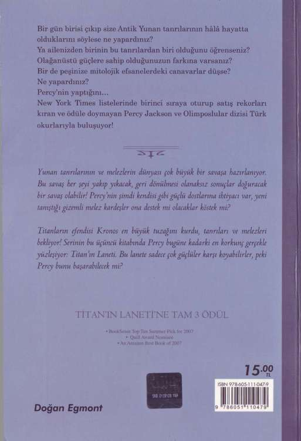
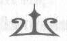
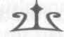
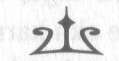
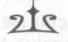
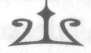
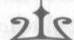
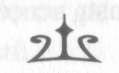
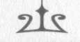

NymphE

NymphE
Farklı bir dünya yaratmış bir kampçı olan
Topher Bradfield'a
NymphE
İÇİNDEKİLER
1. Kurtarma Operasyonum Çok Ters Gidiyor
2. Müdür Yardımcısı Roketatar Buluyor
3. Bianca di Angelo Bir Seçim Yapıyor
4. Thalia New England'ı Ateşe Veriyor
5. Sualtından Telefon Görüşmesi Yapıyorum 6. Eski ve Ölü Bir Arkadaş Ziyarete Geliyor 7. At Dışında Herkes Benden Nefret Ediyor 8. Tehlikeli Bir Söz Veriyorum
9. Nasıl Zombi Yetiştirileceğini Öğreniyorum 10. Birkaç Roketçık Kırıyorum
11. Kıvırcık Bir Lamborghini Buluyor
12. Bir Domuzla Kayağa Çıkıyorum
13. Tanrıların Hurdalığını Ziyaret Ediyoruz 14. Albızlar Alasıca Baraj Sorunum
15. Noel Baha'nın Kötü İkiziyle Güreşiyorum 16. Ebedi Kötü Nefes Ejderhası ile Tanışıyoruz 17. Birkaç Milyoncuk Kilo Alıyorum
18. Bir Dost Veda Ediyor
19. Tanrılar Bizi Nasıl Öldüreceklerini Oyluyorlar 20. Noel Hediyem Yeni Bir Düşman
vıı
NymphE

BÖLÜM BİR
KURTARMA OPERASYONUM
ÇOK TERS GİDİYOR
K ı ş tatilinden önceki cuma günü, annem gece kalmama yetecek kadar ıvır zıvırı, bir miktar ölümcül silahı çantaya doldurdu ve beni yeni bir yatılı okula götürdü. Yolda arkadaşlarım Annabeth'i ve Thalia'yı da aldık.
New York'tan Bar Limanı'na giden yol sekiz saat sürü-
yordu. Sulusepken yağan kar otobanı dövüyordu. Annabeth, Thalia ve ben birbirimizi aylardır görmemiştik ama tipiyi ve yapmak üzere olduğumuz şeyi düşününce hepimiz konuşamayacak kadar endişeliydik. Annem haricinde hepimiz desem daha doğru olur. O endişeliyken daha fazla konuşur.
Westover Kışlası'na varana dek karanlık çöken yol boyunca, benim hakkımda anlatılacak beni utandıracak ne kadar bebeklik öyküsü varsa Annabeth'e ve Thalia'ya anlatmıştı.
Thalia arabanın camındaki buğuyu sildi ve dışarı baktı.
"Of, evet. Bu eğlenceli olacak."
Westover Kışlası kötü bir şövalyenin kalesine benziyordu.
Baştan aşağı kara taşlardan yapılmıştı; kuleleri, dar ve uzun pencereleri ile kocaman bir çift tahta kapısı vardı. Kışla, karlarla kaplı bir yamacın başındaydı; bir yanda buz kesmiş büyük bir orman, diğer yanda ise çırpınan, çırpındıkça köpüren gri bir okyanus vardı.
"Beklememi istemediğinize emin misiniz?" diye sordu 1
NymphE
annem.
"Yok, sağ ol anne," dedim. "Ne kadar süreceğini bilmiyorum. Biz idare ederiz."
"Ama nasıl geri döneceksiniz? Bir kuruntu var içimde Percy."
Yüzüm kıpkırmızı kesilmemiştir diye umuyordum. Annemin beni savaşlara arabayla getirmesi zaten yeterince kötüydü.
"Sorun yok Bayan Jackson," diyerek güven verici biçimde gülümsedi Annabeth. Sarı saçlarını bir kayakçı kepinin içine tıkıştırmıştı, gri gözleri de okyanusla aynı renkteydi. "Başını beladan uzak tutacağız."
Annem biraz rahatlar gibi oldu. Annem Annabeth'in seki-zinci sınıftaki en aklı başında melez olduğunu düşünür. Dahası Annabeth'in sık sık beni ölümden kurtardığına da emin... Haklı olabilir ama illa hoşuma gidecek diye kural mı var?
"Tamam o zaman canlarım," dedi annem. "Gereken her şey yanınızda mı?"
"Evet, Bayan Jackson," dedi Thalia. "Bizi getirdiğiniz için teşekkürler."
"Yedek kazağınız var mı? Cep telefonum da sizde var?"
"Anne..."
"Percy, ambrosia ve nektarını aldın değil mi? Kampa ulaşman gerekirse diye yanına bir altın drahmi aldın mı?"
"Anne ama cidden! Biz iyiyiz. Haydi çocuklar."
Annem incinmiş gibiydi, ben de üzülmüştüm ama arabadan çıkmaya hazırdım. Eğer annem üç yaşındayken küvette ne kadar şirin olduğumla ilgili bir öykü daha anlatacak olsaydı, karlara atlayıp ölene dek donmaya bırakacaktım kendimi.
Annabeth ve Thalia dışarı çıkınca peşimden geldiler.
Rüzgar ceketimden içeri buzdan hançerler gibi esiyordu.
Annemin arabası gözden uzaklaşınca Thalia, "Annen 2
NymphE
harika bir kadın Percy," dedi.
"Çok iyidir," diye düşündüğümü itiraf ettim. "Ya seninki?
Annenle görüşüyor musun hiç?"
Bunu der demez, keşke demeseydim diye düşündüm.
Kötü kötü bakışlar atmakta Thalia'nın üstüne yoktur, hele bir de üstündeki punk kıyafetleri varken. Yırtık kamuflaj ceketi, siyah deri pantolonları, boynuna taktığı zinciri, simsiyah rimelleri ve o insanı delip geçen mavi gözleri yok mu...
Ama şimdi on üstünden on alacak kadar kötücül bir şekilde bakıyordu. "Bu mesele seni ilgilendirseydi Percy..."
"İçeri girsek iyi olur," diyerek Annabeth araya girdi.
"Kıvırcık bekliyordur."
Thalia kaleye bakü ve ürperdi. "Haklısın. İçeride yardım çağrısı göndermesini gerektirecek ne var acaba?"
Westover Kışlası'nın kara kulelerine baktım uzun uzun.
"İyi bir şey yok herhalde," diye tahmin ettim.
Meşe kapılar gıcırdayarak açıldı ve üçümüz birden etrafı-
mızda uçuşan karlarla beraber giriş salonuna adım attık.
Tek diyebildiğim şu oldu: "Oha!"
Mekan devasaydı. Duvarlara sancaklar ve silahlıklar yerleştirilmişti: antika tüfekler, savaş baltaları, envai çeşit şey.
Yani, tamam, Westover Kışlası askeri okuldu falan ama bu dekorasyon adamı öldürürdü. Mecazen değil hem de.
Elim cebime gitti ki ölümcül dolmakalemim, Dalgakıran, orada saklıydı. Burada bir şeylerin ters gittiğini hemen anlamıştım. Tehlike saçıyordu burası. Thalia en sevdiği sihirli eşyasını, gümüş bileziğini ovuşturuyordu. İkimiz de aynı şeyi düşünüyorduk kesinlikle. Kavga geliyorum diyordu.
Annabeth tam "Acaba nerede..." diyecek oldu ki...
Kapılar arkamızdan tak diye kapandı.
3
NymphE
"Tam-mam," diye mırıldandım. "Sanırım bir süre buradayız."
Salonun diğer ucundan müzik sesi yankılanıyordu. Dans müziğine benziyordu.
Çantalarımızı bir sütunun arkasına zulaladık ve salonda ilerlemeye başladık. Çok gitmemiştik ki taş zeminde başka adım sesleri yankılanmaya başladı ve gölgelerin içinden bir adamla bir kadın çıkıp bize doğru yürüdü.
Her ikisinin de kırlaşmış kısa saçları ve kenarları kızıl renkle süslenmiş siyah askeri üniformaları vardı. Kadının dudaklarının üstünde çok hafif bıyıklar beliriyordu, adamsa tertemiz tıraş olmuştu ama nedense bana biraz çağdışı bir tip gibi göründü. Her ikisi de sırtlarına seloteyple çalı süpürgesi yapıştırılmış gibi dimdik yürüyorlardı.
"Eee?" dedi kadın yanıt bekler bir ses tonuyla "Sizin burada ne işiniz var?"
"Şey..." Böyle bir şeye karşı hazırlanmamıştık. Kıvırcık'a ulaşmayı, neyin ters gittiğini o kadar çok düşünmüştük ki gecenin bir yarısı okula gizlice giren üç çocuğun sorgulana-bileceği aklımıza gelmemişti. "Hanımefendi, biz sadece..."
"A-ha!" diye öyle bir bağırdı ki adam, olduğum yerde sıçra-dım. "Dansa ziyaretçiler davetli değildir! Dışarı atılazaksınız!"
Adamın garip bir aksanı vardı, Fransız gibi sanki. J ve C
harflerini Z gibi telaffuz ediyordu. Uzun, atmaca gibi bir suratı vardı. Konuşurken burun delikleri açılıp kapanıyordu, bu da burnundan yukarı bakmayı zorlaştırıyordu ki zaten gözleri iki farklı renkteydi; biri kahverengi, diğer maviydi, bir Van kedisi gibi.
Bizi karların ortasına atacağını düşünmüştüm ama o sırada Thalia öne adım attı ve tuhaf bir şey yaptı.
Parmaklarını şıklattı. Şıklama sesi keskin ve yüksekti.
4
NymphE
Belki bana öyle geldi ama elinde hava dalgalandı, tüm odada bir rüzgar esti gibi oldu. Rüzgar hepimizi sarmış, duvardaki sancakları dalgalandırmıştı.
"Ama biz ziyaretçi değiliz efendim," dedi Thalia. "Biz burada okuyoruz. Hatırlarsınız: ben Thalia. Ve bunlar Annabeth'le Percy. Sekizinci sınıftayız."
Erkek öğretmen iki renkli gözlerini kıstı. Thalia'nın ne düşündüğünü bilmiyordum. Muhtemelen şimdi hem yalan söylediğimiz için ceza yiyecek hem de karların içine atılacaktık. Ama adam ikilemde gibiydi.
Meslektaşına baktı. "Bayan Silgyver, bu öğrenzileri tanı-
yor musunuz?"
İçinde bulunduğumuz tehlikeye rağmen gülmemek için dudaklarımı ısırmak zorunda kaldım. Silgi Ver adında öğretmen mi olurmuş? Şaka yapıyordu herhalde.
Kadın gözlerini kırpıştırdı, sanki birisi onu bir transtan çıkartmıştı. "Ben...evet, sanırım tanıyorum, efendim." Kaş-
larını çatarak bize bakü sonra. "Annabeth! Thalia! Percy!
Spor salonunun dışında ne işiniz var?"
Daha yanıt veremeden, başka adım sesleri geldi ve Kıvırcık koşarak içeri daldı, nefesi kesilmişti: "Buradasınız!
Siz..."
Öğretmenleri görünce lafını bitiremedi. "Aaa, Bayan Silgyver. Dr. Diken! Ben, eee..."
"Sorun nedir, Kıvırzık Çalıdibi?" dedi adam. Ses tonu Kıvırcık'tan tiksindiğini ortaya koyuyordu. "Ne demek istiyorsunuz? Buradalarmış? Bu öğrenziler burada yaşıyor."
Kıvırcık yutkundu. "Evet, efendim. Elbette, Dr. Diken.
Demek istediğim, iyi ki buradalar... Dans gecesi için yaptıkları meyve kokteyli bir harika. Onlar yaptı ya!"
Dr. Diken bize uzun uzun ve kötü kötü baktı. Gözlerinden 5
NymphE
birisinin sahte olduğuna karar verdim. Kahverengi olan mı?
Mavi olan mı? Bizi şatonun en yüksek kulesinden aşağı atacak gibi görünüyordu, derken o sırada Bayan Silgyver sanki rüya-daymış gibi konuştu: "Evet, meyve kokteyli bir harika. Şimdi gidin. Hepiniz. Bir daha da spor salonundan çıkmayın!"
İkinci kere söylenmesini beklemedik. Evet efendim, sepet efendimleri saya saya, birkaç kere de selam durarak çıktık, başka ne yapabileceğimizi de bilmiyorduk.
Kıvırcık bizi ite kaka salondan çıkarttıktan sonra müziğin geldiği tarafa yöneltti.
Öğretmenlerin gözlerini ensemde hissediyordum ama yürürken Thalia'ya yanaşıp, fısıltıyla sordum: "Şu parmak şıklatma işini nasıl yaptın?"
"Sis'i mi soruyorsun? Kheiron daha sana bunu nasıl yapacağını göstermedi mi?"
Boğazıma bir şey düğümlendi sanki. Kheiron kamptaki baş eğitmenimizdi ama buna benzer hiçbir şey göstermemişti bana. Neden Thalia'ya göstermişti de bana göstermemişti?
Kıvırcık bizi aceleyle camında SPOR SALONU yazan bir kapıya getirdi. Okuma bozukluğuma rağmen yazıyı güç de olsa okuyabilmiştim, herhalde aşina olduğumdan.
"Ucuz atlattık!" dedi Kıvırcık. "Tanrılara şükürler olsun, iyi ki buradasınız!"
Annabeth ve Thalia aynı anda Kıvırcık'ı kucakladılar.
Ben de n'aber dercesine omzuna vurdum.
Bunca aydan sonra onu görmek çok güzeldi. Birazcık uzamıştı, birkaç tel daha bıyığı çıkmıştı ama bunların dışında insana benzemek isteyince nasıl gözüküyorsa, öyle gözükü-
yordu: Keçi boynuzlarını gizlesin diye kahverengi kıvırcık saçlarının üzerine kırmızı bir kep geçirmişti, kıllı bacaklarını ve toynaklarını saklaması için de bol bir pantolonla sahte ayaklı 6
NymphE
spor ayakkabılarını giymişti. Üzerinde siyah bir tişört vardı, üstündeki yazıyı da biraz uğraşınca okudum: WESTOVER
KIŞLASI: ACEMİLER. Acemi acaba Kıvırcık'ın rütbesi miydi, yoksa acemilik okulun armasının simgesi mi, emin olamadım.
"Acele gelmemizi gerektiren şey neydi?" diye sordum.
Kıvırcık derin bir nefes aldı. "İki tane buldum."
"İki tane melez mi?" diye sordu Thalia şaşkınlıkla. "Hem de burada?"
Kıvırcık evet anlamında başını salladı.
Bir tane meleze rastlamak bile ender görülen bir durumdu.
Bu yıl Kheiron acil durum çağrısı yaparak satirlere fazla mesai yaptırtmıştı; onları ülkenin dört bir yanına dağıtarak, kampa alınacakları bulmaları için dördüncü sınıflardan liseye kadar tüm okulların altını üstünü getirmelerini emretmişti. Zor zamanlar geçiriyorduk. Kampçılarımızı kaybediyorduk.
Bulabildiğimiz kadar çok savaşçı bulmamız gerekiyordu. Asıl sorun dünyada o kadar da çok yarı-tanrı olmamasıydı.
"Bir çocuk ve ablası," dedi Kıvırcık. "Çocuk on, kız on iki yaşında. Ebeveynleri kimler bilmiyorum ama güçlüler.
Ancak zaman azalıyor. Yardım etmeniz gerek."
"Canavarlar mı var?"
"Bir tane." Kıvırcık kaygılanmış gibiydi. "Şüpheleniyor.
Henüz emin değil sanırım ama bugün dönemin son günü.
Eminim ki onların kim olduğunu öğrenmeden kimsenin kış-
layı terk etmesine izin vermeyecek. Bu son şansımız olabilir!
Ne zaman yanlarına yanaşacak olsam, canavar da orada bitiyor, bana engel oluyor. Ne yapacağımı bilmiyorum!"
Kıvırcık çaresizlik içerisinde Thalia'ya baktı. Bunun için üzülmemeye çalıştım. Eskiden Kıvırcık yanıt aradı mı bana koşardı ama Thalia benden kıdemliydi. Hem de yalnızca babası Zeus olduğu için değil. Thalia, gerçek dünyada biz-7
NymphE
den çok daha fazla kez canavarlarla boğuşmuştu, bu yüzden de daha deneyimliydi.
"Tamam," dedi Thalia. "Bu melezler şimdi dansta mı?"
Kıvırcık evet anlamında başını salladı.
"O halde dans edelim," dedi Thalia. "Canavar kim?"
"Of," dedi Kıvırcık ve endişeyle etrafına bakındı. "Az önce onunla tanıştınız. Müdür yardımcısı, Dr. Diken."
Askeri okullarla ilgili tuhaf bir şey var: orada okuyan çocuklar, ne zaman özel bir etkinlik olsa üniformalarından kurtulacakları için çılgına dönerler. Herhalde normalde çok sıkı bir disiplin altında olduklarından, kaçırdıkları şeyleri telafi edeceğiz diye aşırıya kaçıyorlar.
Spor salonunun zemini siyahlı kırmızılı balonlarla kaplıydı. Oğlanlar bunları tekmeleyip birbirlerinin suratlarına atıyor veya krepon kağıdından yapılmış süslü şeritlerle birbirlerini boğazlamaya çalışıyorlardı. Kızlar her zaman olduğu üzere futbol takımı gibi geziyorlardı. Bolca makyaj yapmışlardı; ince askılı bluzlar, parlak renkli pantolonlar ve işkence aleti gibi gözüken ayakkabılar giymişlerdi. Arada bir çığlıklar atıp kıkır kıkır gülerek, pirana sürüsü gibi zavallı bir oğlanın etrafını sarıyorlar, en sonunda çocuğu bıraktıklarında çocuğun kafasında kurdeleler, yüzünde de rujdan graffitiler oluyordu. Daha büyük çocuklarsa bana benzer bir haldeydiler; yani orada bulunmaktan rahatsızdılar, sanki her an hayatları tehlikedeymiş gibi salonun kenarlarında takılıp gizlenmeye çalışıyorlardı. Tabii, benim durumumda bunun olması gerçekten söz konusuydu.
"İşte oradalar." Kıvırcık tribünlerde oturmuş tartışan bir çift ufak çocuğa işaret etti. "Bianca ve Nico di Angelo."
Kızın kafasında yumuşak, yeşil bir kep vardı; sanki yüzünü 8
NymphE
saklamaya çalışıyordu. Çocuk belli ki onun ufak kardeşiydi.
İkisinin de ipek gibi, siyah saçları vardı, tenleri de zeytin ren-gine kaçan esmerlikteydi, konuşurlarken de ellerini çok kullanıyorlardı. Çocuk elindeki bir tür oyun kartlarını karıştırı-
yordu. Ablası sanki bir nedenden ötürü onu azarlar gibiydi ve sanki bir şeyler ters gidiyormuş gibi etrafına bakıp duruyordu.
Annabeth sordu: "Onlar acaba... yani, onlara söyledin mi?"
Kıvırcık hayır anlamında kafasını salladı. "Nasıl olduğunu bilirsin. Söyleseydim başları daha çok belaya girebilirdi.
Kim olduklarını bildiklerinde kokuları daha da güçlenirdi."
Bana baktı, ben de onu onaylamak için kafamı salladım.
Melezler nasıl oluyor da canavarların ve satirlerin alabileceği bir "koku" saçıyordu, bir türlü anlamasam da bu koku yüzünden ölünebileceğini biliyordum. Ve bir yarı-tanrı ne kadar güçlenirse, canavarlar için o kadar çok öğle yemeği gibi kokuyordu.
"O halde onları kapıp buradan çıkaralım," dedim.
Öne atılmıştım ki Thalia elini omzuma koydu. Müdür yardımcısı Dr. Diken, tribünlere yakın bir kapıdan çıkmıştı ve di Angelo kardeşlerin yakınında duruyordu. Bize doğru bakıp soğuk bir ifadeyle başını salladı. Mavi gözü parlıyor gibiydi.
Yüzündeki ifadesinden tahmin edebildiğim kadarıyla Diken, Thalia'nın Sis numarasını yutmamıştı aslında. Kim olduğumuz konusunda şüphelenmişti. Neden burada oldu-
ğumuzu öğrenmek için bekliyordu sadece.
"Çocuklara bakmayın," diye emretti Thalia. "Onlara ulaşma fırsatını beklemeliyiz. Onlarla ilgilenmiyormuş gibi yapmalıyız.
Kokularından canavarı uzaklaştırmalıyız."
"Nasıl?"
9
NymphE
"Üçümüz güçlü melezleriz. Varlığımız canavarın kafasını karıştıracaktır. Ortama karışın. Doğal davranın. Biraz dans edin. Ama o çocukları göz ucuyla takip edin."
"Dans mı edelim?" diye sordu Annabeth.
Thalia evet dercesine başını salladı. Ne çaldığını duymak için başını kaldırdı ve suratını astı. "Ööö! Jesse McCartney'i de kim seçti?"
Kıvırcık gücenmiş gibiydi. "Ben seçtim."
"Tanrılar aşkına Kıvırcık. Bu çok berbat. Green Day falan çalamaz miydin?"
"Green ne?"
"Boş ver. Haydi, dans edelim."
"Ama ben dans edemem ki!"
"Ben seni yönlendirirsem edersin," dedi Thalia. "Haydi, keçi çocuk."
Thalia elinden tutup onu dans pistine götürürken Kıvırcık mırın kırın etmeye başladı.
Annabeth gülümsedi.
"Ne?" diye sordum.
"Bir şey yok. Sadece Thalia'nın geri dönmesi çok süper."
Annabeth geçen yazdan beri benden daha da uzun olmuştu; bu da beni rahatsız ediyordu tabii. Melez Kampı'na özgü o boncuklu deri kolye haricinde bir şey takmazdı normalde ama şimdi kulaklarında baykuş şeklinde, yani annesinin sembolü iki küpe vardı. Başındaki kepi çıkarttı ve uzun sarı saçları omzuna döküldü. Saçları böyle olduğunda nedense yaşı daha büyük gözükürdü.
"Eee..." Söyleyecek bir şey düşündüm. Doğal davranın, demişti Thalia. Tehlikeli bir görevdeki bir melezseniz, hangi lanet olasıca şey doğal oluyor ki? "Hım, bugünlerde yeni bir bina tasarladın mı?"
10
NymphE
Annabeth'in gözleri ışıldadı, ne zaman mimariden bah-setse öyle olurdu zaten. "Tanrılar aşkına Percy. Yeni okulumda seçmeli olarak üç boyutlu tasarım dersi alıyoruz ve harika bir bilgisayar programı var..."
Manhattan'daki Dünya Ticaret Merkezi enkazının olduğu yere inşa etmek üzere tasarladığı devasa bir anıttan bahset-meye başladı. Destek yapılarını, cepheleri, tonozları falan anlattı, ben de dinlemeye çalıştım. Büyüyünce süper bir mimar olmak istediğini biliyordum; matematiği, tarihi binaları, falanı filanı seviyordu ama söylediklerinin bir kelimesini bile anlamıyordum.
İşin aslı, yeni okulunu sevdiğini söylemesi beni biraz bozmuştu. İlk defa New York'ta okuyacaktı. Onu daha sık göreceğimi umuyordum. Thalia ve o Brooklyn'deki bir yatılı okula gideceklerdi; herhangi bir sorun olursa Kheiron hemen yardım edebilsin diye Melez Kampı'na yakın bir yer seçilmişti.
Ama orası kız yatılı okulu olduğundan, ben de Manhattan'daki MS-54'e gittiğimden onları neredeyse hiç görmüyordum.
"Evet ya, süpermiş," dedim. "Yani yılın kalanında da oradasın ha?"
Yüzü karardı. "Eh, belki, eğer şey olmazsa..."
"Hey!" Thalia bize seslenmişti. Kıvırcık'la yavaş bir dansa geçmişlerdi. Kıvırcık kendi ayağına takılıyor, Thalia'nın kaval kemiğine tekmeler savuruyor ve "yer yarılsa da içine girsem,"
diye düşünüyor gibi gözüküyordu. En azından onun ayağı takmaydı. Bana kıyasla sakar olmaya mazereti vardı.
"Dans etsenize çocuklar!" diye buyurdu Thalia. "Öyle durmayın, aptala benziyorsunuz."
İçim içimi yiyerek önce Annabeth'e baktım, sonra da spor salonunda tur atan kızlara.
"Eee?" diye sordu Annabeth.
11
NymphE
"Eh, kimi dansa kaldırsam?"
Mideme bir yumruk indirdi. "Beni, Yosun Kafa!"
"Aa. Of, haklısın."
Böylece dans pistine gittik, Thalia ve Kıvırcık ne durum-dalar diye göz ucuyla baktım. Bir elimi Annabeth'in beline koydum, o da judo tutuşuyla beni fırlatacakmış gibi diğer elimi tuttu.
"Isırmam," dedi bana. "Açıkça söyle Percy. Sizin okulda dans düzenlemiyorlar mı?"
Yanıt vermedim. Aslında düzenliyorlardı. Ama ben asla hiçbirinde gerçekten dans etmemiştim. Ben genelde köşede basket topuyla oynayan çocuklarla takılırdım.
Birkaç dakika sağa sola ilerledik. Ufak şeylere dikkat etmeye çalıştım, krepon kedi merdivenleri, meyve kokteyli kasesi falan; yeter ki Annabeth'in benden uzun olduğuna, elimin ter içinde kalıp iğrenç hale geldiğine ve sürekli onun ayak parmaklarına bastığıma dikkat etmeyeyim.
"Daha önce ne diyordun?" diye sordum. "Okulda bir sorun falan mı var?"
Annabeth dudaklarını büzdü. "Sorun bu değil. Babam."
"Aa, of..." Annabeth'in babasıyla ilişkisi biraz dalgalıydı.
"Aranızın düzeldiğini sanıyordum. Mesele üvey annen mi yine?"
Annabeth iç geçirdi. "Babam taşınmaya karar verdi. Tam ben New York'a alışırken, yeni bir iş buldu; Birinci Dünya Savaşı ile ilgili bir araştırma yapması gerekiyormuş. Hem de San Francisco'da."
Bunu sanki Ceza Tarlaları'ndan veya Hades'in terli şor-tundan bahseder gibi söyledi.
"Yani senin de taşınmanı istiyor, öyle mi?" diye sordum.
"Evet, ülkenin ta öbür ucuna," dedi sersefil bir halde.
12
NymphE
"Üstüne üstlük melezler San Francisco'da yaşayamaz ki.
Bunu bilmesi gerekirdi."
"Ne? Nedenmiş?"
Annabeth gözlerini devirdi. Belki de şaka yaptığımı düşü-
nüyordu. "Bilirsin işte. O, orada."
"Hı, evet," dedim. Gerçi neden bahsettiğine dair en ufak bir fikrim yoktu ama aptal durumuna düşmek istememiştim.
"Öyleyse... tekrar kampa mı döneceksin? Ne yapacaksın?"
"Durum bundan daha ciddi Percy. Ben... benim sana bir şey söylemem gerek sanırım."
Birden dondu kaldı. "Gitmişler."
"Ne?"
Baktığı yere baktım. Tribünlere. İki melez çocuk, Bianca ve Nico artık orada değildi. Tribünlerin yanındaki kapı da ardına kadar açıktı. Dr. Diken de ortalıkta gözükmüyordu.
"Thalia ve Kıvırcık'ı bulmalıyız!" Annabeth delice etrafına bakındı. "Of, dans ede ede nereye gitmiş bunlar? Haydi gel!"
Kalabalığın içinde koşmaya başladı. Tam peşinden gidecektim ki bir kız çetesi önüme çıktı. Kurdele ve ruj muamelesine maruz kalmamak için etraflarından döndüm.
Onlardan kurtulduğumda Annabeth gözden kaybolmuştu.
Tam bir çember çizerek Annabeth'i, Thalia'yı, Kıvırcık'ı görmek için bakındım. Onları görmek yerine, kanımı donduran bir sahneye şahit oldum.
Yaklaşık on beş metre uzakta, spor salonunun zemininde tam Bianca di Angelo'nun giydiğine benzer kıvrımlı, yeşil bir kep duruyordu. Yanına da birkaç tane oyun kartı saçıl-mıştı. Sonra göz ucuyla Dr. Diken'i görür gibi oldum.
Aceleyle spor salonunun diğer ucundaki bir kapıdan girer-ken, tıpkı kedi yavrusu gibi enselerinden yakaladığı di 13
NymphE
Angelo kardeşleri çekiştiriyordu.
Hâlâ Annabeth'i göremiyordum ama diğer yana doğru, Thalia ve Kıvırcık'ı bulmaya gideceğini biliyordum.
Neredeyse ardından koşacaktım ki sonra aklıma geldi: Dur!
Thalia'nın girişte söylediklerini, parmak şıklatma numarasını sorunca şaşkınlıkla bana baktığını hatırladım. Kheiron daha sana bunu nasıl yapacağını göstermedi mi? Kıvırcık'ın ona nasıl baktığını, paçasını kurtarmasını beklediğini düşün-düm.
Thalia'ya gücendiğimden değil. Harika biri o. Babasının Zeus olması, herkesin ilgisini çekmesi onun suçu değil. Yine de her sorunu çözmesi için ona koşmam gerekmiyordu.
Dahası buna vakit yoktu. Di Angelo kardeşlerin başları dert-teydi. Arkadaşlarımı bulana kadar, her iş çoktan olup bitebilirdi. Canavarları bilirdim. Bunu kendim halledebilir-dim.
Dalgakıran'ı cebimden çıkarttım ve Dr. Diken'in ardından koştum.
Kapı, karanlık bir koridora açılıyordu. İleriden kavga dövüş
sesleri geliyordu, sonra acıyla inleme sesi geldi. Dalgakıran'ın kapağını çıkarttım.
Elimde sapı deri kayışlarla sarılmış, bir metre boyunda bronzdan bir Yunan kılıcı tutana kadar dolmakalem büyüdü.
Kılıç hafifçe ışıldıyor, sıra sıra dizili dolaplara altın renkli bir parılü saçıyordu.
Koridor boyunca koştumsa da diğer uca vardığımda kimseyi göremedim. Bir kapıyı açtım ve kendimi ana salonda buldum. Etrafım tamamen kuşatılmıştı. Hiçbir yerde Dr.
Diken'i göremiyordum ama odanın diğer ucunda di Angelo 14
NymphE
kardeşler duruyordu. Dehşetten donakalmış bir halde ayakta dikiliyorlar, doğruca bana bakıyorlardı.
Yavaşça onlara yaklaşırken kılıcımın ucunu yere eğdim.
"Her şey yolunda. Size zarar vermeyeceğim."
Yanıt vermediler. Korku dolu gözlerle bana bakıyorlardı.
Onların derdi neydi? Dr. Diken neredeydi? Belki de Dalgakıranın varlığını hissedip geri çekilmişti? Canavarlar ilahi bronz kılıçlardan ölümüne nefret ederlerdi.
"Adım Percy," dedim, alçak bir sesle konuşmaya çalışarak. "Sizi buradan çıkartıp güvenli bir yere götüreceğim."
Bianca'nın gözleri büyüdü. Yumruklarını sıktı. Bu ifa-desinin ne anlama geldiğini çok geç anladım. Benden korkmuyordu. Beni uyarmaya çalışıyordu.
Döndüm ve bir şey FIYUUP! etti. Omzumda bir acı patladı. Dev bir el beni geri itmiş gibi duvara çarptım.
Kılıcımla havayı biçtim ama kılıcımı saplayacağım bir şey yoktu ortalıkta.
Salonda soğuk bir kahkaha yankılandı.
"Evet. Perseus Zackson," dedi Dr. Diken. Aksanı soya-dımdaki J harfinin içine ediyordu.
Omzumu kurtarmaya çalıştım. Ceketim ve gömleğim bir tür çiviyle duvara mıhlanmıştı. Bu kara bir hançere benzer, otuz santim uzunluğunda bir silahtı sanki. Kıyafetlerimi delip geçerken omzumun derisini yırtmıştı ve yara sanki alev alev yanıyordu. Daha önce de böyle bir şey hissetmiş-
tim. Zehir.
Etrafa dikkatimi vermeye çalıştım. Bayılmamalıydım.
Bize doğru kara bir siluet yanaştı. Dr. Diken loş ışığa adım attı. Hâlâ insana benziyordu ama yüzü bir gulyabani suratı gibiydi. Dişleri kusursuz beyazlıktaydı, kahverengi/mavi gözleri kılıcımın ışığını yansıtıyordu.
15
NymphE
"Spor salonundan çıktığın için teşekkür ederim," dedi.
"Ortaokul danslarından nefret ederim."
Tekrar kılıcımı savurmaya çalıştım ama erişemeyeceğim yerdeydi.
FIYUUP! Dr. Diken'in arkasında bir yerlerden, bir şey daha fırladı. Ama adam hiç hareket etmemişti ki! Sanki arkasında görünmez biri vardı ve bıçak atıyordu.
Yanımdaki Bianca ciyaklamaya başladı. İkinci diken, kızın yüzünün üç santim uzağına, taş duvara mıhlanmıştı
"Üçünüz de benimle gelezeksiniz," dedi Dr. Diken.
"Sessiz olup bana itaat edezeksiniz. Tek bir ses çıkarırsanız, yardım isterseniz, karşı çıkarsanız, ne kadar keskin nişanzı olduğumu görezeksiniz."
16 NymphE

BÖLÜM İKİ
MÜDÜR YARDIMCISI
ROKETATAR BULUYOR
D r . Diken ne tür bir canavardı böyle bilmiyordum ama hızlı olduğu kesindi.
Belki kalkanımı çalıştırsam kendimi savunabilirdim. Tek yapmam gereken kol saatime dokunmaktı. Ama di Angelo kardeşleri korumak başka meseleydi. Yardıma ihtiyacım vardı ve aklıma tek bir yol geliyordu.
Gözlerimi kapadım.
"Sen ne yapıyorsun Zackson?" dedi Dr. Diken ıslaya tıslaya. "Yürü bakalım!"
Gözlerimi açtım ve aksayarak yürümeye başladım.
"Omzum," diye bir yalan attım, çok perişan haldeymiş
gibi konuşuyordum ki bu şartlarda hiç zor olmuyordu.
"Yanıyor!"
"Peh! Zehrim yakar tabii. Seni öldürmeyezektir korkma.
Yürü!"
Diken bizi dışarıya götürdü, ben de zihnimi odaklamaya çalıştım. Kafamda Kıvırcık'ın görüntüsünü oluşturdum. Aklımı hissettiğim korkuya ve tehlikeye verdim. Geçen yaz Kıvırcık, aramızda bir duygubağı oluşturmuştu. Başı dertte olunca bilmem için rüyalarıma girmişti. Bildiğim kadarıyla duygularımız hâlâ birbirine bağlıydı ama Kıvırcık'a ulaşmayı daha önce hiç denememiştim. Kıvırcık uyanıkken bu işe yarayacak 17
NymphE
mıydı, onu bile bilmiyordum.
Hey, Kıvırcık! diye düşündüm. Diken bizi kaçırıyor!Zehirli çivi fırlatan bir manyak o! İmdat!
Diken, bizi ormana doğru yürütüyordu. Eski usul lambalarla kısmen aydınlatılmış, karlı bir patikaya girdik. Omzum sızlı-
yordu. Yırtık kıyafetlerimden içeri esen rüzgar o kadar soğuktu ki neredeyse bir Percy dondurmasına dönüşecektim.
"İleride bir açıklık var," dedi Diken. "Sizin için araç çağı-
razağız."
"Ne aracı?" diye sordu Bianca. "Bizi nereye götürüyorsun?"
"Kapa çeneni. Şimdi seni çekemem!"
"Ablamla böyle konuşamazsın," dedi Nico. Sesi titriyordu titremesine ama ağzını açıp bir şey söyleyebilmiş olması bile etkileyiciydi.
Dr. Diken öyle bir homurdandı ki bir insandan böyle bir ses çıkması mümkün değildi. Ensemdeki tüyler diken diken oldu ama kendimi zorla yürüyüp uslu, küçük bir esir gibi davranmaya zorladım. Bir yandan da deli gibi düşüncelerimi yollamaya çalışıyordum, bunun için de Kıvırcık'ın dikkatini ne çekerse onlara yoğunlaşıyordum: Kıvırcık! Elmalar! Teneke kutular! Kıllı keçi poponu'kaldır, yanına da ağır zırhlı arkadaş-
lar almayı unutma.
"Durun," dedi Diken.
Ağaçlar seyreldi ve bir açıklığa vardık. Denize bakan bir uçuruma gelmiştik. Daha doğrusu otuz-kırk metre aşağıda deniz olduğunu hissetmiştim. Kayalara çarpan dalgaların sesini duyabiliyor, tuzlu ve soğuk köpükleri koklayabiliyor-dum. Ama tüm görebildiğim sis ve karanlıktı.
Dr. Diken bizi uçurumun kenarına itti. Tökezledim, Bianca beni tuttu.
18
NymphE
"Teşekkürler," diye fısıldadım.
"O ne?" diye fısıldadı o da. "Onunla nasıl dövüşeceğiz?"
"Ben... bir yol bulacağım."
"Korkuyorum," diye mırıldandı Nico. Bir şeyle oynayıp duruyordu; sanırım bu bir tür ufak metal oyuncak askerdi.
"Konuşmayı kesin!" dedi Dr. Diken. "Bana dönün!"
Döndük.
Dr. Diken'in iki renkli gözlerinde aç parıltılar vardı.
Ceketinden bir şey çıkardı. İlk başta sustalı bıçak sandım ama sadece bir telefondu bu. Yandaki tuşa bastı ve "Paket...
teslime hazır," dedi.
Anlaşılmayan bir yanıt geldi, Diken'in telefonu telsiz şeklinde de çalışabiliyordu. Çok modern ve tuhaftı; düşünsenize, cep telefonu kullanan bir canavar.
Arkama baktım, kaç metre yukarıda olduğumuzu tahmin etmeye çalışıyordum.
Dr. Diken güldü. "Nasıl istersen Poseidon'un oğlu. Atla!
İşte, deniz orada. Kurtar kendini."
"Sana ne dedi şimdi bu?" diye fısıldadı Bianca.
"Sonra anlaürım," dedim.
"Bir planın var, değil mi?"
Kıvırcık! diye düşündüm çaresizce. Bana gel!
Belki okyanusa atlarken di Angelo kardeşleri de yanıma alırdım. Eğer o atlayıştan kurtulabilirsek, suyun bizi korumasını sağlayabilirdim. Benzeri şeyleri daha önce yapmıştım.
Babamın keyfi yerindeyse ve beni dinliyorsa yardım edebilirdi. Belki, tabii.
"Siz daha suya değmeden gebertirim sizi," dedi Dr. Diken, sanki düşüncelerimi okumuştu. "Kim olduğumu anlamıyorsun, değil mi?"
Arkasında bir şey kıpırdanır gibi oldu ve bir şey füze gibi 19
NymphE
fırlayarak kulağımı yaladı geçti. Dr. Diken'irı arkasında bir şey havaya kalkmıştı; mancınık desem değil, daha esnek bir şey... sanki bir kuyruk.
"Maalesef," dedi Dr. Diken "zanlı ele geçmeniz isteniyor, mümkünse. Yoksa çoktan ölmüştünüz."
"Bizi kim istiyor?" diye sordu Bianca. "Çünkü fidye alaca-
ğınızı düşünüyorsanız, yanılıyorsunuz. Bizim bir ailemiz yok. Nico ve ben..." Sesi çatladı. "Başka kimsemiz yok."
"Vah vaah," dedi Dr. Diken. "Dert etmeyin, sizi veletler.
Patronumla yakında tanışırsınız. Sonra yepyeni bir aileniz olazak."
"Luke," dedim. "Sen Luke'a çalışıyorsun."
Eski düşmanımın adını duyunca Dr. Diken'in yüzü buruştu; ki o eski düşmanım, eski dostumdu ve beni defalarca öldürmeye çalışmıştı. "Ne olup bittiğinden haberin bile yok Perseus Zackson. Jeneral sana durumu anlatsın. Ona bu geze büyük hizmetin dokunazak. Seninle tanışmaya zan atıyor."
"Jeneral de kim?" diye sordum. Sonra bu adı Fransız aksanıyla söylediğimi fark ettim. "Yani... kim bu General?"
Diken ufka doğru bakıyordu. "Hah, işte. Arazınız geldi."
Dönünce uzaklarda bir ışık gördüm, denizin üstünde bir projektör yanıyordu. Sonra da gittikçe gürleşen ve yaklaşan helikopter pervanesi sesleri duydum.
"Bizi nereye götürüyorsun?" dedi Nico.
"Gurur duymalısın oğlum. Büyük bir orduya katılma şansı yakaladın! Şu kartlar ve bebeklerle oynadığın o aptal oyundaki gibi."
"Onlar bebek değil! Heykelcik! Sen de al o büyük ordunu da..."
"Bak, bak," dedi Dr. Diken tehlikeli bir sesle. "Bize katılma konusundaki fikrini değiştirezeksin çozuğum. Değiştirmez-20 NymphE
sen de, eh... Melezleri kullanazağımız başka işler de var.
Onca zanavarın karnı nasıl doyazak? Büyük Uyanış geliyor."
"Büyük ne?" diye sordum. Bir plan bulana kadar onu oyalamalı, konuşturmalıydım.
"Zanavar uyanışı," dedi Dr. Diken şeytani bir gülümsemeyle. "En belalıları, en kudretlileri uyanıyor şimdilerde.
Binlerze yıldır görülmemiş zanavarlar. Ölümlülerin hayatlarında görmedikleri türden ölüme, yıkıma sebep olacaklar.
Ve çok geçmeden en önemli zanavarı ele geçirezeğiz, Olimpos'u çökertezek olan zanavarı!"
"Tamam," diye fısıldadı Bianca bana. "Bu tam bir zırdeli."
"Uçurumdan atlamalıyız," dedim ona sessizce. "Denize..."
"Aman, ne süper fikir! Sen de tam zırdeliymişsin."
Onunla tartışacak vaktim olmadı çünkü tam o sırada görünmez bir güç bana çarptı.
Olanları şöyle bir düşününce Annabeth'in hamlesi dahiyane geliyor. Görünmezlik kepini takarak di Angelo'ların ve benim üstümüze atlamıştı. Dr. Diken bir saniyeliğine de olsa afallamış, bu nedenle de fırlattığı ilk dikenler bize zarar vermeden, ıslık çalarak tepemizden geçmişti. Bu da Thalia'ya ve Kıvırcık'a arkadan yaklaşma olanağı doğurmuştu.
Thalia'nın elinde büyülü kalkanı Aegis vardı.
Eğer Thalia'nın nasıl savaşa atladığını görmemişseniz, ömrünüzde hiç gerçekten korkmamışsınız demektir. Cebinde taşıdığı biber gazı kutusu, teleskop gibi açılarak kocaman bir mızrağa dönüşse de en korkuncu bu değil. Babasının kalkanının bir kopyası olan kalkanı -onun da adı Aegis- Athena'nın bir hediyesi. Kalkanın üzerinde bronzdan yapılmış bir gorgon Medusa başı işlenmiş ve göreni taşa dönüştürmese de o kadar 21
NymphE
dehşet verici ki pek çok insan korkuyla kaçıyor.
Dr. Diken bile görünce afalladı, inledi.
Thalia mızrağıyla yaklaştı: "Zeus için!"
Dr. Diken şimdi hapı yuttu, diye düşündüm. Thalia kafasına doğru mızrağı dürtmüştü ama adam kükreyerek mızrağı kenara itti. Eli kocaman ve turuncu renkli bir pençeye dönüştü.
Thalia'ya pençesini savurdu ama kalkana çarpınca kıvılcımlar saçıldı. Aegis olmasaydı Thalia ekmek gibi dilimlenmişti.
Thalia geriye doğru takla atıp ayaklarının üstüne düştü.
Arkamızdaki helikopter sesi gitgide artıyordu ama dönüp bakmaya cesaret edemiyordum.
Dr. Diken, Thalia'yı yeniden bir ok yağmuruna tuttu ve bu kez, bu işi nasıl yaptığını gördüm. Bir kuyruğu vardı; kayış gibi, akrebinkine benzer, ucu diken diken bir kuyruk.
Savurduğu dikenler Aegis'e çarpıp sekti ama çarpmanın etkisiyle Thalia yere devrildi.
Kıvırcık öne atıldı. Flütünü dudağına götürdü ve çalmaya başladı. Sanki korsanların dans edeceği türden, çılgın bir dans müziğiydi bu. Karlardan çimenler boy verdi. Birkaç saniye içinde urgan kadar kalın çimler, Dr. Diken'in bacaklarına dolandı ve onu kımıldayamaz hale getirdi.
Dr. Diken kükredi ve değişmeye başladı. Gerçek haline gelene kadar büyüdü. Yüzü hâlâ insan yüzüydü ama bedeni kocaman bir aslan bedeniydi. Kayış gibi, dikenli kuyruğu ile her yöne dikenler saçıyordu.
"Bir mantikor!" dedi Annabeth, artık görünür haldeydi.
Üstümüze yığılınca sihirli New York Yankees kepi yere düş-
müştü.
"Siz nesiniz böyle?" diye sordu Bianca di Angelo. "Ve o ne?"
"Bir mantikor mu?" Nico'nun nefesi kesilmişti. "Üç bin 22
NymphE
saldırı gücü ve kurtarma atışlarına artı beşi var!"
Nico'nun neden bahsettiğini anlamamıştım ama bunu düşünecek halde değildim. Mantikor pençeleriyle Kıvırcık'ın otlarını lime lime etti, sonra kükreyerek bize döndü.
"Yere yatın!" Annabeth, di Angelo kardeşleri doğruca karın içine attı. Son saniyede aklıma kendi kalkanım geldi.
Kol saatime bastım ve metal kaplama sarmallar çizerek açı-
larak kalın bronz bir kalkana dönüştü. Tam vaktinde.
Dikenler öyle bir güçle vurdu ki metalin içine gömüldüler.
Canım kalkanım, kardeşimin hediyesi kötü zarar almıştı.
İkinci bir saldırıyı durdurabileceğinden emin değildim.
Küt diye bir ses, ardından da bir inleme geldi ve Kıvırcık pat diye yanıma düştü.
"Teslim olun!" diye kükredi canavar.
"Asla!" diye bağırdı uzaktaki Thalia. Canavara hücum etti ve bir an onu delip arkasından geçecek zannettim. Ama sonra gök gürültüsü gibi bir ses koptu, arkamızdan gelen bir ışığa boğulduk. Sislerin içerisinden bir helikopter çıktı, uçurumun hemen ilerisinde havada asılı duruyordu. Kapkara, parlak askeri bir helikopterdi bu, yandaki kanatçıklarda da lazer güdümlü roketleri vardı. Helikopteri yöneten birileri olmalıydı ama burada ne işi vardı? Ölümlüler nasıl olur da bir canavarla beraber çalışırdı? Projektörün ışığı Thalia'yı kör etti ve mantikor kuyruğunu kullanarak onu bir kenara attı. Kalkanı karlara gömüldü. Mızrağı da diğer yana uçtu.
"Hayır!" Ona yardım için koştum. Tam Thalia'nın göğ-
süne çarpacakken bir dikeni savuşturdum. Kalkanımı üzerimize çektiysem de yeterli gelmeyeceğini biliyordum.
Dr. Diken güldü. "Şimdi görüyor musunuz ne kadar çaresiz olduğunuzu? Pes edin küçük kahramanlar."
Bir canavarla tam donanımlı bir helikopter arasında kal-23
NymphE
mıştık. Hiç şansımız yoktu.
Sonra tiz, yüksek bir ses duydum: ormandan gelen bir av borusu sesi.
Mantikor donakaldı. Bir an için kimse kımıldamadı. Yalnızca fırıl fırıl dönerek yağan kar, rüzgar ve helikopterin pervane-lerinin sesi vardı.
"Hayır," dedi Dr. Diken. "Bu olamaz..."
Daha lafını tamamlayamadan, ay ışığı gibi bir şey yıldırım hızıyla uçtu. Dr. Diken'in omzunda parlak, gümüş bir ok filiz-lenmişti.
Geriye sendeledi, acı içinde bağırıyordu.
"Lanet olsun size!" diye haykırdı Diken. Düzinelerce dikeni okun geldiği ormana doğru bir anda fırlattı; ama dikenler kadar hızlı uçan gümüş oklar onları havada buldu ve ikiye böldü. Bu olacak iş değildi, gözlerim bana bir oyun oynuyor olmalıydı. Hiç kimse, kamptaki Apollon çocukları bile bu kadar keskin nişan alıp bu kadar hızla ok atamazdı.
Mantikor acıyla çığlık atarak omzundaki oku çıkarttı. Zor nefes alıyordu. Kılıcımı ona savurayım dedim ama göründüğü kadar yaralı değildi. Hızla yana çekilip saldırımdan kurtuldu ve kuyruğunu kalkanıma vurunca beni yana devirdi.
Sonra ormandan okçular fırladı. Bunlar yaklaşık bir düzine kızdı. En küçüğü belki henüz on yaşındaydı. En yaş-
lısıysa benim gibi on dördünde olmalıydı. Gümüş renkli kar montları ve kot giymişlerdi, hepsinin elinde de yay vardı.
Mantikora kararlı ifadelerle yaklaştılar.
"Avcılar!" diye bağırdı Annabeth.
Yanımdaki Thalia, "Of, harika," diye fısıldadı.
Ne demek istediğini soracak şansım olmadı.
Daha yaşlı okçulardan birisi yayını gererek öne geldi. Uzun 24
NymphE
boylu ve zarifti; bakır renginde bir teni vardı. Diğer kızların aksine uzun siyah saçlarının tepesinde gümüş bir taç vardı, bir Pers prensesine benziyordu. "Öldürmeye izin var mı leydim?"
Kime seslendiğini anlamadım çünkü kız gözlerini Mantikor'dan ayırmamıştı.
Canavar inledi. "Bu haksızlık! Doğrudan müdahale bu!
Kadim Yasalar'a karşı geliyorsunuz!"
"Öyle denemez," dedi başka bir kız. Bu benden daha küçük bir kızdı, on iki ya da on üç yaşındaydı. Kumral saçlarını atkuyruğu yapmıştı, çok tuhaf metalik sarı gözleri vardı. Yüzü o kadar güzeldi ki bir an nefes alamadım; ama yüzünde çok sert ve tehlikeli bir ifade vardı. "Tüm vahşi hayvanları avla-mak benim hükmümdedir. Ve sen, çirkin yaratık, vahşi bir hayvansın." Başında taç olan büyük kıza baktı. "Zoe, izin verilmiştir."
Mantikor kükredi. "Bunları zanlı ele geçiremezsem, o halde ben de zanlarını alırım!"
Thalia'nın ve benim üzerimize atıldı; zayıf düştüğümüzü, şaşkın olduğumuzu biliyordu.
"Hayır!" diye bağırdı Annabeth ve canavara hücum etti.
"Geri dur, melez!" dedi başında taç olan kız. "Ateş hattından çekil!"
Ama Annabeth canavarın sırtına atladı ve bıçağını yele-sinden içeri soktu. Mantikor uludu, kuyruğunu kırbaç gibi savurarak olduğu yerde dönmeye başladı. Annabeth can havliyle asılmıştı hayvanın yelesine.
"Ateş!" diye emretti Zoe.
"Hayır!" diye haykırdım.
Ama avcılar yine de saldılar oklarını. İlki mantikorun ensesine girdi. Diğeriyse göğsüne. Mantikor inleyerek geri 25
NymphE
sendeledi: "Bitmedi avzı! Bunu ödetezeğim sana!"
Ve kimse kılını kıpırdatamadan, sırtında hâlâ Annabeth olduğu halde, canavar uçurumdan atladı ve karanlığa gömüldü.
"Annabeth!" diye bağırdım.
Peşinden atlayacaktım ama düşmanlarımızın bizimle işi bitmemişti. Helikopterden tak-tak-tak diye sesler geldi. Ateş
açmışlardı.
Avcıların çoğu, ayaklarının dibindeki karlarda ufak delikler açılınca dört bir yana dağıldı. Fakat kumral saçlı kız sadece başını kaldırıp sakince helikoptere baktı.
"Faniler," diye bağırdı "avıma bakmaya izniniz yok."
Elini ileri itti ve helikopter toza dönüşüp patladı. Yok, bu toz değildi. Kara metal bir kuş sürüsüne, kuzgunlara dönüştü ve gecenin içine dağıldı.
Avcılar bize yaklaştı.
Zoe adındaki avcı Thalia'yı görünce olduğu yerde kaldı.
"Sen ha!" dedi nefret dolu bir sesle.
"Gecegölgesi Zoe." Thalia'nın sesi öfkeyle titriyordu.
"Her zamanki gibi, tam zamanında."
Zoe bizlere baktı. "Dört melez ve bir satir, leydim."
"Evet," dedi daha ufak kız. "Kheiron'un kampçılarından bazıları, gördüm."
"Annabeth!" diye haykırdım. "İzin verin onu kurtaralım!"
Kumral saçlı kız bana döndü. "Maalesef Percy Jackson, arkadaşına çare yok."
Kendimi zorlayıp ayağa kalkmayı denedim ama bir çift kız beni yere yatırdı.
"Kendini uçurumlardan atacak halin yok," dedi kumral saçlı kız.
26 NymphE
"Bırak beni!" dedim. "Kim olduğunu sanıyorsun?"
Zoe sanki bana bir tokat patlatacakmış gibi öne çıktı.
"Hayır," diye buyurdu diğer kız. "Saygısızlık olduğunu sanmıyorum Zoe. Sadece aklı karışmış. Anlamıyor."
Genç kız bana baktı, gözleri kışın parlayan aydan daha soğuk, daha parlaktı. "Ben Artemis'im," dedi. "Av Tanrıçası."
27
NymphE

BÖLÜM ÜÇ
BIANCA di ANGELO
BİR SEÇİM YAPIYOR
D r . Diken'in bir canavara dönüştüğünü ve Annabeth'le beraber bir uçurumdan aşağı uçtuğunu gördükten sonra, artık başka hiçbir şey beni şaşırtamaz diye düşünmüşsünüz-dür. Ama bu on iki yaşındaki kız bana tanrıça Artemis olduğunu söyleyince öyle akıllıca bir laf ettim ki: "Hım...
peki."
Tabii, Kıvırcık'ın dediklerine kıyasla bu hiçbir şey değildi.
Kıvırcık önce nefesini tuttu sonra alelacele karların içinde diz döktü ve bir yaygaradır kopardı: "Teşekkürler Leydi Artemis. Siz öyle... siz öyle... Vay be!"
"Ayağa kalk, keçi çocuk!" diye çıkıştı Thalia. "Dert edecek başka şeyler var. Annabeth'i kaybettik!"
"Hey!" dedi Bianca di Angelo. "Geri çekilin. Mola!"
Herkes ona baktı. Bianca sırayla hepimize parmağıyla işaret etti, sanki noktaları birleştirmeye çalışıyordu. "Siz-siz de kimsiniz be?"
Artemis'in yüzündeki ifade yumuşadı. "Canım kızım, asıl senin kim olduğunu sormak daha iyi bir soru olmaz mı?
Kimdir senin annen, baban?"
Bianca endişeyle kardeşine baktı ki o da hayretle Artemis'e bakıyordu.
"Anne babamız öldü bizim," dedi Bianca. "Bizler öksü-
28 NymphE
züz. Okul paramızı bir banka fonu ödüyor ama..."
Konuşamadı. Yüzlerimize bakınca ona inanmadığımızı tahmin etmiş olmalı.
"Ne var?" diye sordu. "Doğruyu söylüyorum."
"Sen bir melezsin," dedi Gecegölgesi Zoe. Aksanı bir garipti, nereli olduğunu çıkaramıyordum. Sanki eski bir kitaptan satırlar okuyormuşçasına, eski usulde konuşuyordu. "Bir faniydi ebeveyninden bir tanesi. Diğeri ise Olimposluydu."
"Bir Olimpiyat... atleti mi?"
"Hayır," dedi Zoe. "Tanrılardan biri."
"Süper!" dedi Nico.
"Hayır!" Bianca'nın sesi titriyordu. "Bu hiç de süper değil!"
Nico sanki tuvaleti gelmiş gibi ortalıkta zıplıyor, dans ediyordu. "Zeus'un gerçekten altı yüz zarar veren şimşek okları var mı? Fazladan hareket puanı veren..."
"Nico, kapa çeneni!" Bianca elleriyle yüzünü örttü. "Bu senin aptal Efsanebüyüsü oyunun değil, tamam mı? Tanrılar yok!"
Annabeth hakkında ne kadar endişelensem de (tek yapmak istediğim onu aramaktı) di Angelolar için üzülmeden edemiyordum. Bir yarı-tanrı olduğumu ilk öğrendiğimde nasıl hissettiğimi hatırladım.
Thalia da benzer şeyler hissediyor olmalıydı çünkü gözlerindeki öfke bir miktar azaldı. "Bianca, biliyorum, buna inanması zor. Diğer tanrılar hâlâ ortalıkta. Bana güven.
Ölümsüzler. Ve ne zaman sıradan insanlardan çocukları olsa, yani bizim gibi çocuklar, eh.... Tehlikeli hayatlarımız oluyor."
"Tehlike mi?" dedi Bianca. "Uçurumdan düşen kız gibi yani?"
Thalia sırtını döndü. Artemis bile ıstırap içinde gibiydi.
29
NymphE
"Annabeth'i düşünüp umutsuzluğa kapılmayın," dedi tanrıça. "O cesur bir kızdı. Bulunabilirse ben bulacağım."
"O halde neden onu aramamıza izin vermiyorsun?" diye sordum.
"O gitti. Hissedemiyor musun, Poseidon'un oğlu? Bu işe bir sihir karışmış. Nasıl veya neden, bilmiyorum ama arkadaşın sırra kadem bastı."
Hâlâ o uçurumdan atlayıp onu aramak istiyordum ama Artemis'in haklılığını hissedebiliyordum. Annabeth gitmişti.
Eğer aşağıda, denizde olsa, diye düşündüm, varlığını hisse-debilmem gerekirdi.
"Oo!" Nico elini kalırdı. "Dr. Diken ne oldu? Oklarla onu nasıl vurdunuz öyle? Muhteşemdi. Öldü mü?"
"O bir mantikordu," dedi Artemis. "Umarım şimdilik yok olmuştur ama canavarlar gerçekten ölmez. Zamanla, tekrar tekrar oluşurlar; tekrar oluştuklarında da avlanmaları gerek."
"Yoksa bizi avlarlar," dedi Thalia.
Bianca di Angelo titredi. "Bu durumu açıklıyor... Nico, geçen yazı hatırlıyor musun, hani başkentte bize saldırmayı deneyen adamlar vardı?"
"Ve bir de o otobüs şoförü," dedi Nico. "Koçboynuzlu olan. Sana o gerçek demiştim."
"Bu yüzden Kıvırcık sizi kolluyordu," dedim. "Eğer melez olduğunuz ortaya çıkarsa sizi emniyete almak için."
"Kıvırcık?" Bianca ona bakakalmışü. "Sen bir yarı-tanrı mısın?"
"Eh, daha doğrusu ben bir satirim." Ayakkabılarını bir tekme atarak savurdu ve keçi toynaklarını gösterdi. Bianca az kaldı düşüp bayılacaktı.
"Kıvırcık tekrar ayakkabılarını giy," dedi Thalia. "Kızı 30
NymphE
korkutuyorsun."
"Hey, benim toynaklarım tertemiz!"
"Bianca," dedim "sana yardım etmeye gedik. Senin ve Nico'nun hayatta kalabilmeniz için eğitim almanız şart. Dr.
Diken karşılaşacağınız son canavar değil. Kampa gelmeniz gerek."
"Ne kampı?" diye sordu.
"Melez Kampı," dedim. "Melezler hayatta kalmayı ve başka şeyleri orada öğrenir. Bize katılıp istersen sene boyunca orada kalabilirsin."
"Süpermiş, haydi gidelim!" dedi Nico.
"Bekleyin." Bianca olmaz dercesine kafasını salladı.
"Hayır, ben..."
"Bir seçenek daha var," dedi Zoe.
"Hayır, yok!" dedi Thalia.
Thalia ve Zoe öfkeyle birbirlerine baktılar. Neden bah-settiklerini anlamıyordum ama geçmişte aralarında kötü şeyler olduğundan emindim. Bir nedenden ötürü birbirlerinden cidden nefret ediyorlardı.
"Bu çocukları yeterince yorduk," dedi Artemis. "Zoe, birkaç saat burada dinleneceğiz. Çadırları kurun. Yaralılarla ilgilenin.
Ayrıca misafirlerimizin eşyalarını okuldan alın gelin."
"Emredersiniz leydim."
"Ve Bianca, sen benimle gel. Seninle konuşmak istiyorum."
"Ya ben ne olacağım?" diye sordu Nico.
Artemis çocuğu tarttı. "Belki de Kıvırcık'a şu sevdiğin kart oyununun nasıl oynandığını göstermek istersin. Eminim Kıvırcık seni eğlendirmekten keyif alacaktır... Bana bu iyiliği yapar mısın?"
Kıvırcık ayağa kalkayım derken kendi ayağına takılıp 31
NymphE
düşecekti neredeyse. "Şüpheniz olmasın! Haydi, gel Nico!"
Nico ve Kıvırcık ormana doğru yürüdüler; bir yandan da hayat puanlan, zırh seviyeleri gibi bir sürü tuhaf şeyden bah-settiler. Artemis kafası karışmış görünen Bianca'yla beraber uçurum boyunca yürüdü. Avcılar sırt çantalarını açülar ve kamp kurmaya başladılar.
Zoe, Thalia'ya bir kere daha kötü kötü baktıktan sonra işleri denetlemeye gitti.
O gider gitmez Thalia öfkeyle ayağını yere vurdu. "Bu avcılar kendilerini ne sanıyor! Sanki onlar... Öfff!"
"Sana katılıyorum," dedim. "Güvenmiyorum..."
"Bana katılıyorsun demek!" Thalia kafası atmış bir şekilde bana döndü. "Spor salonunda sen ne yaptığını zannediyor-dun Percy? Dr. Diken'i tek başına alt edecektin demek, öyle mi? Onun bir canavar olduğunu biliyordun!"
"Ben..."
"Eğer bir arada olsaydık, işe avcıları karıştırmadan onu alt edecektik. Annabeth hâlâ yanımızda olabilirdi. Hiç aklına geldi mi bu?"
Dişlerimi sıkmaya başladım. Aklıma bir sürü ters laf etmek geldi, aklıma gelenleri de söyleyebilirdim ama sonra aşağı baktım ve ayağımın dibinde, karlara gömülü duran deniz mavisi şeyi gördüm. Bu Annabeth'in New York Yankees beysbol kepiydi.
Thalia başka bir söz söylemedi. Yanaklarındaki bir damla yaşı sildi, arkasını döndü ve yürüyüp giderek beni karların içindeki, çiğnenmiş keple baş başa bıraktı.
Avcılar birkaç dakikada kampı kurdular. Hepsi simli ipekten yedi tane kocaman çadır, kamp ateşinin etrafında bir hilal şekilde dizildi. Kızlardan biri gümüş bir köpek düdüğü 32 NymphE
öttürdü ve ormandan bir düzine beyaz kurt çıktı. Kampın etrafında bekçi köpeği misali dönmeye başladılar. Avcılar rahatlıkla aralarında dolaşıyor, onlara ödül olarak yemekler veriyorlar, hiç korkmuyorlardı; ama ben çadırlara yakın durmanın faydalı olacağına kanaat getirdim. Ağaçların tepesinde gözlerinde kamp ateşinin ışığı yansıyan şahinler koruyordu bizi, onların da devriye olduğunu hissettim.
Hatta hava bile tanrıçanın dileğine göre değişiyormuş
gibiydi. Hâlâ çok soğuktu ama rüzgar dinmişti, kar kesilmişti, ateşin başında oturmak neredeyse keyifli bir hal almıştı.
Neredeyse... yani omzumdaki acı ve ağırlığını hissettiğim suçluluk hissi dışında öyleydi. Annabeth'in gittiğini aklım almıyordu. Thalia'ya karşı öfkelenmiş olsam da içime bir şeyler oturmuştu, o haklıydı. Bu benim hatamdı.
Annabeth spor salonunda ne söylemek istemişti? Ciddi bir şeyler, demişti. Şimdi asla öğrenemeyecektim. Bir şarkı-
nın yarısı boyunca nasıl dans ettiğimizi düşündükçe, yüreğim daha da ağırlaşıyordu.
Thalia'nın kampın kenarında, karların içinde yürümesini izledim, kurtların arasında korkusuzca dolaşıyordu. Durdu, dönüp Westover Kışlası'na baktı. Şato şimdi tamamen karanlıklar içerisindeydi. Ormanın ötesinde, tepenin yamacında karaltı gibi dikiliyordu. Thalia'nın ne düşündüğünü merak ediyordum.
Thalia, yedi sene önce ölmek üzereyken babası tarafından bir çam ağacına dönüştürülmüştü. Arkadaşları Luke ve Annabeth'in kaçma fırsatı olsun diye, bir ordu dolusu canavara karşı Melez Tepesi'nde geri adım atmadan durmuştu. İnsan haline döneli henüz birkaç ay olmuştu, hatta arada bir hiç kımıldamadan öyle bir duruyordu ki sanırdınız hâlâ bir ağaç...
En sonunda avcılardan birisi bana sırt çantamı getir-33
NymphE
di. Kıvırcık ve Nico yürüyüşten döndüler, Kıvırcık yaralı kolumu iyileştirmeme yardım etti.
"Yaran yeşil renk olmuş!" dedi Nico neşeyle.
"Öylece dur," dedi Kıvırcık bana. "Ben yaranı temizlerken sen de biraz ambrosia ye."
Kıvırcık yarayı temizlerken irkildim ama bir dilim ambrosianın faydası oldu. Ev yapımı keke benziyordu tadı, ağzımda eriyor, tüm bedenime sıcak bir his saçıyordu. Onun ve Kıvırcık'ın kullandığı sihirli merhem sayesinde omzum birkaç dakikada iyileşti.
Nico, belli ki avcıların onun için hazırladığı kendi çantasını karıştırıyordu. Bu avcıların nasıl olup da görünmeden Westover Kışlası'na girdiğini bilemiyordum. Nico, karın içine bir sürü heykelcik koydu. Bunlar antik Yunan tanrılarının ve kahramanlarının savaş figürleriydi. Elinde şimşek oku olan Zeus'u, mızraklı Ares'i ve güneş arabasıyla Apollon'u tanıdım.
"İyi koleksiyonmuş," dedim.
Nico sırıttı. "Bende neredeyse hepsi var, hatta hologram kartları bile! Yani çok nadir birkaçı hariç hepsi..."
"Uzun zamandır mı oynuyorsun bu oyunu?"
"Yalnızca bir senedir. Öncesinde..." Kaşlarını çattı.
"Ne oldu?" diye sordu.
"Unuttum. Bu çok tuhaf."
Huzuru kaçmış gibiydi ama çok sürmedi. "Hey, kullandı-
ğın şu kılıcı bir görebilir miyim?"
Ona Dalgakıran'ı gösterdim, bir dolmakalemken yalnızca kapağını açınca nasıl bir kılıca dönüştüğünü anlattım.
"Süpermiş! Hiç mürekkebi bitiyor mu?"
"Eee, şey, bununla hiç yazı yazmıyorum ki."
"Sen gerçekten Poseidon'un oğlu musun?"
"Şey... evet."
34
NymphE
"O halde çok iyi sörf yapıyorsundur?"
Kıvırcık'a baktım, gülmemek için çaba harcıyordu.
"Aman, Nico," dedim. "Gerçekten hiç denemedim."
Nico soru üstüne soru soruyordu. Thalia ile çok kavga ediyor muymuşum, ne de olsa o Zeus'un kızıymış? (Buna yanıt vermedim.) Madem Annabeth'in annesi Athena, yani bilgelik tanrıçasıymış, nasıl olup da Annabeth uçurumdan düşebileceğini hesaba katmamış? (Bu soruyu sorduğu için Nico'nun gırtlağına sarılmak istedim ama kendimi tuttum.) Annabeth benim kız arkadaşım mıymış? (O an çocuğu alıp, içi et dolu bir çuvala koyduktan sonra kurtlara atmak istedim.) Kaç hayat puanım olduğunu sormasına ramak kalmıştı, biliyordum ki o an artık kendime hakim olamayacaktım.
Ama sonra Gecegölgesi Zoe yanımıza geldi.
"Percy Jackson."
Koyu kahverengi gözleri, biraz ucu kalkık bir burnu vardı. Başındaki gümüş taç, yüzündeki mağrur ifade yüzünden öyle asil görünüyordu ki ayağa kalkıp "Emredin hanımefendi," dememek için kendimi zor tutuyordum. Beni yüzünde nahoş bir ifade ile inceledi, sanki kıza git getir şunu dedikleri bir kirli çamaşır sepetiydim.
"Benimle gel," dedi. "Tanrıça Artemis seninle görüşmek ister."
Zoe beni en sondaki çadıra götürdü ve içeriye girmem için işaret etti. Çadır diğerlerine benziyordu. İçeride kumral saçlı kızın yanında Bianca di Angelo oturuyordu. Bu kumral kızın Artemis olduğunu düşünmekte hâlâ zorlanıyordum.
Çadırın içi sıcak ve rahattı. Zemine ipek halılar ve yastıklar konmuştu. Tam ortada kömür gibi bir yanıcı madde olmadan yanan, duman bile saçmayan, altın renkli bir man-35
NymphE
galda yanan bir ateş vardı. Tanrıçanın arkasında, cilalı bir meşe rafta devasa gümüş yayı duruyordu. Yay, ceylan boynuzu şeklinde oyulmuştu. Duvarlardan hayvan postları sarkıyordu: Kara ayı, kaplan ve bilmediğim birkaç hayvan daha. Bir hayvan hakları savunucusu burada olup da bu az bulunur postları görse kalp krizi geçirirdi sanırım. Fakat Artemis av tanrıçası olduğundan, ne vurduysa yerine bir tane yaratabiliyor olmalıydı. Yanında da bir hayvan postu varmış gibi geldi ama sonra bunun canlı bir hayvan oldu-
ğunu anladım. Bu parlak tüylü, gümüş boynuzlu bir geyikti ve Artemis'in kucağına huzurla başını koymuş yatıyordu.
"Bize katıl Percy Jackson," dedi tanrıça.
Çadırın zemininde karşısına geçtim. Tanrıça beni inceledi, nedense bu beni rahatsız etti. Gözleri genç bir kız için çok, hem de çok yaşlıydı.
"Yaşım seni şaşırtıyor mu?" diye sordu.
"Eh... biraz."
"Yetişkin bir kadın, yanan bir ateş veya istediğim herhangi bir şey halinde gözükebilirim. Ama bunu tercih ediyorum. Bu avcılarımın ve koruyucusu olduğum tüm genç kızların ortalama yaşı; tabii, kötü yola sapmadan önce bu yaşta oluyorlar."
"Kötü yola sapmak mı?" diye sordum.
"Büyümek de istersen. Oğlanlara vuruluyorlar. Aptal-laşıyorlar, dalgınlaşıyorlar, kendilerine güvenleri azalıyor.
Kendilerini unutuyorlar."
"Ooo!"
Zoe, Artemis'in sağına geçti. Sanki Artemis'in tüm dedikleri benim suçummuş gibi, nefretle bakıyordu bana. Erkekleri ben mi yarattım yahu?
"Avcılarım sizleri hoş karşılamamışsa kusurlarına bakma,"
36 NymphE
dedi Artemis. "Bu kampta pek erkekler olmuyor. Erkeklerin avcılarla ilişkisi olması genelde yasaktır. Bu kampa gelen son çocuk..." Zoe'ye baktı. "Hangisiydi?"
"Colorado'daki," dedi Zoe. "Onu geyik boynuzlu tavşana çevirmiştiniz leydim."
"Ah, öyle ya," dedi Artemis memnuniyetle başını sallayarak. "Geyik boynuzlu tavşan yapmayı severim. Her halükarda Percy, seni mantikor hakkında daha çok şey anlatman için çağırdım. Bianca bana canavarın söylediği, hımm... bazı can sıkıcı şeylerden bahsetti. Ama duyduklarını anlamamış olabilir. Senden de dinleyeyim."
Ben de ona anlattım.
Söyleyeceklerim bitince Artemis elini gümüş kaşlarına koyup düşüncelere daldı. "Yanıtın bu olmasından korkuyordum."
Zoe doğruldu. "Koku mu, leydim?"
"Evet."
"Ne kokusu?" diye sordum.
"Binlerce yıldır uykudaki bir şeyler uyanıyor," diye mırıldandı Artemis. "Neredeyse unuttuğum, çok çok eski avlar."
Sonra bana dikti gözlerini. "Bu gece mantikorun varlığını hissedip geldik ama asıl aradığım o değildi. Tekrar anlat Percy, Dr. Diken tam olarak ne dedi?"
"Hım. 'Ortaokul danslarından nefret ederim,' dedi."
"Hayır, hayır. Ondan sonra."
"General dediği bir kişinin olanları bana anlatacağını söylemişti."
Zoe'nin beti benzi attı. Artemis'e döndü, bir şey diyecek oldu ama Artemis elini kaldırdı.
"Devam et Percy," dedi tanrıça.
"Pekala, sonra Diken, Büyük Yanış diye..."
37
NymphE
"Uyanış," diye düzeltti Bianca.
"Hah, evet o. Ve dedi ki 'Çok geçmeden en önemli canavarı ele geçireceğiz, Olimpos'u çökertecek olan canavarı.'"
Tanrıça durdu, hiç kıpırdamıyordu; sanki bir heykel olmuştu.
"Belki de yalan söylüyordu," dedim.
Artemis kafasını salladı. "Hayır. Söylemiyordu. Belirtileri görmekte geç kalmışım. Bu canavarı avlamalıyım."
Zoe korkmamak için çok çaba gösteriyor gibiydi ama o da onaylarcasına kafasını salladı. "Hemen yola koyulalım leydim."
"Hayır, Zoe. Bu işi yalnız yapmalıyım."
"Ama Artemis..."
"Bu avcılar için bile çok tehlikeli bir görev. Aramaya nereden başlamalıyım biliyorsun. Oraya benimle gelemez-sin."
"Siz... siz nasıl isterseniz leydim."
"Bu yaratığı bulacağım," diye yemin etti Artemis. "Ve kış
gündönümünden önce onu Olimpos'a geri götüreceğim. Bu kanıt tek başına nasıl bir tehlike altında olduğumuzu Tanrılar Konseyi'ni ikna etmeye yetecektir."
"Hangi canavar bu biliyor musunuz?" diye sordum.
Artemis yayını kavradı. "Dua edelim de yanılmış olalım."
"Tanrıçalar dua ediyor mu?" diye sordum. E ama bu hiç aklıma gelmemişti daha önce.
Artemis'in dudaklarında bir gülümseme belirdi bir an için. "Gitmeden önce Percy Jackson, senin için ufak bir görevim var."
"Acaba bu görev, geyik boynuzlu tavşana dönüşmeyi içeriyor mu?"
38
NymphE
"Ne yazık ki hayır. Avcıların güvenle Melez Kampı'na gidebilmesi için onlara eşlik etmeni istiyorum. Ben dönene kadar orada emniyette olurlar."
"Ne?" diye birden patladı Zoe. "Ama Artemis, biz oradan nefret ediyoruz. En son orada kaldığımızda..."
"Evet, biliyorum," dedi Artemis. "Ama eminim ki Dionisos sırf ufak bir, eee, yanlış anlama yüzünden kin tutmuyordur.
Hem istediğiniz zaman Sekiz Numaralı Kulübe'yi kullanmak sizin hakkınız. Dahası, duyduğuma göre yakıp kül ettiğiniz kulübeleri tekrar inşa etmişler."
Zoe budala kampçılar hakkında bir şey mırıldandı.
"Ve verilecek son bir karar var." Artemis, Bianca'ya döndü. "Kararını verdin mi küçük kızım?"
Bianca tedirgin oldu. "Hâlâ düşünüyorum."
"Bekle," dedim. "Neyi düşünüyorsun?"
"Onlar... beni... Ava katılmaya davet etti"."
"Ne? Ama yapamazsın! Melez Kampı'na gelmelisin ki Kheiron seni eğitebilsin. Hayatta kalmayı ancak böyle öğre-nebilirsin."
"Bir kız için tek yol bu değil," dedi Zoe.
Duyduklarıma inanamıyordum. "Bianca, kamp çok havalı bir yer. Bir pegasus ahırı var, kılıç dövüşü arenası var ve...
Demek istediğim, avcılara katılacaksın da eline ne geçecek?"
"İlk olarak," dedi Zoe "ölümsüzlük."
Bir ona baktım, bir Artemis'e. "Şaka yapıyor, değil mi?"
"Zoe nadiren şaka yapar," dedi Artemis. "Avcılarım, maceralarımda ardımdan gelir. Benim hizmetkarlarım, yoldaşlarım, silah arkadaşlarımdır onlar. Bir kere bana bağlılık yemini ettiler mi gerçekten ölümsüz olurlar. Tabii, savaşta ölüme yenilirlerse o başka... ki bu pek muhtemel değil. Ya 39
NymphE
da yeminlerini bozarlarsa..."
"Ne yemini?" dedim.
"Romantik aşka sonsuza dek tövbe etmek," dedi. "Asla büyümemek, asla evlenmemek. Ebediyen bakire olmak."
"Senin gibi mi?"
Tanrıça evet anlamında başını salladı.
Ne demeye çalıştığını kafamda canlandırmaya çalıştım.
Ölümsüz olmak. Sonsuza dek ortaokul kızlarıyla takılmak.
Bir türlü aklıma yatmıyordu. "Yani ülkeyi baştan sona dola-
şıp melezleri yanınıza katıyorsunuz..."
"Yalnızca melezler değil," diye araya girdi Zoe. "Tanrıça Artemis kişileri ne olarak doğduklarına göre ayırmaz. Tanrıçaya inanan herkes ava girebilir. Melezler, nemfler, ölümlüler..."
"O halde sen hangisisin?"
Zoe'nin gözleri öfkeyle parladı. "Bu mesele sizi alakadar etmiyor evladım. Asıl önemli olan şu ki Bianca eğer isterse bize katılabilir. Bu yalnızca onun kararıdır."
"Bianca, bu delilik," dedim. "Ya kardeşin ne olacak? Nico bir avcı olamaz."
"Kesinlikle olamaz," diyerek Artemis söylenene katıldı.
"Kampa gidecek. Ne yazık ki oğlanların elinden en fazla bu kadarı gelir."
"E ama!" diyerek itiraz ettim.
"Onu ara sıra görebilirsin," diyerek Bianca'ya güvence verdi Artemis. "Ama hiçbir sorumluluğun olmayacak. Kamp danışmanları bakacak kardeşine. Senin de yeni bir ailen olacak: biz."
"Yeni bir aile," diyerek söyleneni tekrarladı Bianca, sanki düşte gibiydi. "Hiçbir sorumluluk yok."
"Bianca bunu yapamazsın," dedim. "Bu delilik..."
Zoe'ye baktı. "Buna değer mi?"
40
NymphE
Zoe evet anlamında başını salladı. "Değer."
"Ne yapmam gerek?"
"Şunu söyle," dedi Zoe ona. "Kendimi Tanrıça Artemis'in hizmetine adıyorum."
"Ben... kendimi tanrıça Artemis'in hizmetine adıyorum."
"Yanımda erkeklerin olmasını istemiyorum, ebedi beka-reti seçiyorum ve ava katılıyorum."
Bianca bu satırları tekrarladı. "Bu kadar mı?"
Zoe evet anlamında başını salladı. "Eğer Leydi Artemis yeminini kabul ederse, yeminin hükümleri bağlayıcı olursa..."
"Kabul ediyorum," dedi Artemis.
Mangaldaki alevler parladı, tüm odaya gümüş renkli bir ışıltı saçıldı. Bianca farklı gözükmüyordu ama derin bir nefes aldıktan sonra gözlerini fal taşı gibi açtı. "Sanki... güçlendim."
"Hoş geldin kız kardeşim," dedi Zoe.
"Yeminini unutma," dedi Artemis. "Artık o senin yaşamın."
Konuşamıyordum. Sanki istenmediğim bir yerde gibiydim. Ve tamamen başarısız olmuştum. Bunca yolu kat edip bunca şeyi katlandıktan sonra, Bianca'yı ebedi kızlar kulü-
büne kaptırmış olduğuma inanamıyordum.
"Umudunu yitirme Percy Jackson," dedi Artemis. "Hâlâ di Angelo'lara kampı gösterme fırsatın var. Ve Nico isterse orada kalabilir."
"Harika," dedim, sesimin öfkeli gibi çıkmamasına çalış-
tım. "Oraya nasıl gideceğiz?"
Artemis gözlerini kapadı. "Şafak sökmekte Zoe, kampı toplayın. Hızlı ve emin bir biçimde Long Island'a gitmelisiniz. Kardeşimden arabayla gelmesini rica edeceğim."
Zoe bu fikri pek de sevinçle karşılamadı ama yine de tamam dercesine kafa salladı ve Bianca'ya kendisini takip 41
NymphE
etmesini söyledi. Giderken Bianca karşımda duraladı. "Özür dilerim Percy. Ama bunu istiyorum, hem de gerçekten istiyorum."
O gidince karşımdaki on iki yaşındaki tanrıça ile baş başa kaldım.
"Pekala," dedim somurtkan bir şekilde. "Demek kardeşiniz götürecek bizi, öyle mi?
Artemis'in gümüşi gözleri ışıldadı. "Evet, evladım. Göreceksin, can sıkıcı bir kardeşi olan tek kişi Bianca di Angelo değil. Sorumsuz ikizim, Apollon ile tanışma vaktin geldi."
42
NymphE

BÖLÜM DÖRT
THALIA NEW ENGLAND!
ATEŞE VERİYOR
Artemis, şafak söküyor demişti ama beni kandıramazdı.
Hava her zamankinden daha soğuk, daha karlı ve daha karanlıktı. Tepedeki Westover Kışlası'nın pencerelerinden tek bir ışık sızmıyordu. Acaba öğretmenler di Angeloların ve Dr. Diken'in ortalarda olmadığını fark etmiş miydi acaba?
Sanmıyordum. Fark ettiklerinde de orada olmak istemiyordum. Bende bu şans varken Bayan Silgyver'in hatırladığı tek ad "Percy Jackson" olurdu, o zaman da tüm ülkede aranan kişi ben olurdum... yine
Avcılar kampı kurdukları hızla topladılar. Karda titreyerek bekledim (halbuki avcılar soğuktan hiç rahatsız olmuşa ben-zemiyorlardı), Artemis de o sırada bir şey beklermişçesine uzun uzun doğuya bakıyordu. Bianca bir köşede oturmuş
Nico ile konuşuyordu. Çocuğun kederli yüz ifadesinden, kızın ava katılma kararını anlattığı belli oluyordu. Bianca'nın ne kadar bencilce davrandığını düşünmeden edemiyordum, kardeşini öylece terk etmişti.
Thalia ve Kıvırcık geldi. Tanrıça ile neler konuştuğumuzu öğrenmek için can atıyorlardı.
Onlara olan biteni anlatınca Kıvırcık'ın beti benzi attı.
"Avcıların kampı son ziyareti pek iyi geçmemişti."
43
NymphE
"Bizi nasıl buldular?" Bunu cidden merak ediyordum.
"Yani, neredeyse yerden fışkırdılar."
"Ve Bianca da onlara katıldı," dedi Thalia tiksinerek.
"Hepsi Zoe'nin hatası. O hiçbir işe yaramaz..."
"Onu kim suçlayabilir ki?" dedi Kıvırcık. "Artemis'le bir ömür? Offf... of."
Thalia gözlerini devirdi. "Siz satirler yok musunuz, hepiniz aşıksınız Artemis'e. Aşkınıza asla karşılık bulamayacağınızı bilmiyor musunuz?"
"Ama o... o kadar doğaya düşkün ki..." Kıvırcık bayılacak gibiydi.
"Sen kafayı peynir ekmekle yemişsin," dedi Thalia.
"Ah, ah..." dedi Kıvırcık, hülyalara dalmıştı, "işte biz, peynirle ekmek gibiyiz."
En sonunda hava da açılmaya başladı. Artemis mırıldanarak "Vakti gelmişti," dedi. "O kışın çooook tembeldir."
"Şey, siz, gündoğumunu mu bekliyorsunuz?" diye sordum.
"Kardeşimi. Evet."
Kaba davranmak istemiyordum. Yani, Apollon (ya da bazen anıldığı şekliyle Helios) hakkındaki efsaneleri biliyordum; gökte kocaman bir güneş arabası sürüyordu. Ama güneşin gerçekte milyarlarca kilometre uzaktaki bir yıldız olduğunu da biliyordum. Bazı Yunan efsanelerinin gerçek çıkmasına alışmıştım alışmasına ama yine de... Apollon'un güneşi nasıl araba gibi sürebileceğini anlayamıyordum.
"Tam düşündüğün gibi değil," dedi Artemis, sanki zihnimi okuyordu.
"Ah, tamam." Biraz rahatlamıştım. "Yani, araba diye getireceği şey..."
44
NymphE
Birden ufukta bir ışık patlaması oldu. Hava ılıdı birden.
"Sakın bakma," diye uyardı Artemis. "Park edene kadar tut kendini."
Park etmek mi?
Bakışlarımı kaçırdım, böylece diğer çocukların da aynı-
sını yaptığını gördüm. Montum neredeyse eriyecek kadar olana kadar ışık ve sıcak arttı. Sonra birden ışık kesildi.
Baktım. Ve gördüğüme inanamadım. Bu benim arabamdı.
Tamam, yani en azından hayalimdeki arabaydı bu. Üstü açık, kırmızı bir Maserati Spyder. Öyle muhteşemdi ki, pırıl pırıl parlıyordu. Maserati'nin konduğu yerde karlar tam bir daire şeklinde erimişti, bu da nasıl şu an yemyeşil çimlerin üzerinde durduğumuzu, ayakkabılarımın da neden sırılsıklam olduğunu açıklıyordu.
Sürücü arabadan çıktı, gülümsüyordu. On yedi, on sekiz yaşında duruyordu. Bir an bu gördüğüm kişinin eski düşma-nım, yani Luke olduğunu sandım ve bir anda huzurum kaçtı.
Bu adamda da aynı güneşte rengi açılmış saçlar ve açık hava sporu yapanların o yakışıklı görünüşü vardı. Ama bu Luke değildi. Bu adam daha uzundu, yüzünde de Luke'unkine benzer bir yara izi yoktu. Gülümseyişi daha sıcak, daha muzipti. (Luke bu günlerde tehditkar bakışlarla dudak bükme dışında bir şey yapmıyordu.) Maserati sürücüsü kot pantolon, mokasen ayakkabılar ve kolsuz bir tişört giymişti.
"Vay be," diye mırıldandı Thalia. "Apollon çok ateşliymiş."
"Ne sanmıştın, o güneş tanrısı," dedim.
"Kast ettiğim bu değildi."
"Küçük kız kardeşim!" diye seslendi Apollon. Dişleri o kadar parlaktı ki güneş arabası olmadan da dişlerinin ışılti-sıyla gözlerimizi yakacak gibiydi. "N'aber? Hiç aramıyorsun 45
NymphE
ama. Bir iki satır bir şey de yazdığın yok. Endişelenmeye başlamıştım!"
Artemis iç geçirdi. "Ben iyiyim Apollon. Ve ben senin küçük kız kardeşin değilim."
"E, ama ilk ben doğdum."
"Biz ikiziz! Kaç bin yıl tartışaca..."
Hemen lafını kesti Apollon "E, nasıl gidiyor bakalım?
Kızlar da seninle bakıyorum. Okçuluk konusunda ipuçları mı istiyorsunuz?"
Artemis dişlerini sıktı. "Bana bir iyilik yap. Ava çıkmalı-
yım; tek başıma. Yoldaşlarımı Melez Kampı'na bırakman gerek."
"Elbette, kız kardeşim!" Sonra bir anda ellerini herkes sussun dercesine kaldırdı. "Bir haiku* geliyor."
Tüm avcılar sızlanmaya başladı. Belli ki Apollon ile daha önce de karşılaşmışlardı.
Boğazını temizledi ve bir elini tiyatrodaymış gibi kaldırdı.
"Kardan çıkar çim
Artemis ister yardım
Havalıyım."
Herkese sırıttı, belli ki alkış bekliyordu.
"Son satır yalnız dört heceydi," dedi Artemis.
Apollon kaşlarını çattı. "Öyle miydi?"
"Evet. Şöyle olsa nasıl, Koca kafalıyım."
"Hayır, hayır, altı hece oldu. Hımm..." Kendi kendine mırıldanmaya başladı.
Gecegölgesi Zoe bize döndü. "Tanrı Apollon, Japonya'ya ziyaretinden beri, gördüğünüz gibi bu haiku safhasında. Gerçi
* Üçlü dizelerle yazılan, konusunu genellikle mevsimlerden, yılın ilk ayından, doğadan ve insandan alan lirik Japon şiiri.
46
NymphE
bu İngiltere'de, Limerick'i ziyaretinden sonraki safha kadar kötü değil. Eğer bir daha Vakti zamanında, vardı Spartalı bir Tanrıça... diye bir mısra daha duyacak olsaydım..."
"Buldum!" diye haykırdı Apollon. " Fevkaladeyim! İşte beş hece!" Reverans yapıp eğildi, belli ki kendinden çok memnundu. "Ve şimdi, kız kardeşim. Avcıları taşımaktan bahsediyordun, değil mi? İyi zamanlama. Tam yola çıkmak üzereydim."
"Bu yarı-tanrıları da götürmek gerek," dedi Artemis bize işaret ederek. "Kheiron'un kampçılarından bunlar."
"Sorun değil!" Apollon bizi inceledi. "Bakalım... Thalia, değil mi? Seninle ilgili çok şey duydum."
Thalia kıpkırmızı kesildi. "Merhaba, Tanrı Apollon."
"Zeus'un kızı, değil mi? Eh, üvey kız kardeşim sayılırsın.
Eskiden sen ağaçtın, değil mi? İyi ki döndün. Güzel kızların ağaca dönüşmesinden nefret ederim. Hatırlıyorum da bir keresinde..."
"Kardeşim," dedi Artemis. "Yola çıksanız iyi olur."
"Ah, doğru." Sonra bana baktı ve gözlerini kıstı. "Percy Jackson?"
"Hı hı. Ay... evet, efendim."
Bir delikanlıya "efendim" demek tuhaf olsa da ölümsüzlerle konuşurken dikkatli olmak gerektiğini öğrenmiştim.
Çabuk alınabiliyorlar. Sonra da bir şeyleri havaya uçurabili-yorlar.
Apollon'un beni uzun uzun inceleyip hiçbir şey deme-mesi tüylerimi ürpertti.
"Pekala!" dedi en sonunda. "Binsek iyi olur, değil mi?
Seferimiz yalnızca tek yönde... batıya. Kaçırırsanız da telafisi yok."
Maserati'ye baktım, en fazla iki kişi binerdi. Halbuki biz 47
NymphE
yaklaşık yirmi kişiydik.
"Süper araba," dedi Nico.
"Sağ ol evlat," dedi Apollon.
"Ama hepimiz nasıl sığacağız?"
"Ooo," Apollon sorunu şimdi fark etmiş gibiydi. "Eh, tamam.
Spor arabası şeklinden çıkartmak istemem ama sanırım..."
Araba anahtarlarını çıkarttı, alarma bastı. Bip, biip!
Bir an araba yeniden ışık saçmaya başladı. Parlaklık sönünce Maserati'nin yerinde okulun basketbol maçlarına gitmek için bindiğimiz türden bir minibüs belirmişti.
"Tamam," dedi. "Herkes atlasın."
Zoe, avcılara eşyalarını yüklemelerini emretti. Kendi kamp çantasını aldı, Apollon da "Tatlım, bırak ben alayım," dedi.
Zoe irkildi. Gözlerinde cinayet işleyecekmiş gibi bir parıltı belirdi.
"Kardeşim," dedi Artemis azarlarcasına. "Avcılarıma yardım edemezsin. Avcılarıma bakamaz, avcılarımla konuşamaz, avcılarıma kur yapamazsın. Ve onlara tatlım diyemezsin."
Apollon ellerini iki yana açtı. "Kusuruma bakma. Unutmuşum. Aaa, kız kardeşim, sen nereye gideceksin ki?"
"Ava çıkacağım," dedi Artemis. "Seni ilgilendirmez."
"Nasıl olsa öğrenirim. Her şeyi görürüm. Her şeyi bilirim."
Artemis burnundan nefes alıyordu. "Apollon, sen işine bak, onları da gidecekleri yere bırak. Ve bir iş karıştırma!"
"Aa, yok, olur mu hiç? Ben asla iş karıştırmam."
Artemis gözlerini devirdi, sonra bize baktı. "Sizi kış gün-dönümünde görürüm. Zoe, avcılardan sen sorumlusun. İşini iyi yap. Ben olsaydım ne yaparsam, onu yap."
Zoe doğruldu. "Emredersiniz leydim."
Artemis çömeldi ve iz ararcasına toprağa dokundu.
Ayağa kalktığında endişeli gibiydi. "Çok tehlikeli. Bu avı bul-48
NymphE
malıyım."
Ormana doğru depar attı ve karların, gölgelerin arasında kayboldu.
Apollon döndü ve sırıttı, anahtarlıkları parmağında sallı-
yordu. "Pekala," dedi "kim sürmek ister?"
Avcılar minibüse doluştu. Apollon'dan ve geri kalan biz bulaşıcı hastalık saçan erkeklerden mümkün olduğunca uzağa oturmak için hepsi en arkaya tıkıştı. Bianca da onlarla beraber oturdu, küçük erkek kardeşini bizlerle öne otursun diye yalnız bıraktı ki bu bence çok soğuk bir davranıştı ama Nico'nun umurunda değil gibiydi.
"Süpeer!" dedi Nico, sürücü koltuğunda hoplayıp zıpla-yarak. "Bu güneş mi gerçekten? Helios ve Selene, güneş ve ay tanrıları sanıyordum. Nasıl oluyor da bazen onlar, bazen sen ve Artemis öyle anılıyorsunuz?"
"Bütçe küçültme meselesi!" dedi Apollon. "Bu işi Romalılar başlattı. Onca tapınağa yapılan o kadar adağa paraları yetmiyordu, bu yüzden Helios'u ve Selene'yi bir kenara attılar, onların görevlerini de bizim görev tanımlarımıza eklediler.
Kız kardeşime ay düştü. Bana da güneş. İlk başta çok can sıkıcıydı ama en azından bana bu havalı arabayı verdiler."
"Ama bu nasıl çalışıyor?" diye sordu Nico. "Güneş kocaman, alev alev bir gaz topu sanırdım!"
Apollon kıs kıs güldü ve Nico'nun saçlarını karıştırdı. "Bu rivayet muhtemelen Artemis'in bana koca alevli gaz topu demesinden çıktı. Cidden oğlum, bu aslında astronomiden mi yoksa felsefeden mi bahsettiğine bağlı. Astronomi açısından mı ele alalım? Peh, bunun neresi eğlenceli? Ama insanların güneşi nasıl düşündüğünden bahsetmek gerekirse... Eh, işte bu çok ilginç. Pek çok şeyleri güneşe bağlı.
49
NymphE
Güneş onları sıcak tutuyor, ekinlerini büyütüyor, makinele-rine güç veriyor. Her şeyin... nasıl demeli, daha güzel olmasını sağlıyor. Bu araba, insanların güneş üzerine hayal-lerinden oluşuyor, evlat. Bu düşler de Batı Medeniyeti kadar eski. Her gün bu araba gökte doğudan batıya gidiyor, o önemsiz ölümlü yaşamların hepsine ışık saçıyor. Bu araba güneşin gücünün insanların kafalarında canlandığı biçimdeki göstergesi. Şimdi daha anlaşılır oldu mu?"
Nico kafasını salladı. "Hayır."
"O halde bunun sadece çok, hem de çok güçlü ve tehlikeli bir güneş arabası olduğunu düşün."
"Ben sürebilir miyim?"
"Hayır, daha ufaksın."
"Ben! Ben!" dedi Kıvırcık, elini kaldırarak.
"Hım, hayır," dedi Apollon. "Çok tüylüsün." Bakışları beni es geçip Thalia'nın üzerine geldi.
"Zeus'un Kızı!" dedi. "Göklerin Tanrısı. Mükemmel."
"Of, hayır." Thalia olmaz anlamında kafasını salladı. "Sağ
olun, istemem."
"Hadi ama!" dedi Apollon. "Kaç yaşındasın?"
Thalia bir an durakladı. "Bilmiyorum."
Bu acı ama gerçekti. On iki yaşındayken bir ağaca dönüş-
türülmüştü ama bu tam yedi sene önceydi. Yani eğer geçen yılları sayacak olursanız on dokuz yaşındaydı. Ama kendini hala on iki yaşında hissediyordu, bakınca da on iki ila on dokuz arasında gözüküyordu. Kheiron'un en iyi tahmini, Thalia'nın ağaç halinde de yaşlanmaya devam ettiği ama bunun çok yavaş olduğuydu.
Apollon parmaklarıyla dudaklarına vurdu. "On beş yaşındasın, neredeyse on altı hatta."
"Bunu nasıl bildiniz?"
50
NymphE
"Eee, ne de olsa ben kehanet tanrısıyım. Bilirim böyle şeyleri. Bir hafta sonra on altına basacaksın."
"Doğum günüm haftaya! 22 Aralık."
"Bu da demektir ki Amerikan trafik yasalarına göre araç sürmeyi öğrenme ehliyeti alabilecek kadar büyüksün!"
Thalia endişeyle olduğu yerde hareket etti. "Şey..."
"Ne söyleyeceğini biliyorum," dedi Apollon. "Güneş arabasını sürmek gibi büyük bir onuru hak etmiyorsun."
"Söyleyeceğim bu değildi."
"Haydi, kıvırma! Maine'den Long Island'a giden yol kısa zaten, arabayı sürmeyi öğrettiğim son çocuğa ne olduğunu da boş ver. Sen Zeus'un kızısın. Seni mi havaya uçuracak!"
Apollon neşeyle güldü. Geri kalanlar olarak ona katılmadık.
Thalia itiraz edecek oldu ama Apollon "hayır" yanıtını kesinlikle kabul edecek gibi durmuyordu. Arabanın pane-linde bir şeye bastı ve ön camın üstünde bir levha belirdi.
Yazıyı tersten okumak zorunda kaldım (ki okuma bozukluğu olan bir çocuk için bunun yazıları düzden okumaktan pek bir farkı yok). Eminim ki orada UYARI: ACEMİ SÜRÜCÜ
yazıyordu.
"Kaldır şunu!" dedi Apollon, Thalia'ya. "Doğuştan şoför-sün sen!"
İtiraf edeyim ki kıskandım. Araba sürmeyi iple çekiyor-dum.
O sonbaharda, sahil yolu boşken annem beni Montauk'a götürmüş, yol boşken Mazdasını kullanmama izin vermişti.
Yani, evet, o bir Japon arabasıydı, bu da güneş arabası ama ne kadar fark olacak canım?
"Hız sıcaklık demektir," diye uyardı Apollon. "O yüzden ağırdan al ilk başta, motoru açmadan önce de yeterince yük-51
NymphE
sekte olduğundan emin ol."
Thalia direksiyonu öyle bir sıkıyordu ki eklemleri belirmiş, eli bembeyaz kesilmişti.
"Sorun ne?" diye sordum.
"Hiçbir şey," dedi Thalia titreyerek. "Her... her şey yolunda."
Kendini geriye atıp direksiyona asıldı. Direksiyon kendisine doğru gelince, minibüs öyle hızlı biçimde yukarı fırladı ki arkaya düştüm ve yumuşak bir şeye çarptım.
"Offf," dedi Kıvırcık.
"Pardon."
"Yavaşla!" dedi Apollon.
"Özür dilerim!" dedi Thalia. "Şimdi kontrolüm altında!"
Doğrulmayı başardım. Pencereden dışarı bakınca kalktı-
ğımız yerde daire biçimli bir alandaki tüm ağaçların duman saçmaya başladığını gördüm.
"Thalia," dedim, "gaz pedalından ayağını kaldır."
"Hallediyorum Percy," dedi dişlerini sıkarak. Ama hâlâ gazı köklüyordu.
"Ayağını kaldır!" dedim Thalia'ya.
"Kaldırdım!" dedi Thalia. O kadar gerilmişti ki sanki bambu gibi esneyecekti.
"Long Island'a doğru, güneye dönmeliyiz," dedi Apollon.
"Sola kır."
Thalia direksiyona bir asıldı, yine kendimi ciyaklayan Kıvırcık'ın kucağında buldum.
"Diğer sola dönsen!" diye önerdi Apollon.
Yine pencereden bakma hatasına düştüm.O kadar yük-seğe çıkmıştık ki gökyüzü kapkaranlık olmuştu.
"Ah..." dedi Apollon, kendini sakin olmaya zorladığı hissine kapıldım. "Biraz daha aşağı tatlım. Cod Burnu dondu 52 NymphE
donacak."
Thalia direksiyonu kırdı. Yüzü tebeşir gibi bembeyazdı, alnında boncuk boncuk terler birikmişti. Bir şeyler kesinlikle ters gidiyordu. Onu hiç böyle görmemiştim.
Minibüs burnunu yere çevirdi ve birileri çığlık attı. O kişi belki de bendim. Şimdi saatte binlerce kilometre hızla Atlantik Okyanusu'na doğru ilerliyorduk, New England sahil şeridi sağımızda kalmıştı. Ve minibüs ısınmaya başlamıştı.
Apollon minibüsün arkasında bir yerlere fırlamıştı ama koltukların üstünden tırmanarak öne gitmeye başladı.
"Direksiyonu al!" dedi Kıvırcık yalvarırcasına.
"Endişelenmeyin," dedi Apollon ama asıl kendisi son derece kaygılı gözüküyordu. "Tek öğrenmesi gereken...
OHA!"
Ne gördüğünü gördüm. Altımızda karlarla kaplı ufak bir New England kasabası vardı. En azından eskiden karlarla kaplıydı. Baktıkça ağaçların, çatıların, bahçelerin üstündeki karların eridiğini gördüm. Bir kilisenin üstündeki beyaz kulenin tepesi karardı, için için yanmaya, dumanlar saç-
maya başladı. Kasabanın dört bir yanında doğum günü pastasının üstündeki mumlar gibi ufak duman sütunları yükselmeye başlamıştı. Ağaçlar ve çatılar alev alıyordu.
"Yukarı çek!" diye bağırdım.
Thalia'nın gözlerinde vahşi bir ateş vardı. Direksiyonu hızla geri çekti, neyse ki bu kez bir yerlere tutunmayı bece-rebildim. Yukarı doğru yükseldikçe, kasabayı saran ateşlerin bir anda ortaya çıkan soğuk esinti ile söndüğünü arka pencereden görebiliyordum.
"İşte," dedi Apollon parmağıyla işaret ederek. "Dümdüz gidince Long Island'dayız. Biraz yavaşlasak mı canım?
Mecazi anlamda dümdüz gideceğiz."
53
NymphE
Thalia, Long Island'ın kuzey sahili boyunca göğü gürlete-rek ilerliyordu. Melez Kampı önümüzdeydi; vadiyi, ormanı, sahili, yemek yenen gazinoyu, kulübeleri ve amfitiyatroyu görebiliyordum.
"Her şey kontrolüm altında," diye mırıldandı Thalia. "Her şey kontrolüm altında."
Artık birkaç yüz metre kalmıştı.
"Fren yap," dedi Apollon.
"Bunu yapabilirim."
"FREN YAP!"
Thalia tüm gücüyle frene bastı ve güneş minibüsü kırk beş derece açıyla öne devrildi, doğruca Melez Kampı'nın kano gölüne çarptı. FOŞŞŞŞŞŞ! Su buharlaştı, geride ellerinde yarısı örülmüş sepetleriyle dışarı fırlayan birkaç tane korkmuş su perisi kalmışü.
Minibüs köpükler saçarak suyun yüzeyine çıktı, üstünde alabora olmuş, kısmen yanmış kanolar vardı.
"Fevkalade," dedi Apollon güzel bir gülümsemeyle.
"Haklıydın canım. Her şey kontrolün altındaydı. Haydi, şimdi gidip önemli birilerini buharlaştırmış mıyız bakalım, olur mu?"
54
NymphE

BÖLÜM BEŞ
SU ALTINDAN TELEFON
GÖRÜŞMESİ YAPIYORUM
Daha önce kış mevsiminde hiç görmemiştim Melez Kampı'nı, bu yüzden kar beni şaşırtmıştı.
Bakın, aslında kampın son derece güçlü bir büyülü iklim kontrolü sistemi var. Kamp müdürü Bay D. izin vermedikçe sınırlardan içeri hiçbir şey giremez. Kamp ılık ve güneşli olur diye düşünmüştüm ama kampa az da olsa kar yağmasına izin verilmiş. Araba yarışları sahasını, çilek tarlalarını buz kaplamış.
Kulübelere Noel süsleri gibi zayıf, titrek ışıklarla süslenmiş
ama bunlar gerçek ateş küreleri gibi görünüyorlar. Ormanda daha çok ışık yanıyordu ama en tuhaf olan, Büyük Ev'in tavan arasında, yani bir mumya bedenine hapsedilmiş Kahin'in yaşa-dığı yerde bir ateş yanmasıydı. Acaba Delphi'nin ruhu orada ateşte şekerleme falan mı eritiyor diye düşündüm.
"Vay be," dedi Nico minibüsten sürünerek inerken. "Bu bir tırmanma duvarı m?"
"Evet," dedim.
"Neden üstünden lavlar akıyor?"
"Fazladan zorluk olsun diye. Gel haydi. Kheiron'la tanış-
tıracağım seni. Zoe, sen tanışmış..."
"Kheiron'u tanıyorum," dedi Zoe mağrur bir edayla. "Sekiz Numaralı Kulübe'de olacağımızı söyle ona. Avcılar, beni takip edin."
55
NymphE
"Size yolu göstereyim," diye bir öneride bulundu Kıvırcık.
"Yolu biliyoruz."
"A ama gerçekten zahmet olmaz. Burada öyle kolay kaybo-lunur ki. Dikkat etmezseniz," derken bir kanoya takılıp düştü ve hiçbir şey olmamış gibi kalkıp konuşmaya devem etti Kıvırcık "tıpkı yaşlı keçi babacığımın dediği gibi! Haydi gelin!"
Zoe gözlerini devirdi ama sanırım Kıvırcık'tan kurtulamaya-cağını anladı. Avcılar çantalarını ve yaylarını omuzladıkları gibi kulübelere doğru yöneldiler. Bianca di Angelo gitmeden önce kardeşinin kulağına eğilip bir şeyler fısıldadı. Sonra bir yanıt beklercesine suratına baktı ama Nico surat asıp sırtını döndü.
Apollon, avcıların arkasından seslendi: "Kendinize iyi bakın canlarım." Ardından bana göz kırptı. "Kehanetlere dikkat et Percy. Yakında görüşürüz."
"Siz ne demek istiyorsunuz?"
Apollon yanıt vermek yerine tekrar minibüse atladı.
"Görüşürüz Thalia," diye seslendi. "Ve... eee... uslu dur!"
Thalia'ya hınzırca gülümsedi, sanki onun bilmediği bir şey biliyordu. Sonra kapıları kapattı ve motoru çalıştırdı. Bir sıcaklık patlamasıyla güneş arabası havalanırken yana döndüm.
Geri baktığımda gölden buhar tüttüğünü gördüm. Kırmızı bir Maserati de ormanın üstünden gidiyor, göğe tırmandıkça da daha parlaklaşıyordu. Sonra bir güneş ışığına dönüşüp kayboldu.
Nico hâlâ surat asıyordu, acaba kız kardeşi ona ne demişti?
"Kheiron kim?" diye sordu. "Bende onun oyun heykelciği yok."
"Etkinlik müdürümüz," dedim. "O bir... neyse, görürsün."
"Madem avcı kızlar onu sevmiyor," diye homurdandı Nico "bu kadarı bana yeterli. Gidelim."
56
NymphE
Kampla ilgili şaşırtıcı olan ikinci şey de ne kadar boş
olduğuydu. Demek istediğim, tabii ki melezlerin çoğu yalnızca yazın burada eğitim görüyordu; tamam, bunu biliyordum. Şimdi sadece tüm sene boyunca kalanlar burada olacaktı; onların ya gidebilecekleri bir evleri yoktu, ya da kamptan çıkarlarsa sürekli canavarların saldırısına maruz kalacaklardı. Ama onlardan da çok kişi yoktu.
Kampın silah deposunun önündeki metal ergitme fırı-
nının ateşini besleyen, Hephaistos Kulübesi'nden Charles Beckendorf'u gördüm. Stoll kardeşler, yani Hermes Kulü-
besi'nden Travis ve Connor kamp dükkanının üstüne vurulmuş kilidi kurcalıyorlardı. Ares Kulübesi'nden birkaç çocuksa ormanın kenarında, ağaç nemfleriyle kartopu savaşı yapıyorlardı. Hepi topu bu kadar kişi vardı. Hatta Ares Kulübesi'nden eski rakibim Clarisse bile ortalıkta yoktu.
Büyük Ev, verandayı ısıtan kırmızılı sarılı ateş toplarıyla süslenmişti; nasıl oluyorsa hiçbir şey tutuşmuyordu. Evin içindeyse ocağın alevleri yanıyordu. Havada sıcak çikolata kokusu vardı. Kamp müdürü Bay D. ve Kheiron salonda sessizce kağıt oynuyorlardı.
Kheiron'un kahverengi sakalı kış gelince iyice çalı gibi olmuştu. Kıvırcık saçları daha da uzamıştı. Madem bu sene öğretmen kılığında değil, biraz rahat olmak hakkı diye düşündüm. Üstünde at toynağı deseni olan tüylü bir kazak giymişti, tekerlekli iskemlesinin üstüne de neredeyse onu tümüyle örten bir battaniye örtmüştü.
Bizi görünce gülümsedi. "Percy! Thalia! Hoş geldiniz. A, bu da şey olmalı..."
"Nico di Angelo," dedim. "O ve kız kardeşi birer melez."
Kheiron rahatlayarak bir oh çekti. "O halde başardınız."
"Eee..."
57
NymphE
Gülümsemesi yüzünde eridi. "Ne oldu? Annabeth nerede?"
"Eyvahlar olsun," dedi Bay D. sıkılmış bir sesle. "Yine mi biri kayboldu?"
Bay D.'ye bakmamaya çalışıyordum ama üstündeki fosforlu turuncu leopar desenli eşofmanı ve mor spor ayakkabılarına bakmamak mümkün değildi. (Hani bir de Bay D. ölümsüz yaşamında bir kez olsun koşuya çıkmış olsa içim yanmaya-cak!) Kara kıvırcık saçlarının üstündeki bir yana eğilmiş altın defne yaprağından taç da bezikte son eli kazandığının göster-gesiydi.
"Ne demek istiyorsunuz?" diye sordu Thalia. "Başka kim kayboldu?"
Tam o sırada koşarak Kıvırcık odaya daldı, deli gibi sırıtı-
yordu. Yüzünde tokat izine benzer kırmızı izler vardı, bir gözü de morarmıştı. "Avcıların hepsi kulübelerine yerleşti!"
Kheiron kaşlarını çattı. "Avcılar demek? Konuşacak çok şey var belli ki." Nico'ya göz ucuyla baktı. "Kıvırcık, belki de genç dostumuzu çalışma odasına götürüp bilgilendirme filmimizi göstersen iyi olur."
"Ama... Ah, tamam. Elbette efendim."
"Bilgilendirme filmi mi?" diye sordu Nico. "Benim yaş
grubuma uygun mu? Bianca bu konuda çok katıdır da."
"13 yaşından küçükler bir yetişkinle izleyebilir," dedi Kıvırcık.
"Süpermiş!" Nico memnuniyetle onun peşinden odadan çıktı.
"Şimdi," dedi Kheiron, Thalia'ya ve bana, "ikiniz de otu-run da şu hikayenin tümünü bir anlatın."
* * *
58 NymphEOlan biteni anlatınca Kheiron, Bay D.'ye döndü. "Hemen Annabeth'i bulmak için bir arama ekibi yollamalıyız," dedi.
"Ben giderim," dedik Thalia ile aynı anda.
Bay D. burnunu çekti. "Kesinlikle olmaz!"
Thalia da ben de şikayet edecek olduk ama Bay D. elini kaldırdı. Gözlerinde ise eğer çenemizi kapatmazsak kötü ve ilahi bir şeyler olacağının belirtisi olan o morumsu öfkeli alev belirmişti.
"Bana anlattıklarınızdan," dedi Bay D. "bu aptalca mace-rada bile işi yüzünüze gözünüze bulaştırdığınız ortaya çıkıyor. Ah, ne yazık ki kaybettik Annie Bell'i..."
"Annabeth!" diye çıkıştım. Kız yedi yaşından beri bu kamptaydı, Bay D. yine de kızın adını bilmezden geliyordu.
"Evet, evet," dedi. "Onun yerine de can sıkıcı, ufak bir oğlan çocuğu buldunuz. Bu nedenle, saçma sapan bir kurtarma ope-rasyonu ile daha fazla melezi kaybetme riskini almak anlamsız.
Bu Annie denen kızın ölmüş olma ihtimali yüksek."
Bay D.'yi boğasım gelmişti. Zeus'un alkolden uzak dursun diye yüz seneliğine bu tanrıyı başımıza göndermesi haksızlıktı. Bay D.'nin Olimpos'taki srumsuz davranışlarının cezasını onun yerine biz çekiyorduk.
"Annabeth hayatta olabilir," dedi Kheiron ama istese de neşeli gelmiyordu sesi. Ne de olsa tüm sene burada kaldığı onca yıl boyunca Annabeth'i o yetiştirmişti. Bu Annabeth'in babası ve üvey annesi ile ikinci kez beraber yaşamayı dene-mesinden önceydi gerçi. "O çok akıllıdır. Eğer ki.... Eğer ki düşmanlarımız onu esir etmişse, bir süre onlara oyun oynaya-caktır. Hatta onlarla işbirliği yapıyor gibi bile gözükecektir."
"Bu doğru," dedi Thalia. "Hem Luke onu canlı ister."
"O halde," dedi Bay D. "umalım da kendi başına kaçabilecek kadar akıllı olsun."
59
NymphE
Masadan kalktım.
"Percy." Kheiron'un sesi kendine hakim ol diyordu bana.
Aklımın bir yerinde, Bay D. ile uğraşılmaz, fikri vardı. Benim gibi fevri, hiperaktif, dikkat eksikliği olan bir çocuksanız bile, o bunu umursamaz. Ama o kadar öfkeliydim ki bunlara önem veremiyordum.
"Bir kampçı daha kayboldu diye keyfiniz pek yerinde,"
dedim. "Hepimiz kaybolsak göbek atacaksınız!"
Bay D. şöyle bir esnedi. "Bir şey mi demek istiyorsun?"
"Evet," diye kükredim. "Buraya cezalandırılmak için gön-derilmiş bile olsanız, tembel bir hıyar gibi davranmanız gerekmez! Bu sizin de medeniyetiniz. Biraz kımıldanıp yardım etseniz ne olur!"
Bir süreliğine ateşin çatırtısı dışında çıt çıkmadı. Bay D.
gözlerinden yansıyan ışığın etkisiyle bayağı sinsi görünü-
yordu. Ağzını açıp bir şey diyecek oldu (tahminen de beni paramparça edecek bir lanet okuyacaktı), derken Nico daldı odaya, arkasından da Kıvırcık geldi.
"SÜPPERRR!" diye bağırdı Nico ve ellerini Kheiron'a uzattı. "Sen... sen bir sentorsun!"
Kheiron endişeli de olsa gülümsemeyi becerdi. "Evet, Bay di Angelo, öyleyim. Gerçi, eh, ilk tanışmalarda bu tekerlekli iskemlede, insan görünüşünde olmayı tercih ediyorum."
"Hem... Vay be!" Bay D.'ye baktı Nico. "Sen de şu şarapçı herifmişsin? Hadi oradan!"
Bay D. bakışlarını benden uzaklaştırıp nefret dolu şekilde Nico'ya baktı. "Şarapçı herif mi?"
"Dionisos, değil mi? Of, vay be! Bende senin heykelciğin var."
"Heykelciğim mi!"
60 NymphE
"Oyunumda yani, Efsanebüyüsü. Hologram kartın bile var! Ve sadece beş yüz saldırı puanın olsa da, herkes en berbat tanrı kartı olduğunu düşünse de, bence senin güçlerin çoook tatlı!"
"A!" Bay D.'nin kafası tamamen karışmıştı ki muhtemelen hayatımı kurtaran da bu oldu. "Eee, şey, bu... çok hoş!"
"Percy," dedi Kheiron hemen "sen ve Thalia doğruca kulübelere gidin. Kampçılara yarın akşam bayrak yakalamaca oynayacağımızı söyleyin."
"Bayrak yakalamaca mı?" diye sordum. "Ama yeterince kişi..."
"Ama bu adettendir," dedi Kheiron. "Avcılar ne zaman misafirliğe gelse dostane bir maç olur."
"Evet," diye mırıldandı Thalia "son derece dostane."
Kheiron başını Bay D.'ye çevirdi. Bay D. hâlâ kaşlarını çatıyordu çünkü Nico tüm tanrıların oyunda kaç savunma puanı olduğu üzerine dur durak bilmeden konuşuyordu.
"Haydi, koşun gidin," dedi Kheiron bize.
"Ah, tamam," dedi Thalia. "Haydi Percy."
Dionisos beni öldüreceğini hatırlamadan beni Büyük Ev'den çekip çıkarttı.
"Yahu, zaten Ares'in cinlerini tepesine getiriyorsun," diye hatırlattı Thalia kulübelere doğru ilerlerken. "Başka ölüm-süz düşman mı lazım illa ki?"
Haklıydı. Kamptaki ilk yazımda Ares'le kavgaya tutuş-
muştum, bu yüzden o ve çocukları beni öldürmek istiyordu.
Dionisos'u da deli etmeye hiç gerek yoktu.
"Özür dilerim," dedim. "Ama elimde değildi. O kadar büyük bir haksızlık ki bu."
Silahlığın yanında durdu ve vadiye, Melez Tepesi'nin 61
NymphE
başına baktı. Dönüştüğü çam ağacı hâlâ oradaydı, en alttaki dalından da Altın Post'un parıltısı geliyordu. Hâlâ ağacın büyüsü koruyordu kampın sınırlarını ama ağaç artık gücünü Thalia'nın ruhundan almıyordu.
"Percy, hayat haksızlıklarla dolu," diye mırıldandı Thalia.
"Bazen öyle şeyler diliyorum ki..."
Cümlesini bitirmedi ama o kadar kederliydi ki sesi, onun için üzüldüm. Dağınık siyah saçları, simsiyah punk kıyafetleri, üstüne çektiği eski, yün paltosuyla bu bembeyaz manzaraya yanlışlıkla düşmüş devasa bir kuzguna benziyordu.
"Annabeth'i geri getireceğiz," diye söz verdim. "Ama henüz nasıl yapacağımızı bilmiyorum."
"Önce bir baktım Luke kaybolmuş," dedi. "Şimdi de Annabeth..."
"Böyle düşünme."
"Haklısın." Doğruldu. "Bir yol buluruz elbet."
Basket sahasında avcılardan birkaçı üçlük çalışıyordu.
İçlerinden biriyse Ares Kulübesi'nden bir oğlanla kavga ediyordu. Ares çocuğu elini kılıcına atmıştı, avcı kızsa elinden o an basket topunu atıp yayı ile okunu çekecekmiş gibi duruyordu.
"Ben şu kavgayı ayırayım," dedi Thalia. "Sen de git kulü-
beleri dolaş. Herkese yarın bayrak yakalamaca olduğunu söyle."
"Tamam. Sen de takım kaptanı ol."
"Hayır, hayır," dedi. "Sen kampta daha kıdemlisin. Sen kaptan ol."
"Eh... ikimiz de kaptan olabiliriz?"
Bu söylediğim onun da hoşuna gitmemişti ama olur anlamında başını salladı.
O sahaya doğru ilerlerken arkasından seslendim "Hey, 62
NymphE
Thalia."
"Evet?"
"Westover'da olanlar için özür dilerim. Sizleri bekleme-liydim."
"Sorun değil Percy. Muhtemelen ben de aynı şeyi yapardım." Ağırlığını bir o ayağına, bir bu ayağına veriyordu, sanki daha konuşsam mı, konuşmasam mı diye düşünü-
yordu. "Biliyorsun, annemi sordun, ben de sana bağırdım.
Sadece... yedi sene sonra onu bulmaya gittim ve Los Angeles'ta öldüğünü öğrendim. O... hım... çok içiyordu, anla-
şılan o ki iki sene önce, bir gece arabayla yola çıkmış ve..."
Thalia gözlerini sıkı sıkı yumdu.
"Başın sağ olsun."
"Eh, neyse. Yani... çok da yakındık denemez. On yaşım-dayken evden kaçtım. Hayatımın en güzel iki senesi Luke ve Annabeth'le beraber gezdiğimiz yıllardı. Ama hâlâ..."
"O yüzden güneş arabasında bu kadar sıkıntı çektin."
İhtiyatlı bir şekilde bana baktı. "Ne demek istiyorsun?"
"Nasıl da gerilmiştin. Anneni düşünmüştün sanırım, direksiyonun başına geçmek istemiyordun."
Keşke ağzımı açmasaydım. Thalia'nın yüzündeki ifade, bir keresinde kızgın halini gördüğüm Zeus'unkine benziyordu. Sanki her an gözlerinden bir milyon voltluk elektrikler saçacak gibiydi.
"Evet," diye mırıldandı. "Ondandı herhalde."
Sahaya, bir kılıç ve bir basket topu ile birbirlerini öldürecek olan Ares kampçısı ve avcı kızın yanına gitti.
Kamptaki kulübeler kadar tuhaf yapıları bir arada görmemişsinizdir. Bir ve İki Numaralı Kulübeler olan Zeus'un ve Hera'nın büyük beyaz sütunlu binaları tam ortadadır; sağda 63
NymphE
beş tanrıçanın, solda ise beş tanrının kulübesi vardır; böylece hepsi merkezdeki yeşil çimlerin ve mangal ocağının etrafında bir U şekli oluşturur.
Sırayla herkese bayrak yakalamacayı haber verdim. Günün ortasında şekerleme yapan bir Ares çocuğunu uyandırdım,
"Defol buradan!" diye bağırdı bana. Clarisse'nin nerede oldu-
ğunu sordum. "Kheiron için bir göreve çıktı. Son derece gizli!"
"İyi mi?"
"Bir aydır ondan haber almıyorum. Görevde kayboldu.
Sen de buradan çıkmazsan aynısı başına gelecek!"
Uykusunu daha bölmeyeyim diye düşündüm.
Son olarak Üç Numaralı Kulübe'ye, Poseidon Kulübesi'ne gittim. Deniz taşlarından örülmüş, taşlarının içine de deniz kabukları, mercan kalıntıları gömülmüş alçak, gri bir binaydı bu. İçi de her zaman olduğu üzere, benim ranzam hariç boştu tabii. Yastığımın yanındaki duvarda bir Minotor boynuzu asılıydı.
Sırt çantamdan Annabeth'in beysbol kepini çıkarttım ve baş ucumdaki çekmecenin üstüne koydum. Onu bulunca kepini geri verecektim. Ve kesinlikle onu bulacaküm.
Kol saatimi çıkarttım ve kalkanı harekete geçirdim. Döne döne açılırken gacır gucur sesler çıkardı. Dr. Diken'in fırlattığı oklar pirinci bir sürü yerinden delmişti. Bir yarık yüzünden kalkan tamamen açılamıyordu, bu yüzden kalkan iki dilimi eksik bir pizzaya benziyordu. Kardeşimin üstüne işlediği o güzelim metal resimler tamamen yamulmuştu.
Annabeth'le beraber Hydra ile savaşımızı gösteren resimde sanki kafama bir meteor düşmüştü. Kalkanı kayışından duvara, Minotor boynuzunun yanma astım ama artık bakmak bile acı veriyordu. Belki Hephaistos Kulübesi'ndeki 64
NymphE
Beckendorf bunu tamir edebilirdi. Kamptaki en iyi zırh ustası oydu. Akşam yemeğinde sorardım artık.
Kalkana bakakalmıştım ki tuhaf bir ses fark ettim; bu çağıldayan su sesiydi ve odada yeni bir şey olduğunu gör-düm. Kulübenin gerisinde, gri deniz kayalarıyla örülmüş
büyük bir havuz vardı. Üstündeki balık şeklinde oyulmuş
bir oluktan akıyordu su. Balığın ağzından fışkıran tuzlu su, kayarak havuzun içine akıyordu. Su herhalde sıcaktı çünkü soğuk kış havasına sislerle karışıyor, içeriyi bir sauna haline getiriyordu. Odada sanki yaz vardı, ılıktı içerisi, havada deniz kokusunun tazeliği vardı.
Havuzdan içeri daldım. Yanında köşesinde bir not yoktu ama bunun yalnızca Poseidon'un bir armağanı olduğunu biliyordum.
Suya baktım ve "Sağ ol baba," dedim.
Suyun yüzeyi titredi. Havuzun dibinde parlayan sikkeler vardı. Bunlar en az on-on iki altın drahmiydi. Çeşmenin amacını şimdi anlamıştım. Ailemle irtibat kurmam gerekti-
ğini hatırlatıyordu.
En yakındaki pencereyi açtım, kış güneşi dışarı çıkan buharda gökkuşağı oluşturdu. Sonra sıcak suyun içine elimi sokup bir altın para çıkarttım.
"İris, ey Gökkuşağı'nm Tanrıçası," dedim "kabul et ada-
ğımı."
Buharın içine bir altın para fırlattım ve kayboldu. Sonra ilk kimle konuşacağımı daha düşünmediğimi fark ettim.
Annem mi? "Hayırlı evlat" dediğin öyle yapardı ama henüz benim için endişelenmemiştir diye geçirdim aklımdan.
Günlerce, hatta bazen haftalarca kaybolmama alışkındı.
Babam mı? Onunla gerçekten konuşmayalı çok uzun zaman olmuştu, neredeyse iki sene. Ama acaba İris mesajı 65
NymphE
ile bir tanrıya ulaşılabilir miydi? Hiç denememiştim. Acaba bu telefonda bir şeyler pazarlayanlar gibi sinir mi ederdi onları?
Biraz tereddüt ettim. Sonra kararımı verdim.
"Bana Tyson'ı göster," diye diledim. "Kiklopların demir atölyesinde."
Buhar parıldadı ve üvey kardeşimin görüntüsü belirdi.
Etrafını ateşler sarmışü, o bir kiklop olmasa bu bir sorun olabilirdi tabii. Bir örsün üzerine eğilmiş, kor haldeki bir kılıcı dövüyordu. Kıvılcımlar uçuşuyor, alevler etrafında uçuşuyordu. Arkasında mermerden bir pencere vardı ve koyu mavi bir suya bakıyordu: bu, okyanusun dibiydi.
"Tyson!" diye bağırdım.
Çekiç sesleri ve kükreyen alevler yüzünden önce beni duymadı.
"TYSON!"
Döndü ve o kocaman tek gözü açıldı. Yüzüne kocaman bir gülümseme yayıldı ve çarpık, sarı dişleri belirdi.
"Percy!"
Dövdüğü kılıç ağzını yere attı ve beni kucaklamak için bana doğru koştu. Görüntü bulanıklaşü, içgüdüsel olarak geri kaçtım. "Tyson bu bir İris mesajı. Gerçekte burada değilim."
"Aaa." Tekrar görüntüye girdi, utanmış gibiydi. "Ya biliyordum. Evet."
"Nasılsın?" diye sordum. "İşin nasıl?"
Gözleri parladı. "İşimi seviyorum! Baksana!" Kor kılıç ağzını çıplak elleriyle aldı. "Bunu ben yapüm!"
"Çok havalı."
"Üstüne adımı yazdım. Tam şuraya."
"Muhteşem. Bak bir şey diyeceğim, babamla sık görüşü-
66
NymphE
yor musun?"
Tyson'ın yüzündeki gülümseme kayboldu. " Ç o k değil.
Babacık meşgul. Savaş yüzünden kaygılı."
"Ne demek istiyorsun?"
Tyson iç geçirdi. Kılıcın ağzını pencereden dışarı çıkardı, kılıç suya girince kaynayan kabarcıklardan bir su buharı bulutu oluştu. "Yaşlı deniz ruhları sorun çıkartıyor. Aigaios.
Okeanos. Bu adamlar."
Neden bahsettiğini kısmen de olsa anlamıştım. Titanlar döneminde okyanuslara hükmeden ölümsüzlerden bahsediyordu. Tabii, bu Olimposlular ipleri ele almadan önceydi.
Şimdi geri dönmüş olmaları, Titan Tanrı Kronos'un ve müt-tefiklerinin kuvvet kazanması hayra alamet değildi.
"Yapabileceğim bir şey var mı?" diye sordum.
Tyson üzgün üzgün başını salladı. "Denizkızlarını silah-landırıyoruz. Yarma dek bin kadar kılıca ihtiyaçları var."
Yaptığı kılıç ağzına baktı ve iç geçirdi. "Yaşlı ruhlar kötü gemiyi koruyorlar."
"Prenses Andromeda mı?" dedim. "Luke'un gemisi yani?"
"Evet. Bulunmasını da zorlaştırıyorlar. Babacığın fırtınalarından koruyorlar. Yoksa çoktan denizin dibini bulmuştu gemi."
"Bu iyi olurdu."
Tyson birden neşelendi, sanki aklına başka bir fikir gelmişti. "Annabeth! 0 da yanında mı?"
"Eee, şey..." Yüreğim kabardı, kocaman bir bowling topu oldu. Tyson, Annabeth'in fıstık ezmesinden sonra en tatlı şey olduğunu düşünürdü (ki gerçekten severdi fıstık ezme-sini). Annabeth'in kaybolduğunu söylemeye yüreğim el vermedi. Hem bunu duysa öyle bir ağlardı ki atölyedeki tüm 67
NymphE
ateşi söndürürdü. "Eee, hayır... şimdi burada değil."
"Ona selam söyle." Ağzı kulaklarında gülümsedi. "Selam Annabeth!"
"Tamam." Zorla da olsa yutkundum. "Söylerim."
"Ve Percy, kötü gemiyi dert etme. Uzaklaşıyor."
"Ne demek istiyorsun?"
"Panama Kanalı'na! Çok uzaklara."
Kaşlarımı çattım. Luke neden iblis dolu bir gemiyi o kadar uzağa götürsündü ki? Onu son gördüğümde Doğu Sahilleri'nde ilerliyor, melezleri yanına katarak canavar ordusunu eğitiyordu.
"Tamam," dedim ama çok da tatmin etmemişti bu durum beni. "Eh... iyi. Sanırım."
Demirhanede derinden bir ses kükreyerek bir şeyler dedi ama dediklerini anlamadım. Tyson irkildi. "İşe dönme-liyim! Patron delirmesin. İyi şanslar kardeşim!"
"Tamam. Babama de ki..."
Ama cümlemi bitiremedim; görüntü parıldadı ve kayboldu. Tekrar kulübemde yapayalnız kaldım, eskisinden de yalnız hissediyordum kendimi.
O gün akşam yemeğinde, daha da sefil bir haldeydim.
Yemek mükemmeldi her zamanki gibi, tamam. Mangal, pizza ve hiç boşalmayan gazoz dolu kadehler oldu mu yemek kötü olur mu hiç. Açıkhava gazinosu meşaleler ve mangallarla ısınıyordu ama herkesin kendi kulübesinin masasında kamp arkadaşları ile oturması şart olduğundan, bu demekti ki ben Poseidon masasında yapayalnız oturacaktım. Thalia da tek başına Zeus masasında oturuyordu ama işte, beraber otura-mıyorduk. Kamp kuralları. Hephaistos, Ares ve Hermes Kulübeleri'nde en azından birkaç kişi vardı. Nico da Stoll 68
NymphE
kardeşlerle oturuyordu; çünkü eğer Olimposlu ebeveynleri-nin kim oldukları bilinmiyorsa tüm yeni kampçılar Hermes Kulübesi'nde kalırlardı. Stoll kardeşler, Nico'yu pokerin Efsanebüyüsü'nden çok daha iyi bir oyun olduğuna ikna etmeye çalışıyorlardı. Nico'nun kaybedecek çok parası olmadığını umuyordum.
Eğleniyor gibi görünen tek masa, Artemis masasıydı.
Avcılar, kocaman bir aile gibi yiyip içip kahkahalara boğulu-yorlardı. Zoe evin annesi gibi başa oturmuştu. Diğerleri gibi kahkaha atmasa da, o da ara sıra gülümsüyordu. Saçlarının koyu renk örgülerine yerleşmiş gümüş vekil tacı parıl parıl parlıyordu. Gülünce daha sevimli oluyordu. Bianca di Angelo da iyi vakit geçiriyormuş gibi gözüküyordu. Basket sahasında Ares çocuklarıyla kavga çıkartmış olan iri kızdan bilek güreşi dersi alıyordu. İri kız her seferinde onu yense de Bianca bunu dert etmiyor gibiydi.
Yemek yeme faslı bitince Kheiron, adet olduğu üzere, Tanrıların şerefine kadeh kaldırdı ve Artemis'in avcılarına resmen "hoş geldiniz," dedi. Ancak ardından gelen alkış sesleri pek gönülsüz çıkmıştı. Sonra Kheiron yarın gece "iyi niyet" gösterisi olarak düzenlenecek bayrak yakalamaca oyununu duyurunca bu daha çok alkış aldı.
Sonrasında artık kış geldiği için erkenden kulübelerimize doğru yürüdük. Tükenmiştim ama bu sayede daha rahat uyudum. İşin güzel kısmı buydu. Kötü kısmı kabus gör-memdi ki kendi standartlarıma göre bile kabus gibi bir kabustu.
Annabeth karanlık bir yamacın tepesinde sislere gömül-müştü. Bulunduğu yer neredeyse Yeraltı Dünyası'na benziyordu çünkü anında kapalı yerde kalma korkusu basmıştı içimi ve göğü göremiyordum; sanki mağaradaymışız 69
NymphE
gibi kapalı, ağır bir karanlık vardı ortamda.
Annabeth güç bela çıkıyordu yamacı. Kapkara mermerden, eski, kırık dökük Yunan sütunları her yana saçılmıştı, sanki bir şeyler kocaman bir binayı viran etmişti.
"Diken!" diye haykırdı Annabeth. "Neredesin? Neden getirdin beni buraya?" Düşe kalka yıkık bir duvarın üstünden geçti ve tepenin başına geldi.
Nefesi kesildi.
Luke oradaydı. Ve acı çekiyordu.
Taşlık zemine çökmüştü, kalkmaya çalışıyordu. Karanlık etrafında daha yoğundu sanki aç bir kurt sürüsüymüşçesine sarıyordu sisler etrafını. Kıyafetleri lime lime olmuştu, yüzü yara bere içinde, kan ter içindeydi.
"Annabeth," diye seslendi. "Yardım et! Lütfen!"
Annabeth ona koştu.
Bağırmaya çalıştım: o bir hain! Ona güvenme!
Ama bu kabusta çıkmıyordu sesim.
Annabeth'in gözleri dolmuştu. Sanki Luke'un yüzüne dokunmak istercesine elini uzattı ama son anda tedirgin oldu, çekti elini.
"Ne oldu?" diye sordu.
"Beni burada bıraktılar," dedi Luke inleyerek. "Lütfen.
Beni öldürecek bu."
Sorun neydi göremiyordum. Sanki görünmez bir lanete karşı mücadele ediyor, sanki sis suyunu çıkartacakmış gibi sıkıyordu Luke'u.
"Neden güveneyim ki sana?" diye sordu Annabeth. Sesi kırgınlıklarla doluydu.
"Güvenmemelisin," dedi Luke. "Sana çok kötü davrandım. Ama bana yardım etmezsen öleceğim."
Bırak ölsün! diye bağırmak istiyordum. Luke yüz kere 70 NymphE
soğukkanlılıkla öldürmeye çalışmıştı bizi. Annabeth'in şef-katini hak etmiyordu.
Sonra Luke'un tepesindeki karanlık, depremde yıkılan bir tavan gibi çökmeye başladı. Kocaman kaya parçaları dökülüyordu. Annabeth beliren bir çatlağa gizlendi ve tüm tavan çöktü. Annabeth nasıl olduysa tavanı tutmuştu, bu tonlarca kaya demekti. Kendisinin ve Luke'un ölmesini sırf acı kuvvetiyle engelliyordu. Bu mümkün olamazdı. Bunu yapamaması gerekiyordu.
Luke yerde yuvarlanarak kaçtı, nefes nefese "Teşek-kürler," dedi.
"Yardım et de tutayım," dedi Annabeth inleyerek.
Luke nefesini toparladı. Yüzü kir pas içindeydi. Güç de olsa doğruldu.
"Sana güvenebileceğimi biliyordum." Kıpır kıpır titreyen karanlık Annabeth'i ha ezdi ha ezecekken, Luke yürüyerek uzaklaşmaya başladı.
"YARDIM ET!" diye yalvardı Luke'a.
"Aman, dert etme!" dedi Luke. "Yardım yolda. Hepsi planın parçası. Bu arada sakın ölme, olur mu?"
Karanlık tavan yeniden düşmeye başladı ve Annabeth'i zemine itti.
Yatakta bir anda doğrulup uyandım, çarşafı tutup çektim.
Kulübemde tuzlu su kaynağının şırıltısı dışında hiç ses yoktu. Çekmecenin üstündeki saat gece yarısının geçtiğini gösteriyordu.
Sadece bir kabustu ama iki şeyden emindim: Annabeth büyük bir tehlike içerisindeydi. Ve bu işten Luke sorum-luydu.
71
NymphE

BÖLÜM ALTI
ESKİ VE ÖLÜ BİR ARKADAŞ
ZİYARETE GELİYOR
Sonraki sabah kahvaltıdan sonra Kıvırcık'a gördüğüm kabusu anlattım. Çayırda oturmuş, karların içerisinde orman nemf-lerini kovalayan satirleri izliyorduk. Yakalarlarsa satirleri öpeceklerine söz vermişti nemfler ama pek yakalanmıyorlardı.
Genelde nemf bir satiri baştan çıkarıyor, peşinde koşturuyor, sonra karla kaplı bir ağaca dönüyor, zavallı satir de kafasını donk diye ağaca vurunca üstüne bir kar yığını dökülüveriyordu.
Kıvırcık'a kabusu anlatınca, parmağını bacağındaki tüylere dolayıp burmaya başladı.
"Üstüne bir mağara tavanı mı çöktü yani?" diye sordu.
"Evet. Bunun da anlamı ne şimdi?"
Kıvırcık bilmiyorum anlamında kafasını salladı. "Ama Zoe'nin gördüğünü de hesaba katarsak..."
"Hı? Ne demek istiyorsun? Zoe de mi böyle bir kabus gördü?"
"Ben... aslında tam olarak bilmiyorum. Sabah üç gibi Büyük Ev'e geldi, Kheiron'la görüşmek istedi. Gerçekten paniğe kapılmış gibiydi."
"Hadi ya, senin bundan nasıl haberin oldu?"
Kıvırcık kızardı, bozardı. "Artemis Kulübesi'nin önünde çadır kurmuştum denebilir."
72
NymphE
"Ne için?"
"Sadece, işte, yakınlarında olayım diye."
"Seni toynaklı avcı seni!"
"Hayır, hiç de bile. Her neyse, onu Büyük Ev'e kadar izledim, bir çalının dibine saklandım ve her şeyi gördüm.
Argos onu içeri almayınca gerçekten üzüldü. Biraz tehlikeli bir durumdu."
Bunu kafamda canlandırmaya çalıştım. Argos kampın güvenlik görevlisiydi: bedeninin her yerinde gözler olan iri, sarışın bir adam. Ciddi bir şey olmadığında pek ortalıkta gözükmezdi. Gecegölgesi Zoe ile kavgaya tutuşsalar iddiaya girmek istemezdim.
"Ne dedi Zoe?" diye sordum.
Kıvırcık suratını buruşturdu. "Üzüldüğü zaman cidden eski dilde konuşmaya başlıyor, anlaması da zor oluyor. Ama Artemis'in başının dertte olduğunu, avcılara ihtiyacı oldu-
ğunu çıkarttım. Sonra Argos'a çıban kafalı maskara gibi bir şeyler dedi. Sanırım kötü bir şey dedi. Sonra o da ona..."
"Oha, dursana bir. Artemis'in başı nasıl dertte olabilir?"
"Ben... eh, en sonunda Kheiron üstünde pijamaları, at kuyruğunda bigudilerle çıkageldi ve..."
"Kuyruğunda bigudi mi vardı?"
Kıvırcık ağzını kapadı.
"Kusura bakma," dedim. "Anlat."
"Eh, Zoe hemen kamptan çıkması gerektiğini söyledi, izin istedi, Kheiron da onu reddetti. Zoe'ye Artemis'ten emir alana dek kampta kalmaları gerektiğini hatırlattı. O da..."
Kıvırcık yutkundu. '"Artemis kayıpsa, ondan nasıl emir alacağız?' dedi."
"Kayıp da ne demek? Yönünü mü kaybetmiş?"
"Hayır. Sanırım demek istediği gitmiş. Esir düşmüş.
73
NymphE
Kaçırılmış."
"Kaçırılmış mı?!" Aklım bir türlü almıyordu. "Ölümsüz bir tanrıça nasıl kaçırılır yahu? Bu mümkün olabilir mi?"
"Eh, evet. Yani, Persephone'nin başına gelmişti."
"Ama yani o... çiçek şeysi."
Kıvırcık gücenmiş gibiydi. "Bahar Tanrıçası."
"Her neyse. Artemis ondan kat be kat güçlü. Onu kim kaçırabilir? Ve neden?"
Kıvırcık perişan bir halde başını salladı. "Bilmiyorum.
Kronos?"
"Şimdiden o kadar güçlenmiş olamaz. Olabilir mi?"
Kronos'u son gördüğümde ufacık parçalar halindeydi.
Eh... aslında onu tam olarak görmemiştim. Binlerce yıl önce, Titanlarla Tanrılar arasındaki büyük savaştan sonra, tanrılar Kronos'u kendi orağıyla parça pinçik ettikten sonra, kalan parçaları Tartarus'a dağıtmışlardı. Tartarus'a da tanrıların düşmanlarının atıldığı dipsiz, geri dönüşü olmayan bir geri dönüşüm kutusu demek mümkün. İki yaz önce Kronos bizi kandırıp, atıldığı çukurun kenarına çekmiş, neredeyse de içeri düşürmüştü. Sonra geçen yaz, Luke'un iblis yolcu gemisinde altın bir lahit görmüştük; Luke da kendilerine katılan her kişiyle Titan Tanrı'yı düştüğü boşluktan parça parça çektiğini iddia etmişti. Kronos insanları düşlerle ve kabuslarla etkileyip kandırabilirdi ama hâlâ talaş yığını gibiyken nasıl olup da Artemis'e fiziksel üstünlük sağlayacaktı, bunu anlamıyordum.
"Bilmiyorum," dedi Kıvırcık. "Sanırım Kronos tekrar bir bütün olduysa birilerinin haberi olabilirdi. Tanrılar son derece endişeli olurdu. Ama yine de çok tuhaf, Zoe ile aynı gece kabus görüyorsun. Sanki..."
"İki olay birbirine bağlı," dedim.
74
NymphE
Buz kaplı çayırda kızıl saçlı bir orman nemfini takip ederken bir satir, toynaklarının üstünde kaymaya başladı. Kız kıkırdadı ve kendisine koşan satire kucağını açtı. Pof! Nemf bir çam ağa-cına dönüştü ve satir son sürat ağacın gövdesini öptü.
"Ah, aşk işte," dedi Kıvırcık hülyalı hülyalı.
Zoe'nin kabusunu düşündüm; benden birkaç saat sonra görmüştü.
"Zoe ile konuşmalıyım," dedim.
"Hım, konuşmadan önce..." Kıvırcık cebinden bir şey çıkardı. Bu bir turizm broşürü gibi üçe katlanan bir ilandı.
"Ne dediğini hatırla. Hani avcıların Westover Kışlası'nda bir anda belirmesi tuhaf demiştin. Bence bizi izliyorlardı."
"İzlemek mi? Ne demek istiyorsun?"
Broşürü bana verdi. Artemis avcıları ile ilgiliydi. Ön sayfa başlığı şuydu: GELECEĞİNİZ İÇİN AKILLICA SEÇİM! İçinde avcılık yapan, canavar kovalayan, ok atan genç kız resimleri vardı. Diğer başlıklar da şöyleydi: SAĞLIK GÜVENCESİ: ÖLÜMSÜZLÜK VE SÎZİN İÇİN ANLAMI! ve ERKEKLERDEN KURTULDUĞUMUZ BİR GELECEK!
"Bunu Annabeth'in sırt çantasında buldum," dedi Kıvırcık.
Ona bakakaldım. "Anlamadım."
"Yani bana öyle geliyor ki... belki Annabeth de onlara katılmayı düşünüyordu."
Keşke bu haberi iyi karşıladım diyebilseydim.
İşin aslı tüm ebedi bakireleri öldürmek, Artemis'in avcı-
larının tek tek gırtlağına sarılmak istiyordum. Günün kalanında bir şeylerle meşgul olmaya çalıştıysam da Annabeth'i düşünmekten kafayı yiyecek gibiydim. Cirit atma dersine gittim ama dikkatim dağılıp yanlışlıkla dersi veren Ares kampçısı daha hedefin önünden çekilmeden ciridi attı-
75
NymphE
ğım için bir ton fırça yedim. Pantolonundaki delik için özür diledim ama yine de beni dersten kovdu.
Pegasus ahırına gittim ama Afrodit Kulübesi'nden Silena Beauregard avcılardan biriyle kavga ediyordu; ben de en iyisinin hiç karışmamak olduğuna karar verdim.
Sonrasında boş araba yarışı tribünlerine oturup somur-tup durdum. Okçuluk sahasındaki Kheiron hedefe atış talimi yapürıyordu. Konuşulması gereken kişi oydu. Belki bana akıl verirdi ama bir şey bana engel oluyordu. Kheiron'un beni korumaya çalışacağını düşündüm; hep öyle yapardı.
Bildiği her şeyi anlatmayabilirdi.
Diğer yöne baktım. Melez Tepesi'nin başında Bay D. ve Argos, Altın Post'u koruyan bebek ejderhayı besliyorlardı.
Sonra aklıma geldi: Büyük Ev'de kimse yoktu. Yol gösterecek başka bir kişi... başka bir şey daha vardı.
Eve koşar adım gidip merdivenleri de koşarak çıkınca sanki kalbim kulaklarımda atmaya başladı. Bu işi daha önce yalnızca bir kez yapmıştım, düşündükçe de kabuslarıma giriyordu. Tavan arasına açılan kapağı çekerek içeri girdim.
Oda karanlıktı, tozlu ve ıvır zıvırla doluydu; tam da hatırladığım gibi. Canavarların ısırıp kopardığı kalkanlar, şeytan kafaları şeklinde eğilmiş kılıçlar, bir sürü de içi doldurulmuş
yaraük doluydu; içi doldurulmuş bir Harpya ve parlak turuncu bir piton gibi.
Pencerenin yanında, üç bacaklı bir taburenin üstünde, hippi kıyafeti giymiş yaşlı bir kadının kurumuş kavrulmuş
mumyası duruyordu: Kahin.
Ona doğru yürümek için zorladım kendimi. Mumyanın ağzından yeşil sisler çıkmasını bekledim, geçen sefer öyle olmuştu ama bu kez bir kıpırtı bile yoktu.
"Merhaba," dedim. "Şey, nasıl gidiyor?"
76
NymphE
O kadar aptalcaydı ki sözlerim, irkildim. Ölüp tavan arasına tıkılınca nasıl gidecekti ki? Ama Kahin'in ruhunun burada bir yerde olduğunu biliyordum. Soğuk bir varlığı, uykudaki çöreklenmiş bir yılanın varlığını hissedebiliyordum.
"Bir sorum var," dedim daha da yüksek bir sesle. "Annabeth hakkında bilgi almam gerek. Onu nasıl kurtarabilirim?"
Yanıt yok. Güneş, kirli tavan arası penceresinden içeri eğimle girip, havada dans eden toz zerrelerini aydınlattı.
Beklemeye devam ettim.
Sonra sinirlendim. Bir ceset bana sağır numarası yapı-
yordu.
"Tamam," dedim. "Harika. Ben de kendim öğrenirim."
Döndüm ve üstü hatıra eşyaları ile dolu bir masaya çarptım. Ortalık eskisinden de dağınık gibiydi. Kahramanlar artık istemedikleri ya da anısı acı veren şeyleri bu tavan arasına atarlardı. Luke'un yüzünü yaralayan ejderha pençesini buralarda bir yerlere koyduğunu biliyordum. Mesela, üstünde şöyle bir yazı olan, kırık bir kılıç kabzası vardı: Bu kırıldı ve Leroy öldü. 1999.
Sonra üstüne bir etiket iliştirilmiş, pembe renkli, ipek bir eşarba gözüm takıldı. Etiketi kaldırdım ve okumaya çalış-
tım:
T A N R I Ç A A F R O D İ T ' İ N E Ş A R B I DENVER'DA, SUDÜNYASI'NDA BULUNMUŞTUR.
BULANLAR: ANNABETH CHASE VE PERCY JACKSON
Eşarba bakakaldım. Tamamen unutmuştum onu. İki sene önce Annabeth bu eşarbı elimden koparırcasına almıştı ve şöyle bir şeyler demişti: Hayır, sakın ha. Aşk büyüsünden uzak dur!
77
NymphE
Hep eşarbı attığını düşünmüştüm. Ama işte karşımdaydı.
Bunca zaman saklamışü demek? Peki, ne demeye tavan arasına saklamıştı o zaman?
Mumyaya döndüm. Mumya kadın kıpırdamamıştı bile ama yüzündeki gölgeler yüzünden dehşet verici biçimde gülümsüyor gibiydi.
Eşarbı düşürdüm ve koşmadan evden çıkmaya çalıştım.
O gece yemekten sonra avcıları bayrak yakalamacada hak-lamaya karar verdim. Ufak bir oyun olacakü: aralarında Bianca di Angelo'nun da olacağı yalnızca on üç avcı ve yaklaşık aynı sayıda kampçı.
Gecegölgesi Zoe son derece üzgün gözüküyordu.
Kheiron'a küskün bakışlar atıyordu; sanki onu buna zorladı-
ğına inanamıyor gibiydi. Diğer avcılar da pek mutlu değil gibiydiler. Dün gecenin aksine ne gülüyorlar ne şakalaşıyorlardı. Yalnızca yemek yenen gazinoda bir arada oturmuş, zırh kayışlarını yardımlaşarak takarken endişeyle fısıldaşı-
yorlardı. Bazıları sanki ağlıyordu; sanırım Zoe onlara gördüğü kabusu anlatmışü.
Bizim takımımızda Beckendorf'tan başka iki tane daha Hephaistos çocuğu, Ares Kulübesi'nden birkaç kişi (gerçi Clarisse'nin buralarda olmaması hâlâ garip geliyordu), Hermes Kulübesi'nden Stoll kardeşlerle Nico, birkaç tane de Afrodit çocuğu vardı. Afrodit Kulübesi'ndekilerin oyuna kaülması tuhaftı. Genelde kenarda oturur sohbet eder, ırmaklarda yansımalarını seyrederlerdi ama avcılara karşı mücadele edeceğimizi duyunca katılmaya can atmışlardı.
"Onların sevgisinin beş para etmediğini göstereceğim,"
diye homurdandı Silena Beauregard zırhının kayışlarını sıkışürırken. "Onları çiğneyeceğim!"
78
NymphE
Onlar dışında Thalia ve ben vardık.
"Ben saldırıya geçeceğim," diyerek gönüllü oldu Thalia.
"Sen savunmaya geç."
"A!" dedim tereddüde çünkü aynı şeyi ben de söyleye-cektim ama kişiler tersi olacaktı. "Kalkanın falan var, sence sen savunmada daha iyi olmaz mısın?"
Thalia, Aegis'i çoktan koluna geçirmişti, bizim takım arkadaşlarımız bile, kalkanın üstündeki bronz Medusa kafasının önünde korkup çekilmemek için Thalia'ya büyükçe bir yer açmışlardı. "Bence böylece saldırı güçlenir," dedi Thalia.
"Hem senin savunma tecrüben daha fazla."
Benimle alay edip etmediğinden emin değildim. Bayrak yakalamacada savunma yaparken başımdan kötü şeyler geçmişti. İlk senemde Annabeth beni bir tür yem yaptığında mızraklarla delik deşip olup bir cehennem tazısı tarafından lime lime edilmekten kıl payı kurtulmuştum.
"Tabii, hiç sorun değil," diye yalan söyledim.
"Süper." Thalia, tırnaklarını kırmadan zırhlarını kuşanmayı beceremeyen birkaç Afrodit çocuğuna yardıma gitti.
Nico di Angelo yüzünde kocaman bir sırıtmayla yanıma koştu o sırada.
"Percy, bu muhteşem!" Mavi tuğlu bronz miğferi gözlerinin önüne düşüyordu, göğüs zırhı da ona en az altı beden büyük gibiydi. İlk geldiğimde acaba ben de mi bu kadar salakça duruyordum? Ne yazık ki, muhtemelen öyleydim.
Nico güç bela kılıcını kaldırdı. "Diğer takımdakileri öldürmek serbest mi?"
"Eh... hayır."
"Ama avcılar ölümsüz, öyle değil mi?"
"Savaşta yenilmedikleri sürece. Hem..."
"Öldüğümüz an dirilsek ne kadar muhteşem olurdu değil 79
NymphE
mi? Böylece durmadan savaşabilirdik ve..."
"Nico, bu iş ciddi. Gerçek kılıç bunlar. Canını yakarlar."
Bana düş kırıklığına uğramış gibi baktı, ben de tıpkı annem gibi konuştuğumu fark ettim. Vay be! Bu hiç de hayra alamet değildi.
Nico'nun omzunu okşadım. "Merak etme, her şey yolunda. Yalnızca takımı izle. Zoe'nin karşısına çıkma. Çok eğleneceğiz."
Gazinonun zeminini Kheiron'un toynakları gök gürültüsü gibi dövdü.
"Kahramanlar!" diye haykırdı. "Kuralları biliyorsunuz!
Dere sınır çizgisidir. Mavi takım, yani Melez Kampı ormanın batısını alacak. Kırmızı takım, yani Artemis'in avcıları ormanın doğusunu alacak. Ben hakem ve savaş meydanı doktoru olacağım. Rica ediyorum, lütfen birbirinizi bilerek yaralama-yın! Tüm sihirli nesnelere izin var. Yerlerinize geçin!"
"Süpermiş," diye fısıldadı yanımdaki Nico. "Ne tür sihirli nesneler? Bana da var mı?"
Tam ona, "sana yok," diyecektim ki Thalia "Mavi takım!
Beni izleyin!" dedi.
"Heyyoo," diye bağırarak peşine düştüler. Onları yakalamak için koşmam gerekiyordu, koşarken de birisinin kalkanına takılıp düşecek gibi oldum; bu halde yardımcı kaptandan çok bir salağa benziyordum.
Bayrağımızı Zeus Yumruğu'nun üstüne diktik. Bunlar doğrudan bakılınca zeminden fışkıran devasa bir yumruğa benzeyen, ormanın batısındaki bir kaya yığınıydı. Yalnız, başka açılardan bakılınca devasa geyik dışkısına benziyordu. Ama Kheiron buraya Kaka Kulesi dememize izin vermedi, ne de olsa Zeus'un adını almıştı ve Zeus'un da 80
NymphE
mizah anlayışına sahip olduğu söylenemezdi.
Her neyse, bayrağı dikmek için en iyi yer burasıydı. En tepedeki kaya altı metre yüksekliğindeydi ve tırmanılması zor olduğu için bayrak kolayca görünebiliyordu; kurallara da uygundu. Böylece kurallara göre bayrak muhafızlarının on metreden yakın duramamasının bir önemi de olmuyordu.
Nico'yu Beckendorf ve Stoll kardeşlerle beraber muhafızlık görevine verdim; böylece hem onu başımdan atmış
oluyordum hem de başını belaya sokmuyordu.
"Sola bir yem göndermeliyiz," dedi Thalia takıma. "Silena, başlarına sen geç."
"Tamamdır!"
"Laurel ve Jason'ı al. Onlar iyi koşar. Avcıların etrafında genişçe bir yay çizin, mümkün olduğunca çok sayıda avcıyı peşinize takın. Ben sağdan gidecek asıl saldırı ekibini alaca-
ğım ve onları şaşırtacağım."
Herkes kafa salladı. Kulağa güzel geliyordu, Thalia öyle bir kendine güvenle konuşuyordu ki işe yarayacağına inan-madan edemiyordunuz.
Thalia bana baktı. "Ekleyeceğin bir şey var mı Percy?"
"Hım, evet. Savunmaya dikkat edin. Dört muhafız, iki gözcümüz var. Orman çok büyük değil. Ben devriye olaca-
ğım. Yardım lazım olursa seslenin."
"Ve mevkiinizi koruyun!" dedi Thalia.
"Eğer alün değerinde bir fırsat yakalamazsanız..." diye ekledim.
Thalia kaşlarını çattı. "Sadece mevkiinizi koruyun."
"Tamam, eğer..."
"Percy!" Thalia koluma dokundu ve beni çarptı. Tamam, herkes kışın statik elektrikle birbirini çarpabilir ama Thalia 81
NymphE
yapınca insanın canını yakıyor. Sanırım babası şimşek tanrısı olduğu için. Thalia insanların kaşlarını falan kızartmasıyla ünlüdür.
"Üzgünüm," dedi Thalia ama pek de üzgün gibi değildi sesi. "Şimdi, herkes anladı mı?"
Herkes kafa salladı. Daha ufak ekiplere ayrıldık. Boru öttü ve oyun başladı.
Silena'nın grubu soldan giderek ormanda kayboldu.
Thalia'nın grubu onlara birkaç saniye verdikten sonra hızla sağa koşturdu.
Bir şeylerin olmasını beklemeye başladım. Zeus Yumruğu'nun tepesine çıktım, böylece ormanı rahatlıkla görebiliyordum. Avcıların mantikorla savaşırken nasıl bir anda ormandan fırladığını hatırladım, böyle bir şeye hazırdım. Aksi takdirde tek bir hücumla üstümüzden geçe-bilirlerdi. Ama hiçbir şey olmadı.
Silena'yı ve iki gözcüsünü gördüm göz ucuyla. Bir açık-lığa koştular, arkalarında beş tane avcı vardı. Silena onları Thalia'dan uzağa, ormanın derinlerine çekiyordu. Plan işe yarıyor gibiydi. Sonra ellerinde yaylarıyla sağa giden bir başka avcı grubu gördüm. Thalia'yı fark etmiş olmalılardı.
"Neler oluyor?" diye sordu Nico, yanıma tırmanmaya çalışıyordu.
Aklımdan bir sürü düşünce hızla geçiyordu. Thalia asla aralarından geçemeyecekti, ama avcılar da birbirlerinden uzaklaşmışlardı. Her iki yanda da bu kadar avcı olduğuna göre, orta saha bomboş olmalıydı. Eğer hızla koşarsam...
Beckendorf'a baktım. "Sizler kuleyi koruyabilecek misiniz?"
Beckendorf homurdandı. "Ne sandın!"
"Ben gidiyorum."
82
NymphE
Ben sınıra koşarken Stoll kardeşlerle Nico benim için tezahürat yaptılar.
Son hız koşuyordum ve kendimi çok iyi hissediyordum.
Derenin üstünden atlayarak düşman bölgesine girdim.
İleride, tepedeki gümüş bayraklarını görebiliyordum. Sadece tek bir muhafız vardı, o da benim tarafıma bile bakmıyordu.
Sağımdan solumdan, ormandan dövüş sesleri geliyordu.
Başarmıştım.
Muhafız son anda döndü ki bu kişi Bianca di Angelo'ydu.
Ona çarpınca gözleri yuvalarından fırlayacak gibi oldu ve karların içine devrildi.
"Özür dilerim!" diye bağırdım. Gümüş rengi ipek bayrağı ağaçtan aldım ve koşmaya başladım.
On metre gitmiştim ki Bianca bağırarak yardım çağırdı.
Bense kaleye sorunsuz şekilde dönerim diye düşünmüş-
tüm.
VIZ! Diz kapaklarıma gümüş bir ip dolandı ve yanımdaki ağaca saplandı. Yaydan bir çelme teli fırlatmışlardı! Durmayı aklıma bile getiremeden sertçe yere düştüm, karlarda yuvarlandım.
Solumdan Thalia'nın haykırışı geldi: "Percy! Sen ne halt ediyorsun?"
O bana yetişemeden ayağının dibinde bir ok patladı ve tüm ekibini sarı bir duman bulutu sardı. Öksürmeye, öğürmeye başladılar, ormandan gelen gaz kokusunu alabili-yordum; korkunç bir sülfür kokuşuydu bu.
"Bu haksızlık!" dedi Thalia nefes nefese. "Pırt oku kullanmak hiç de sportmence değil!"
Ayağa kalktım ve tekrar koşmaya başladım. Dereye birkaç metre gitsem, oyunu kazanıyorduk. Kulağımın dibinde bir sürü ok vızıldadı. Nereden geldiği belli olmayan bir avcı 83
NymphE
belirdi ve bıçağını bana savurdu ama ben de onun saldırı-
sını karşıladım ve koşmaya devam ettim.
Derenin diğer yanından gelen bağırtılar duydum.
Beckendorf ve Nico bana doğru koşuyorlardı. Eve dönü-
şümü kutlamak için geliyorlar düşünmüştüm ki birisini kovaladıklarını gördüm: Gecegölgesi Zoe. Kız bir çita gibi bana doğru koşuyor, hiç zorlanmadan kampçılara çalımlar atıyordu. Ve elinde bizim bayrağımız vardı.
"Hayır!" diye bağırdım ve hızımı artırdım.
Suya iki adım kalmıştı ki Zoe o an kendi tarafına geçiverdi, her şeye karşın önlem olsun diye bana olanca gücüyle çarpmayı da ihmal etmemişti. Her iki taraf da dereye koşarken avcılar tezahürata başladılar. Kheiron ormandan çıktı, yüzü çok asıktı. Arkasından Stoll kardeşler geldiler, sanki ikisi de kafalarına sıkı darbeler almışlardı. Connor Stoll'un miğferinden anten gibi iki ok fışkırmıştı.
"Avcılar kazandı!" diye keyifsizce sonucu ilan etti Kheiron. Sonra mırıldanarak, "Hiç kaybetmeden elli altıncı kez," diye ekledi.
"Perseus Jackson!" diye bağırdı Thalia ve bir fırtına gibi üzerime yürümeye başladı. Çürük yumurta kokuyordu, öfkeden o kadar kudurmuştu ki zırhından mavi kıvılcımlar fışkırıyordu. Herkes Aegis yüzünden kıvranmaya, geri çekil-meye başladı. Korkudan sinip geri çekilmemek için irademi son damlasına kadar kullanmam gerekti.
"Tanrılar aşkına, sen ne yaptığını SANIYORDUN?" diye kükredi.
Yumruklarımı sıktım. Bir günde yeterince kötü şey gelmişti zaten başıma. Bu kadarı da fazlaydı. "Bayrağı aldım Thalia!" Yüzüne karşı salladım bayrağım. "Fırsatı yakaladım ve aldım!"
84
NymphE
"BEN ONLARIN KALESİNDEYDİM!" diye bağırdı Thalia.
"Ama bayrak orada değildi. Sen burnunu sokmasaydın kaza-nacaktık."
"Çok fazla kişi yüklenmişti sana!"
"Ya, demek bu benim hatam?"
"Öyle demedim."
"Öff be!" Thalia beni öyle bir itti ki, tüm vücudum elektrik şokuna tutuldu ve üç metre gerideki suyun içerisine uçtum. Kampçılardan bazılarının hayretten nefesi kesildi.
Birkaç avcı ise gülmemek için kendilerini zor tuttular.
"Özür dilerim!" dedi Thalia, beti benzi atmıştı. "Ben...
böyle olsun istememiştim..."
Öfkeden neredeyse kulaklarımdan dumanlar çıkaracak-tım. Dereden bir dalga yükseldi, doğruca Thalia'nın suratına çarptı ve onu tepeden tırnağa ıslattı.
Ayağa kalktım. "Evet," dedim homurdanarak. "Ben de istememiştim."
Thalia hiddetle nefes alıyordu.
"Yeter!" diye emretti Kheiron.
Ama Thalia mızrağını bana doğrulttu. "Biraz ister misin Yosun Kafa?"
Nedense Annabeth bana Yosun Kafa deyince gücenmi-yordum, en azından alışmıştım denebilir; ama Thalia'dan duyunca o kadar da hoşuma gitmedi.
"Gel bakalım Kozalak Kafa!"
Dalgakıran'ı kaldırdım ama kendimi savunmaya fırsat bulamadan Thalia bağırdı ve gökten bir şimşek patlaması indi, bir paratoner gibi mızrağına daldı ve göğsüme saplandı.
Sert biçimde yere oturdum. Bir yanık kokusu vardı; içimden bir his koku kıyafetlerimden geliyor diyordu.
85
NymphE
"Thalia!" dedi Kheiron. "Bu kadarı yeter!"
Ayağa kalktım ve tüm dereyi göğe yükselttim. Bir girdap gibi fırıl fırıl dönerek yüzlerce galon su yoğun, buzlu, huni şeklinde bir buluta dönüştü.
"Percy!" dedi Kheiron yalvarırcasına.
Tam bunu Thalia'ya fırlatacaktım ki ormanda bir şeyler gördüm. Öfkem, dikkatim bir anda dağıldı gitti. Dere, tekrar su yatağına döndü. Thalia öyle şaşırdı ki baktığım şeyi görmek için dönüp baktı.
Biri... bir şeyler yaklaşıyordu. Karanlık, yeşil sislere sarmalanmıştı ama yaklaşınca hem kampçıların hem avcıların nefesleri kesildi.
"Bu imkansız," dedi Kheiron. Onu hiç bu kadar kaygılı görmemiştim. "O... kadın hiç terk etmemişti tavan arasını.
Hem de hiç."
Yine de içinde Kahin'i taşıyan kurumuş mumya, kalabalığın ortasına gelene dek ayaklarını sürüyerek yürüdü. Sisler ayaklarımıza dolandı, karları mide bulandırıcı bir yeşil renge dönüştürdü.
Kimse hareket etmeye cesaret edemiyordu. Sonra kadı-
nın sesi içimde tısladı. Belli ki herkes onu duyabiliyordu çünkü bazıları elleriyle kulaklarını kapattı.
"Ben Delfi'nin ruhuyum, Işıldayan Apollon'un kehanetle-rinin sözcüsüyüm, kudretli Piton'un katiliyim."
Kahin o soğuk, o ölü gözleriyle bana baktı. Sonra emin adımlarla Gecegölgesi Zoe'ye döndü. "Yaklaş, arayıştaki kişi ve sor."
Zoe yutkundu. "Tanrıçama yardım etmek için ne yapmam gerekir?"
Kahin'in ağzı açıldı ve dışarı yeşil sisler fışkırdı. Belli belirsiz bir dağ imgesi ve dağın ıssız tepesinde duran bir kız gördüm.
86
NymphE
Bu Artemis'ti ama zincirlerle sarılmıştı, zincirler de kayalara dolanmıştı. Diz çökmüştü, ellerini sanki kendisini bir saldırgan-dan korumak için kaldırmıştı, acı çektiği belli oluyordu. Kahin konuştu:
Beşi gidecek batıya, zincirli tanrıçaya Biri kaybolacak yağmursuz topraklarda Olimpos'un belası yolu gösterecek
Kampçılar ve avcılar birlikte galip gelecek Biri katlanacak Titan'ın Laneti'ne
Ve biri ölecek ebeveyninin eliyle
Sonra gözlerimizin önünde sis döndü dolaştı ve devasa yeşil bir yılan gibi tekrar mumyanın ağzından içeri girdi.
Kahin bir kayanın üstüne oturdu ve tavan arasındaki gibi, yüzlerce sene bu derenin başında oturabilirmiş gibi kıpırtı-
sız durdu.
87
NymphE

BÖLÜM YEDİ
AT DIŞINDA HERKES BENDEN
NEFRET EDİYOR
İVahin tavan arasına kendi başına dönebilirdi.
Bunun yerine onu taşımak için Kıvırcık ve beni seçtiler.
Anladığım kadarıyla en sevilen kişiler olduğumuzdan seçilmedik.
"Kafasına dikkat et!" diye bağırdı Kıvırcık, o sırada merdivenlerden çıkıyordu. Ama çok geçti.
Çatırt! Mumyalanmış kafasını yukarı açılan kapağa çarptım ve her yana tozlar uçuştu.
"Ah be oğlum." Mumyayı yere koydum ve ne kadar zarar gördüğüne baktım. "Bir şey kırmış mıyım?"
"Nereden bileyim?" dedi Kıvırcık.
Kadını tekrar sırtlandık ve üç ayaklı taburesine koyduk, ikimiz de kan ter içindeydik ve nefes nefese kalmıştık. Bir mumyanın bu kadar ağır olabileceğini kim bilebilirdi ki?
Benimle konuşmayacağını tahmin etmiş, tahminimde de haklı çıkmıştım. En sonunda tavan arasına açılan kapağı çar-pıp kapattıktan ve oradan çıktıktan sonra rahatlamıştım.
"Öf," dedi Kıvırcık, "iğrençti."
İşleri benim açımdan hafifletmeye çalıştığını biliyordum ama hâlâ çok kötü hissediyordum kendimi. Oyunu avcılara kazandırdığım için kamptaki herkesin bana deli gibi sinirlen-mesi yetmezmiş gibi, Kahin'den yeni bir kehanet gelmişti.
88
NymphE
Sanki Delfi'nin ruhu onca yolu bilhassa beni görmezden gelmek için kat etmişti. Sorumu duymazdan gelmiş, bir kilometre yolu da Zoe ile konuşmak için gitmişti. Ve Annabeth'le ilgili tek bir kelime etmemiş, bir ipucu bile vermemişti.
"Kheiron ne yapacak?" diye sordum Kıvırcık'a.
"Keşke bilsem." İkinci katın penceresinden karlarla kaplı, irili ufaklı tepelere arzuyla baktı. "Dışarıda olmak istiyorum."
"Annabeth'i mi arayacaksın?"
Dikkatini tekrar bana vermekte güçlük çekti. Sonra kızardı. "Ah, doğru ya. O da var. Elbette."
"Niçin?" diye sordum. "Ne geçiyordu aklından?"
Toynaklarını huzursuzlukla yere vurdu. "Mantikorun, Büyük Uyanış'la ilgili söylediği bir şey var ki.... Merak etmeden duramıyorum... Eğer tüm o kadim kuvvetler uyanı-
yorsa... belki de hepsi kötü değildir onların."
"Pan'ı kast ediyorsun."
Biraz bencilceydi bunu şimdi hatırlamam, Kıvırcık'ın hayatta en çok istediği şeyi unutmuştum. Doğa tanrısı iki bin sene önce kaybolmuştu. Rivayetlere göre ölmüştü ama satirler buna inanmıyorlardı. Onu bulmaya kararlıydılar.
Yüzlerce yıllık arayışları sonuç vermemişti, Kıvırcık'sa bu işi başaracak kişinin kendisi olduğuna inanıyordu. Bu sene Kheiron tüm satirleri acil bir görevle bulabildikleri kadar çok melezi bulmaya yollayınca, Kıvırcık da arayışını devam ettirememişti. Bu herhalde ona kafayı yedirtiyordu.
"Bulduğum iz soğudu," dedi. "Huzursuz hissediyorum kendimi, sanki çok önemli bir şeyi gözden kaçırıyorum. O
dışarıda, bir yerlerde. Bunu hissedebiliyorum."
Ne diyeceğimi bilmiyordum. Onu teşvik etmek istesem 89
NymphE
de bunu nasıl yapacağımı bilmiyordum. Pencereden görü-
nen ormanda, karların arasında, bayrak yakalamacaya dair umutlarımla beraber iyimserliğim de ayaklar altında çiğnenmişti.
Bir şey söylememe fırsat kalmadan, ayaklarını basamaklara vura vura Thalia çıktı merdivenlerden. Resmen benimle konuşmuyordu artık ama Kıvırcık'a baktı ve "Percy'ye söyle, o koca poposunu kaldırıp alt kata insin."
"Neden?" diye sordum.
"Bir şey mi dedi?" diye sordu Thalia, Kıvırcık'a.
"Hu, neden diye sordu."
"Dionisos kulübe liderlerinden oluşan bir konsey topla-yarak kehaneti tartışacak," dedi. "Ne yazık ki bu tanım Percy'yi de içeriyor."
Konsey, dinlenme odasındaki pinpon masasının etrafında toplanıyordu. Dionisos'un elini bir kez sallamasıyla masa abur cuburla donandı: cipsler, bisküviler, hatta birkaç şişe kırmızı şarap. Sonra Kheiron, şarap içmenin onun için konan kısıtlamalara aykırı olduğunu ve çoğumuzun henüz yaşının tutmadığını hatırlattı. Bay D. iç geçirdi. Parmaklarını şıklatmasıyla beraber şarap diyet kolaya döndü. Kimse onu da içmedi gerçi.
Bay D. ve (şimdi tekerlekli iskemledeki halinde olan) Kheiron masanın karşılıklı uçlarına geçtiler. Zoe ve Bianca di Angelo (bir şekilde Zoe'nin özel yardımcısı olmuştu) diğer uçlara geçtiler. Thalia, Kıvırcık ve ben sağ tarafa geç-
tik, diğer baş danışmanlarsa (yani Beckendorf, Silena Beauregard ve Stoll kardeşler) sola geçti. Ares çocuklarının da bir temsilci yollaması gerekiyordu ama bayrak yakalamaca sırasında hepsinin kemikleri (kazara) kırılmıştı; avcılar 90 NymphE
sağ olsun. Revirde tedavi altındaydılar.
Zoe toplantıyı olumlu bir tutumla açtı: "Bunun faydası yok."
"Cipsler!" diye inledi Kıvırcık. Avuç avuç bisküvi ve pinpon topu alıp, üstlerine bir de sos döktü.
"Konuşacak vakit yok," diye devam etti Zoe. "Tanrıçamı-
zın bize ihtiyacı var. Avcılar hemen buradan ayrılmalı."
"Ve nereye gidecekler?" diye sordu Kheiron.
"Batıya!" dedi Bianca. Avcılarla geçirdiği birkaç günden sonra öyle değişmişti ki hayretler içerisindeydim. Siyah saç-
ları şimdi Zoe'ninki gibi örülmüştü, artık yüzü gerçekten görülebiliyordu. Burnunun üzeri çillerle kaplıydı, siyah gözleri bana bir şekilde meşhur birini anımsatıyordu ama kim olduğu bir türlü aklıma gelmiyordu. Sanki uzun süredir egzersiz yapıyordu, teni de diğer avcılarınki gibi belli belirsiz parlıyordu, sanki sıvı ay ışığında yıkanmışlardı hepsi.
"Kehaneti duydunuz. 'Beşi gidecek batıya, zincirli tanrı-
çaya.' Beş avcı alıp gidelim."
"Haklısın," diyerek Zoe ona katıldı. "Artemis esir düş-
müş! Onu bulmalı ve kurtarmalıyız."
"Her zamanki gibi yine bir şeyi atlıyorsunuz," dedi Thalia.
"'Kampçılar ve avcılar birlikte galip gelecek.' Bunu beraber yapmamız gerek."
"Hayır!" dedi Zoe. "Avcıların yoktur ihtiyacı yardımı-
nıza."
"Yardımınıza ihtiyacı yoktur," diye homurdandı Thalia.
"Kimse yüz yıllardır böyle konuşmuyor Zoe. Zamana ayak uydur biraz."
Zoe bir an durakladı sanki doğru sırayı bulmaya çalışı-
yordu. "Yoktur ihtiyacı... Yardımınıza ihtiyacımız yok!"
Thalia gözlerini devirdi. "Aman neyse, boş ver."
91
NymphE
"Ne yazık ki kehanete göre gerçekten yardımımıza ihtiyacınız var," dedi Kheiron. "Kampçıların ve avcıların işbirliği yapması gerek."
"Acaba?" Bay D. düşüncelere dalmış gibiydi. Diyet kola-sını, bir demek çiçek dolu bir vazo gibi burnunun altında döndürüyordu. '"Biri kaybolacak. Biri ölecek.' Aman ne fena, değil mi? Peki ya işbirliği yaptığınız için öleceklerse?"
"Bay D." dedi Kheiron iç geçirerek, "kusura bakmayın ama, siz kimin tarafındasınız?"
Dionisos kaşlarını kaldırdı. "Sen kusura bakma sevgili sentorcuğum. Yalnızca yardım etmeye çalışıyordum."
"Birlikte çalışmamız gerek," dedi Thalia inatla. "Bunu ben de sevmiyorum Zoe ama kehanetleri bilirsin. Kehanetlere karşı mı geleceksin?"
Zoe yüzünü buruşturdu ama Thalia'nın bir puan aldığı belliydi.
"Gecikmemeliyiz," diye uyardı herkesi Kheiron. "Bugün Pazar. Bu Cuma, yani Aralık'ın yirmi birinde kış gündönümü var."
"Aman ne mutluluk," diye mırıldandı Dionisos. "Bir sıkıcı yıllık toplantı daha."
"Artemis kış gündönümünde orada olmalı," dedi Zoe.
"Konseyde, Kronos'un yardakçılarına karşı harekete geçil-mesini savunanlar arasında en çok onun sesi çıkıyordu.
Eğer o orada olmazsa tanrılar bir karara varamaz. Bir seneyi daha savaş hazırlıklarıyla çar çur ederiz."
"Genç hanım, yoksa tanrılar bir arada hareket etmeyi beceremiyor mu demek istiyorsun?" diye sordu Dionisos.
"Evet, Tanrı Dionisos."
Bay D. kafasını salladı. "Emin olayım dedim. Haklısın tabii. Devam edin."
92 NymphE
"Zoe'ye katılmak zorundayım," dedi Kheiron. "Artemis'in kış konseyinde yer alması son derece önemli. Onu bulmak için yalnızca bir haftamız var. Ve belki de bundan önemlisi, avlamaya çalıştığı canavarın yerini bulmalıyız. Şimdiyse bu göreve kimlerin gideceğine karar vermeliyiz."
"Üçe iki," dedim.
Herkes bana baktı. Thalia bile beni görmezden gelmeyi unuttu.
"Beş kişi olması gerek," dedim, kendimden emindim.
"Üç avcı, iki kişi de Melez Kampı'ndan. Haksız mıyım?"
Thalia ve Zoe birbirlerine baktılar.
"Pekala," dedi Thalia. "Mantıklı geliyor."
Zoe homurdandı. "Bana kalsa avcıların tümünü alalım.
Sayı çokluğuna ihtiyacımız olacak."
"Tanrıçanın gittiği yolu takip edeceksin," diye durumu hatırlattı Kheiron. "Hızla gitmelisin. Artemis batıya doğru ilerlerken, bu ender bulunur canavar artık neyse, onun kokusunu takip etmiştir şüphesiz. Sizin de aynısını yapmanız gerek. Kehanet apaçık ortada: ' Olimpos'un belası yolu gösterecek.' Hanımefendiniz olsa ne derdi? 'Çok avcı izin kokusunu bozar.' Küçük bir grup en iyisi olur."
Zoe masadan bir pinpon raketi kaptı ve acaba önce kimin kafasını kırsam der gibi raketi inceledi. "Bu canavar... yani Olimpos'un belası... Yıllarca Tanrıça Artemis'le ava çıktım, yine de bu canavarın ne olduğuna dair bir fikrim yok."
Herkes Dionisos'a baktı; sanırım oradaki tek tanrı olduğu ve tanrılar bir şeyler bilir diye düşünüldüğü için. O ise bir şarap dergisinin sayfalarını karıştırıyordu, ancak herkes sus pus olunca başını kaldırıp baktı. "E ama bana bakmayın. Ben genç bir tanrıyım, unuttunuz mu? Hem şu kadim canavarların tozlu titanların falan çetelesini ben tutmuyorum. Partilerde 93
NymphE
sohbet konusu olamayacak kadar korkunç konular."
"Kheiron," dedim "senin bu canavarın ne olduğuna dair bir fikrin var mı?"
Kheiron dudaklarını büzdü. "Çeşitli şeyler geldi aklıma, hiçbiri de iyi değil. Ve hiçbiri mantıklı da değil. Örneğin Typhon, bu tanıma uyabilir. Gerçekten Olimpos'un belası.
Veya deniz canavarı Keto. Ama bunlardan biri uyanışa geç-
miş olsa haberimiz olurdu. Bunlar gökdelen büyüklüğünde deniz canavarları. Baban Poseidon çoktan alarm vermiş
olurdu. Bu canavarın daha sinsi bir şey olmasından korkuyorum. Belki daha da kudretlidir."
"Ciddi bir tehlikeyle karşı karşıyasınız," dedi Connor Stoll. (Karşı karşıyayız değil de karşıyasınız demesi çok hoşuma gitti.) "Beş kişiden en az ikisi ölecek gibi."
"Biri kaybolacak yağmursuz topraklarda," dedi Beckendorf. "Yerinizde olsam çöle uğramazdım."
Herkes fısıltıyla bunu onayladı.
"Ve Biri katlanacak Titan'ın Laneti'ne," dedi Silena. "Bu ne anlama geliyor olabilir?"
Kheiron ve Zoe'nin endişeyle birbirlerine baktıklarını gördüm ama akıllarından geçen neyse, bizimle paylaşmadı-
lar.
Cipsten bir avuç yuttuktan sonra, " Biri ölecek ebeveyninin eliyle," dedi Kıvırcık ve ardından bir avuç da pinpon topu yuttu. "Bu nasıl mümkün olur? Kimin anne babası onu öldürecek?"
Masanın etrafında ağır bir sessizlik oldu.
Thalia'ya baktım, acaba o da aynı şeyi mi düşünüyordu?
Yıllar önce Kheiron, Üç Büyükler'in (yani Zeus, Poseidon ve Hades'in) on altı yaşına gelen bir çocuğu hakkında bir kehanet duymuştu. Kehanete göre o çocuk tanrıları sonsuza dek koru-94 NymphE
yacak veya yok edecek bir karar alacaktı. Bu nedenle Üç Büyükler İkinci Dünya Savaşı'ndan sonra bir daha çocuk yapmamak üzere yemin etmişlerdi. Ama Thalia ve ben buna rağmen doğmuştuk ve şimdi ikimiz de on altı yaşına yaklaşı-
yorduk.
Geçen sene Annabeth'le yapüğımız bir konuşmayı hatırladım. Ona, "madem bu kadar tehlikeli olabilirim, niçin tanrılar beni hemen öldürmüyorlar?" diye sormuştum.
"Tanrılardan bazıları gerçekten de seni öldürmek istiyor," demişti. "Ama Poseidon'u kızdırmaktan çekiniyorlar."
Olimposlu bir anne ya da baba melez çocuğuna düşman kesilebilir miydi? Bazen ölmelerine izin vermek de yeterli olmaz mıydı? Bunu dert etmesi gereken melezler varsa, onlar Thalia ve bendik. Acaba Poseidon'a Babalar Günü'nde o deniz kabuğu desenli kravatı göndermeyi ihmal etmese miydim, diye düşündüm.
"Birileri ölecek," dedi Kheiron, bir karara varmış gibiydi.
"Bu kadarını biliyoruz."
"Fevkalade," dedi Dionisos.
Herkes ona baktı. Şarap Uzmanı dergisinin üzerinden masum masum bakü. "Ah, bakın şu işe, pinot noir şarabı yeniden üretilecekmiş. Neyse, bana aldırmayın siz."
"Percy haklı," dedi Silena Beauregard. "İki kampçı gitmeli."
"Aaa, anladım," dedi Zoe alaycılıkla. "Ve tahmin edeyim, sen gönüllü olacaksın?"
Silena utançtan kızardı. "Avcılarla bir yere gitmem. Bana bakma sakın!"
"Bir Afrodit kızı, kendisine bakılmasını istemiyor," dedi Zoe, Silena ile dalga geçiyordu. "Ne derdi valideniz?"
Silena oturduğu sandalyeden kalkacak oldu ama Stoll 95
NymphE
kardeşler onu yerine oturttu.
"Kesin şunu," dedi Beckendorf. Beckendorf iri bir çocuktu, sesi de gürdü. Çok konuşmazdı ama konuşunca da herkes onu dinlerdi. "Avcılarla başlayalım. Sizden hangi üç kişi gidecek?"
Zoe ayağa kalktı. "Elbette ben gideceğim, Phoebe'yi de yanıma alacağım. En iyi iz sürücümüz o."
"Başkalarının kafasına vurmaya meraklı, iri kız mı?" diye sordu Travis Stoll dikkatli bir şekilde.
Zoe evet manasına kafasını salladı.
"Miğferime okları geçiren kişi mi?" diye ekledi Connor.
"Evet!" diye bağırdı Zoe. "Ne var?"
"Ha, bir şey yok," dedi Travis. "Yalnızca ona kamp dükkanından bir tişört almıştık." Gümüş renkli kocaman bir tişört çıkarttı, üstünde AY TANRIÇASI ARTEMİS, GÜZ AV TURU
2002 yazıyordu, altında da milli parklarla falan ilgili uzunca bir liste vardı. "Bu bir koleksiyon parçası. Beğenerek baktı-
ğını gördük. Sen vermek ister misin?"
Stoll kardeşlerin bir iş karıştırdığını biliyordum. Her zaman öyle yaparlardı. Ama sanırım Zoe onları benim kadar iyi tanımıyordu. Sadece iç geçirdi ve tişörtü aldı. "Dediğim gibi, ben Phoebe'yi alacağım. Ve Bianca'nın da gelmesini istiyorum."
Bianca afallamışa benziyordu. "Ben mi? Ama... daha çok yeniyim. Bir işinize yaramam ki!
"İşimize yarayacaksın," dedi Zoe ısrarla. "Kendini ispat-lamanın daha iyi yolu mu olurmuş?"
Bianca ağzını kapadı. Onun için üzüldüm biraz. On iki yaşındayken gittiğim ilk görevi hatırladım. Tamamen hazır-lıksız olduğumu hissediyordum. Belki bir gurur duymuştum ama daha çok kırılmış, bayağı da korkmuştum. Aynı şeyle-96
NymphE
rirı Bianca'nın kafasından da geçtiğini tahmin ediyordum.
"Ya kampçılar?" diye sordu Kheiron. Göz göze geldik ama ne düşündüğünü tahmin edemiyordum.
"Ben varım!" Kıvırcık o kadar hızla kalktı ki pinpon masasına çarptı. Kucağındaki bisküvi kırıntılarını, pinpon parçalarını süpürdü. "Artemis'e yardım etmek için her şeye varım!"
Zoe burun kıvırdı. "Sanmıyorum satir. Sen melez bile değilsin."
"Ama o bir kampçı," dedi Thalia. "Hem satir hisleri ve doğa büyüleri var. Hâlâ bir izci şarkısı çalabiliyor musun Kıvırcık?"
"Kesinlikle!"
Zoe pes ediyor gibiydi. Bir izci şarkısı nedir bilmiyordum ama belli ki Zoe bunun iyi bir şey olduğunu düşünüyordu.
"Fevkalade," dedi Zoe. "Peki, ikinci kampçı?"
"Ben giderim." Thalia ayağa kalktı, etrafına baktı, kim bana meydan okuyacak dercesine bakıyordu.
Şimdi, tamam, belki matematiğim pek iyi olmayabilir ama bir anda toplamda beş kişiye ulaştıklarını ve grupta olmadı-
ğımı fark ediverdim. "Eee, ama durun bir saniye," dedim.
"Ben de gitmek istiyorum."
Thalia hiçbir şey demedi. Kheiron hâlâ beni inceliyordu, gözlerinde keder vardı.
"A," dedi Kıvırcık, bir anda sorunun farkına varmıştı.
"Eee, evet, unuttum! Percy gitmeli. Ben şey... Ben kalırım.
Percy, benim yerime gitsin."
"Gelemez," dedi Zoe. "O bir erkek. Avcılarla erkekler beraber seyahat edemez."
"Buraya benimle seyahat ederek geldin ama," diyerek durumu hatırlattım.
"O kısa süreliydi ve acil bir durum vardı; hem tanrıça 97
NymphE
emretmişti. Ülkeyi kat edip türlü tehlikelerle savaşacaksam yanımda bir erkek olmamalı."
"Peki ya Kıvırcık?" diye sordum.
Zoe kafasını salladı. "O sayılmaz. O bir satir. Teknik olarak o bir erkek değil."
"Hey!" diye itiraz etti Kıvırcık.
"Gitmek zorundayım," dedim. "Benim de bu görevde olmam lazım."
"Nedenmiş?" diye sordu Zoe. "Arkadaşınız Annabeth yüzünden mi?"
Yüzümün kızarmaya başladığını fark ettim. O an bana bakan herkesten nefret ediyordum. "Hayır! Yani kısmen.
Gitmem gerekiyormuş gibi geliyor, o kadar!"
Kimse beni savunmaya çalışmadı. Bay D. sıkılmış gibiydi, hala dergisini okumakla meşguldü. Silena, Stoll kardeşler ve Beckendorf masaya dikmişlerdi gözlerini. Bianca bana acı-
yarak bakıyordu.
"Hayır," dedi Zoe, itiraz kabul etmeyeceği belliydi.
"Bunda ısrar ediyorum. Gerekirse bir satir alırım yanıma ama erkek bir kahraman olmaz."
Kheiron iç geçirdi. "Bu görev Artemis için. Avcıların kendilerine eşlik edeceği kişilere razı gelmeleri gerek."
Otururken kulaklarım çınlıyordu. Kıvırcık ve diğerlerinden bazıları bana anlayışla bakıyordu, biliyordum ama gözlerine bakamıyordum. Kheiron konseye son verirken öylece oturdum.
"O halde anlaştık," dedi. "Thalia ve Kıvırcık; Zoe, Bianca ve Phoebe'ye eşlik edecek. Günün ilk ışıklarıyla yola çıkacaksınız. Ve dua edelim de tanrılar," (Dionisos'a baktı)
"umarım buradakiler de dahil olmak üzere, yanınızda olsun."
98
NymphE
O gece yemeğe gitmemem bir hataydı çünkü Kheiron ve Kıvırcık beni bulmaya geldi.
"Percy, üzgünüm!" dedi Kıvırcık, ranzada yanıma geçti.
"Bak, onların... senin... bilmiyordum. Doğru söylüyorum!"
Burnunu çekmeye başladı, Kıvırcık'ı neşelendirmezsem ya hüngür hüngür ağlamaya başlayacaktı ya da yatağımı hapır hupur yemeye başlayacaktı. Üzülünce genelde evdeki nesneleri yemeye başlar da.
"Sorun değil,"diye yalan söyledim. "Gerçekten. Her şey yolunda."
Kıvırcık'ın dudakları titriyordu. "Ben düşünmemiştim bile...Artemis'e yardım etmeyi o kadar takmışım ki kafaya.
Ama sana söz, Annabeth'i bulmak için her yana bakacağım.
Bulabilirsem, bulacağım."
Tamam anlamında kafamı salladım ve göğsümde açılmaya başlayan kocaman deliği görmezden gelmeye çalıştım.
"Kıvırcık," dedi Kheiron, "müsaade edersen ben de Percy'ye bir şeyler söyleyebilir miyim?"
"Elbette," dedi ve burnunu çekti.
Kheiron bekledi.
"Haa," dedi Kıvırcık. "Yalnız olacağız diyorsunuz. Elbette, Kheiron." Sonra sefil bir halde bana bakıp "Görüyor musun?
Kimse bir keçiyi istemiyor," dedi.
Kazağının koluna burnunu silip kapıdan koşturarak çıktı.
Kheiron bir iç geçirerek at ayaklarının üzerine çöktü.
"Percy, kehanetleri anladığımı iddia edemeyeceğim."
"Evet," dedim. "Belki bir anlama gelmedikleri için olabilir."
Kheiron odanın köşesinde köpüren tuzlu su çeşmesine baktı. "Bana kalsa bu göreve ilk seçeceğim kişi Thalia 99
NymphE
olmazdı. O çok tez canlı. Düşünmeden hareket ediyor.
Kendinden de çok emin."
"Beni mi seçerdin?"
"Dürüst olmak gerekirse, hayır," dedi. "Thalia ile çok benzer yanınız var."
"Çok teşekkürler."
Gülümsedi. "Farkınız şu: sen Thalia'ya kıyasla, kendinden o kadar emin değilsin. Bu iyi bir şey de olabilir, kötü bir şey de. Ama söyleyeceğim tek şey şu: ikiniz beraber olunca bu tehlike demek."
"İdare ederdik."
"Bugün derede idare ettiğiniz gibi mi?"
Yanıt vermedim. Taşı gediğine koymuştu.
"Belki de en iyisi böyle," dedi Kheiron ve düşüncelere daldı. "Bu tatilde annenin yanına gidebilirsin. Sana ihtiyaç olursa haber veririz."
"Evet," dedim. "Belki de haklısınız."
Cebimden Dalgakıran'ı çıkarttım ve çekmecenin üstüne koydum. Noel için kart yazarken kullanmanın dışında bir faydası olmayacak gibiydi.
Dolmakalemi görünce Kheiron yüzünü ekşitti. "Zoe'nin yanında seni istememesi şaşırtıcı değil sanırım. Hele de bu silahı yanında taşırken."
Ne demek istediğini anlamamıştım. Sonra uzun zaman önce, büyülü kılıcı bana ilk verdiğinde Kheiron'un söylediklerini hatırladım: "Bu kılıcın uzun ve trajik bir tarihi var, hiç o konuya girmeyelim."
Ona bunu sormak istiyordum ama Kheiron heybesinden bir altın drahmi çıkartıp bana fırlattı. "Anneni ara Percy. Bu sabah eve döneceğini bilsin. Ve... söylemenin ne faydası var bilmiyorum ama... bu göreve neredeyse ben de gönüllü ola-100
NymphE
çaktım. Giderdim de, ah şu son satır olmasaydı."
"Ve biri ölecek ebeveyninin eliyle. Evet."
Sormama gerek yoktu, biliyordum. Kheiron'un babası Kronos'tu, yani kötü Titan Tanrı'nın ta kendisi. Kheiron bu göreve çıksaydı son sabrın anlamı apaçık olacaktı. Kronos'un kimseyi umursadığı yoktu, hele de kendi çocuklarını.
"Kheiron," dedim. "Bu Titan'ın Laneti nedir, biliyorsun değil mi?"
Yüzü karardı. Kalbinin üstünde bir pençe işareti yaptı ve ileri uzattı; bu kötülüğü savmak için yapılan çok eskilerden kalma bir işaretti. "Umalım da kehanet benim düşündüğüm anlama gelmesin. Şimdilik iyi geceler Percy. Senin sıran da gelecek. Bundan eminim. Aceleye gerek yok."
Sıran derken, insanlar ölüm sırasından bahsederken kullanır ya, sanki öyle kullandı sözcüğü. Kheiron tam bu anlamda mı dedi emin değildim ama gözlerindeki bakış
yüzünden sormaya korktum.
Tuzlu su çeşmesinin başında oturup, Kheiron'un verdiği sikkeyi elimde ovuşturdum ve anneme ne diyeceğimi düşündüm. Bir yetişkinin daha, yapabileceğim en iyi şeyin hiçbir şey yapmamak olduğunu söylemesine katlanacak durumda değildim cima annemin gelişmelerden haberdar olması gerektiğini düşünüyordum.
En sonunda derin bir nefes aldım ve parayı suya attım.
"Ey Tanrıça, kabul et adağımı."
Su buharı parıldadı. Tuvaletten gelen ışık, zayıf da olsa bir gökkuşağı oluşturmaya yetiyordu.
"Bana Sally Jackson'ı göster," dedim. "Yukarı Doğu Yakası, Manhattan."
Ve buharın içerisinde beklemediğim bir sahne belirdi.
101 NymphE
Annem, mutfak masasında... bir adamla beraber oturuyordu.
Deliler gibi gülüyorlardı. Aralarında kocaman bir ders kitabı yığını vardı. Adamsa, emin değilim ama, otuzlu yaşlarında gibiydi; uzun, kırlaşmış saçları vardı ve siyah bir tişörtün üzerine kahverengi bir ceket giymişti. Bir oyuncuya benziyordu; televizyonda, bir dizide sivil polisi oynayabilecek tipteydi.
Bir şey diyemeyecek kadar hazırlıksız yakalanmıştım; şansıma, annem de adam da o kadar çok gülüyorlardı ki İris mesajımı fark etmediler.
"Sally, delisin sen," dedi adam. "Biraz daha şarap ister misin?"
"Of, yok almayayım. İstersen sen al."
"Aslında ben bir tuvalete gitsem iyi olacak. Olur mu?"
"Koridorun sonunda," dedi annem, gülmemeye çalışı-
yordu.
Aktör herif güldü, kalktı gitti.
"Anne!" dedim.
Öyle bir sıçradı ki yerinden neredeyse masadaki ders kitaplarını deviriyordu. En sonunda gözleri bana odaklandı.
"Percy! Ah, tatlım! Her şey yolunda mı?"
"Sen ne yapıyorsun?" diye sordum.
Gözlerini kırpıştırdı. "Ev ödevi." Sonra yüzümdeki ifadeyi anladı sanırım. "Ah, tatlım, bu Paul sadece... hım, Bay Blofis. Yazım dersini beraber alıyoruz."
"Bay Blöfiş mi?"
"Blofis. Birazdan gelir. Sorun ne Percy, söylesene?"
Bir şeyler ters gittiğinde hemen anlar annem, o yüzden Annabeth'i anlattım. Diğer şeyleri de anlattım ama genelde Annabeth üzerinde durdum.
Annemin gözlerinde yaşlar birikti. Sadece ben üzülmeyeyim diye kendini tutuyordu, anlamıştım. "Ah Percy..."
102
NymphE
"Evet. Yapabileceğin bir şey yok diyorlar. Sanırım eve döneceğim."
Elindeki kalemi çevirmeye başladı. "Percy, eve dönmeni ne kadar çok istesem de," (öyle bir iç geçirdi ki ardından, sanki kendine kızıyor gibiydi) "ne kadar güvende olmanı istesem de bir şeyi anlamanı istiyorum. Ne yapman gerekti-
ğini düşünüyorsan, onu yapmalısın."
Anneme bakakaldım. "Ne demek istiyorsun?"
"Yani, gerçekten, en içten bir şekilde, onu kurtarmaya yardım etmen gerektiğini mi düşünüyorsun? Sence yapılması gereken doğru şey bu mu? Çünkü seninle ilgili bir şey biliyorsam Percy, o da yüreğinin temiz olduğu. Kendi yüre-
ğinin sesini dinle."
"Sen... bana git mi diyorsun?"
Annem dudaklarını büzdü. "Demek istediğim... artık yaşın büyüdü, ne yapman gerektiğini ben söyleyemem artık. Alacağın karar ne olursa olsun, tehlikeli bile olsa, seni destekleyeceğimi söylüyorum. Ah, bu söylediklerime inanamıyorum!"
"Anne..."
Evin koridorunun ucundan, çekilen bir sifon sesi geldi.
"Çok vaktim yok," dedi annem. "Percy, ne karar verirsen ver, seni seviyorum. Annabeth için en iyi şeyi yapacağını da biliyorum."
"Bundan nasıl emin oluyorsun?"
"Çünkü o senin için aynısını yapardı."
Ve bununla beraber annem elini mesajın sislerinin üzerinde gezdirdi ve bağlantı çözüldü. Geriye tek bir görüntü kalmıştı: anneme gülümseyen Bay Blöfiş.
* * *
103 NymphEUyuyakaldığımı hatırlamıyorum ama kabusu hatırlıyorum.
O ıssız mağaradaydım yine, alçak tavan üstüme üstüme geliyordu. Annabeth bir kaya yığınına benzeyen kara bir kütlenin ağırlığı altında diz çökmüştü. Bağıramayacak kadar tükenmişti gücü. Ayakları titriyordu. Biliyordum, her an gücü tükenebilir, mağaranın tavanı tepesine çökebilirdi.
"Ölümlü konuğumuz nasıl?" diyen bir erkek sesi mağaranın içerisinde bomba gibi patladı.
Kronos değildi bu kişi. Kronos'un sesi, taşa sürten bıçak ağzı misali, törpü gibi, metalik bir sesti. Kabuslarımda defalarca kez alay etmişti benimle. Ama bu ses daha dipten ve derinden geliyordu, bir bas gitar sesi gibiydi. Sesin kuvve-tinden zemin titriyordu.
Gölgelerin içinden çıkageldi Luke. Annabeth'e koştu, yanına diz çöktü, sonra görünmeyen adama baktı. "Gücü tükenmek üzere. Acele etmeliyiz."
İkiyüzlü. Sanki ona ne olduğu gerçekten umurunda.
Derinden gelen ses kıkırdadı. Bu kabusumun kenarlarına gizli, gölgelerdeki birisinin sesiydi. Sonra etli bir el birisini ışığa doğru fırlattı. Artemis! Elleri ve ayakları ilahi bronz zin-cirlere vurulmuştu.
Nefesim kesildi. Gümüş elbisesi yırtılmış, paçavraya dön-müştü. Elleri ve yüzü çeşitli yerlerden kesilmişti. Kesiklerden ikor, yani tanrıların altın kanı akıyordıL
"Oğlanı duydun," dedi gölgelerdeki h dam. "Karar ver!"
Artemis'in gözleri öfkeyle parıldadı. Acaba neden zincirlerini tek bir dilekle patlatmıyor veya gözden o an kaybolmuyordu, bilmiyordum; belki de yapamıyordu. Belki de zincirler veya bu karanlık, korkunç yerdeki bir büyü ona engel oluyordu.
Tanrıça Annabeth'e baktı, yüzündeki ifade önce endişeye 10 NymphE
4
sonra da yapılan haksızlık karşısında büyük bir öfkeye dönüştü.
"Genç bir bakireye ne cesaretle işkence edersiniz?"
"Yakında ölecek," dedi Luke. "Onu kurtarabilirsin."
Annabeth cılız bir sesle itiraz etti. O an sanki yüreğim buruldu. Ona koşmak istiyordum ama kımıldayamıyordum.
"Ellerimi çözün," dedi Artemis.
Luke kılıcı Arkadan Bıçaklayan'ı çekti. Ustaca tek bir hamlede tanrıçanın kelepçelerini kırdı.
Artemis Annabeth'e koştu ve omuzlarındaki yükü sırtlandı.
Annabeth yere düşüp, titremeye başladı. Artemis sırtında kara kayaların ağırlığım taşımaya çalışırken sendeledi.
Gölgelerdeki adam bu manzara karşısında kıkır kıkır güldü. "Senin yapacaklarını tahmin etmek, seni yenmek kadar kolay Artemis," dedi.
"Beni gafil avladın," dedi tanrıça, yükün altında ezilecek gibiydi. "Bir daha olmayacak."
"Gerçekten de olmayacak," dedi adam. "Şimdi sonsuza dek ayağımın altından çekileceksin. Genç bir kıza yardım etmeden duramayacağını biliyordum. Ne de olsa senin özelliğin bu hayatim."
Artemis inledi. "Seni domuz, merhametten ne anlarsın sen!"
"Bu konuda," dedi adam, "aynı fikirdeyiz. Luke, şimdi kızı öldürebilirsin."
"Hayır!" diye bağırdı Artemis.
Luke tereddüt etti. "O... o hâlâ işimize yarayabilir efendim. Yine yem yaparız."
"Peh! Cidden inanıyor musun buna?"
"Evet, General. Onu kurtarmaya gelecekler. Eminim."
Adam durumu düşündü. "O halde drakonlar ona muhafızlık yapsın. Yaraları yüzünden ölmezse, kış gündönümüne 105 NymphE
açtım ve kendimi siyah bir pegasusla karşı karşıya buldum.
Çüş yahu patron! Toynaklarını yere vura vura kılıcımdan geri kaçarken, sesini zihnimde duyabiliyordum. At kebabı olmak istemiyorum!
Kara kanatlarını panikle açmıştı, yarattığı rüzgarla bir adım geri savruldum.
"Kara Korsan," dedim, rahatlamış ama biraz da sinir olmuş bir şekilde. "Gecenin yarısında burada ne işin var?!"
Kara Korsan oflayıp pufladı. Ne gece ne yarısı patron, saat sabahın beşi. Ne demeye hâlâ uyuyorsun?
"Kaç kere söyledim sana! Bana patron deme."
Sen nasıl istersen patron. Adamımsın. Bir numarasın sen.
Gözlerimi ovuşturup uykuyu atmaya ve pegasusun zihnimi okumasını engellemeye çalıştım. Poseidon'un oğlu olmanın derdi de bu işte: babam atları deniz köpüğünden yarattığı için, çoğu binek hayvanının dilinden anlayabiliyo-rum ama onlar da beni anlayabiliyor. Hatta Kara Korsan'la olduğu gibi, beni böyle bağırlarına basıveriyorlar.
Biliyorsunuz, Kara Korsan, geçen yaz Luke'un gemisinde esirdi, ta ki biz bir karmaşa yaratıp kaçma fırsatı sağlayana dek. Gerçi onun kaçmasıyla benim çok alakam yok ama Kara Korsan onu kurtaranın ben olduğumu sanıyor.
"Kara Korsan," dedim, "senin ahırda olman gerekmiyor mu?"
Peh, ahırmış. Kheiron ahırda mı kalıyor?
"Eee... hayır."
Aynen. Dinle, ufak bir deniz dostunun daha yardımına ihtiyacı var.
"Yine mi?"
. Evet. Denizatlarına seni almaya geleceğimi söyledim.
Sızlanmaya başladım. Ne zaman sahile insem, denizatları 106 NymphE
kadar onu canlı tutabilirsin. Sonrasında, eğer kurban etme işlemimiz planladığımız biçimde giderse, yaşamasının bir anlamı yok. Hiçbir ölümlü yaşamın anlamı olmayacak."
Luke, Annabeth'in hareketsiz bedenini aldı ve onu tanrı-
çadan uzaklaştırdı.
"Aradığın canavarı asla bulamayacaksın," dedi Artemis.
"Planın işlemeyecek."
"Ne kadar cahilsin, benim genç tanrıçam," dedi gölgelerdeki adam. "Şimdiden o cici hizmetkarların seni bulma görevini üstlendi. Doğrudan benim için oynayacaklar oyunu.
Şimdi, izin verirseniz, daha uzun bir yolumuz var. Avcıları karşılayıp görevlerinin... yeterince zorlu olmasını sağlamalı-
yız."
Adamın kahkahası karanlığın içerisinde, adeta tüm mağaranın tavanını çökertecekmiş gibi her yeri sallayarak yankılandı.
Anında yatakta doğrulmuşum. Sert bir vurma sesi duydu-
ğuma eminim.
Kulübeye bakındım. Dışarısı karanlıktı. Tuzlu su çeşmesi hâlâ şırıldıyordu. Ormandaki bir baykuşun sesleri ve uzak-tan sahile vuran dalga sesleri dışında bir ses yoktu.
Başucumdaki sehpaya vuran ay ışığı, Annabeth'in New York Yankees kepini aydınlatıyordu. Bir süre ona bakakalmış-
ken... KÜT, KÜT!
Birileri veya bir şey kapıma vuruyordu.
Dalgakıran'ı kaptığım gibi yataktan fırladım.
"Kim o?" diye seslendim.
TAK, TAK.
Kapıya doğru süründüm.
Dalgakıran'ın kapağını açtım, kapıyı da sonuna kadar 107
NymphE
bir dert için yardımlarına koşmamı ister olmuşlardı. Ve çok dertleri vardı. Sahile vuran balinalar, balıkçı ağlarına yakala-nan yunuslar, şeytantırnağı çıkan denizkızları... Suyun altına inip onlara yardım etmemi isterlerdi.
"Tamam," dedim. "Geliyorum."
Bir numarasın patron.
"Ve bana patron deme!"
Kara Korsan yumuşak bir sesle kişnedi. Belki de gül-müştü.
Sıcak yatağıma baktım. Bronz kalkanım hâlâ duvarda ası-
lıydı; delik deşikti ve kullanılamaz haldeydi. Sehpanın üstünde de Annabeth'in büyülü Yankees kepi vardı. İçimden geldi, kepi alıp cebime sıkıştırdım. Sanırım uzun, hem de çok uzun bir süre boyunca kulübeme geri dönemeyeceğimi biliyordum.
108
NymphE

BÖLÜM SEKİZ
TEHLİKELİ BİR SÖZ VERİYORUM
Kara Korsan beni sahile kadar sırtında taşıdı ve itiraf edeyim, çok havalı bir olaydı. Uçan bir at üzerinde, saatte yüzlerce kilometre hızla dalgalara sürterek, saçımda rüzgar, yüzümde dalgaların köpüğü ilerlemek... Su kayağına bin basar.
İşte burası. Kara Korsan yavaşladı ve bir daire çizdi. Tam aşağısı.
"Sağ ol." Sırtından parende atarak, buz gibi denize daldım.
Bu geçtiğimiz bir iki sene içerisinde böyle akrobasi hare-ketleri yapmaya bayağı alışmıştım. Suyun altında neredeyse istediğim her şekilde hareket edebiliyordum; istersem okyanus akıntılarının etrafımda akmasını ve beni ileri taşımasını bile sağlayabiliyordum. Suyun altında nefes almak hiç sorun değildi; hem ben istemediğim sürece kıyafetlerim bile ıslanmıyordu.
Karanlığın içine doğru hızla ilerledim.
Beş metre, on metre, on beş metre... Basınç beni rahatsız etmiyordu. Gerçi hiç daha derinlere dalıp kendimi zorlama-mıştım, acaba dalabileceğim derinliğin bir sınırı var mı diye bakmamıştım. Çoğu sıradan insanın konserve kutusu gibi ezilmeden altmış metreden fazla gidemediğini biliyordum.
Normalde sabahın bu saatinde, bu kadar derinde kör gibi 109
NymphE
olmam gerekirdi. Ama yaşayan varlıklardan gelen ısıyı, akın-tıların soğuğunu görebiliyordum. Bunu tarif etmek çok zor.
Bildiğimiz tür görmeye benzemiyor ama her şeyin yerini belirleyebiliyorum.
Suyun dibine yaklaşırken üç tane hippokampusu, yani balık kuyruklu denizatlarını seçmeye başladım. Ters devril-miş bir teknenin etrafında daireler çiziyorlardı. Bakması öyle keyifliydi ki bunlara. Balık kuyrukları gökkuşağının renklerinde, fosforluymuş gibi parlıyordu. Bembeyazdı yeleleri; fırtınalı havada dörtnala koşan ürkmüş atlar gibi tepmiyorlardı. Bir şey canlarını sıkmıştı besbelli.
Yaklaştıkça sorunun ne olduğunu anladım. Karanlık bir şekil, bir tür hayvan, teknenin ortasında bir yerlerde, bir balık ağına sıkışmıştı. Ağ, trol avcılarının her şeyi yakalamak için kullandıkları o kocaman ağlardandı. Bu şeylerden nefret ediyordum. Domuz balıklarını, yunusları boğmaları zaten yeterince kötüydü, üstüne üstlük arada bir efsanevi yaratıkları da yakalıyorlardı. Ağlar bir şeye dolandı mı tembel balıkçılar halatları kesiverirlerdi, ağa yakalanmış hayvan da böylece ölürdü.
Belli ki bu zavallı yaratık Long Island Boğazı'nın dibinde kakasını yaparken bir şekilde bu batmış balıkçı gemisinin ağlarına dolanmışü. Kurtulmayı denedikçe ağlara daha da çaresizce esir düşmüş, bu sırada da tekneyi kaydırmıştı.
Şimdi bu tekne enkazı bir kayaya dayanmış, sallanıyor ve her an ağlara dolanmış olan hayvancağızın üzerine düşecekmiş gibi gözüküyordu. Denizatları delice yüzüyor, yardım etmeye çabalıyor ama bu işi nasıl yapacaklarını bil-miyorlardı. Bir tanesi ağı çiğnemeyi deniyordu ama denizatlarının dişleri ipi kesmeye yetmiyordu. Denizatları gerçekten güçlüdür ama elleri yok ve (şşşt, kimseye söyle-110
NymphE
meyin) çok da akıllı değillerdir.
Onu kurtarın efendim! dedi bir denizatı beni görünce.
Diğerleri de ona katıldı ve aynı şeyi istediler.
Ağlara dolanan yaratığı daha yakından görmek için ona doğru yüzdüm. İlk başta genç bir denizatına benziyordu.
Daha önce de birkaç tanesini kurtarmıştım. Ama sonra tuhaf bir ses duydum, bu su altına ait olmayan bir sesti.